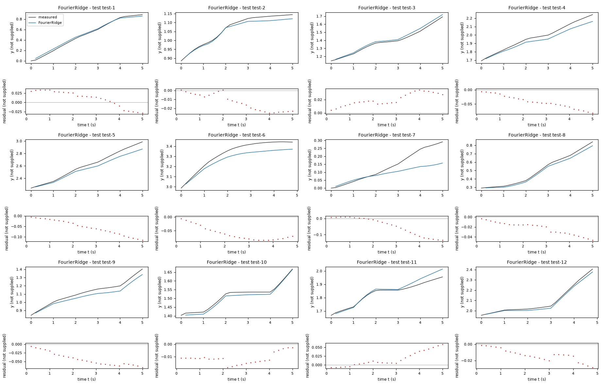
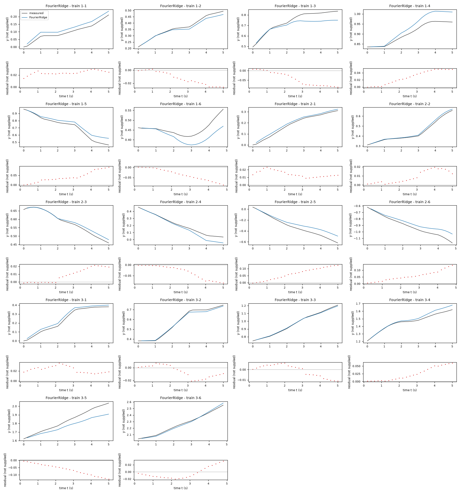
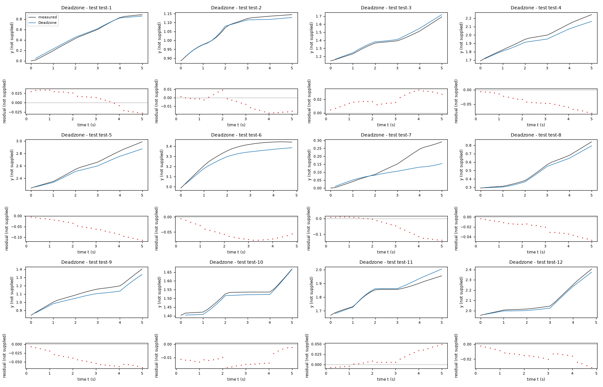
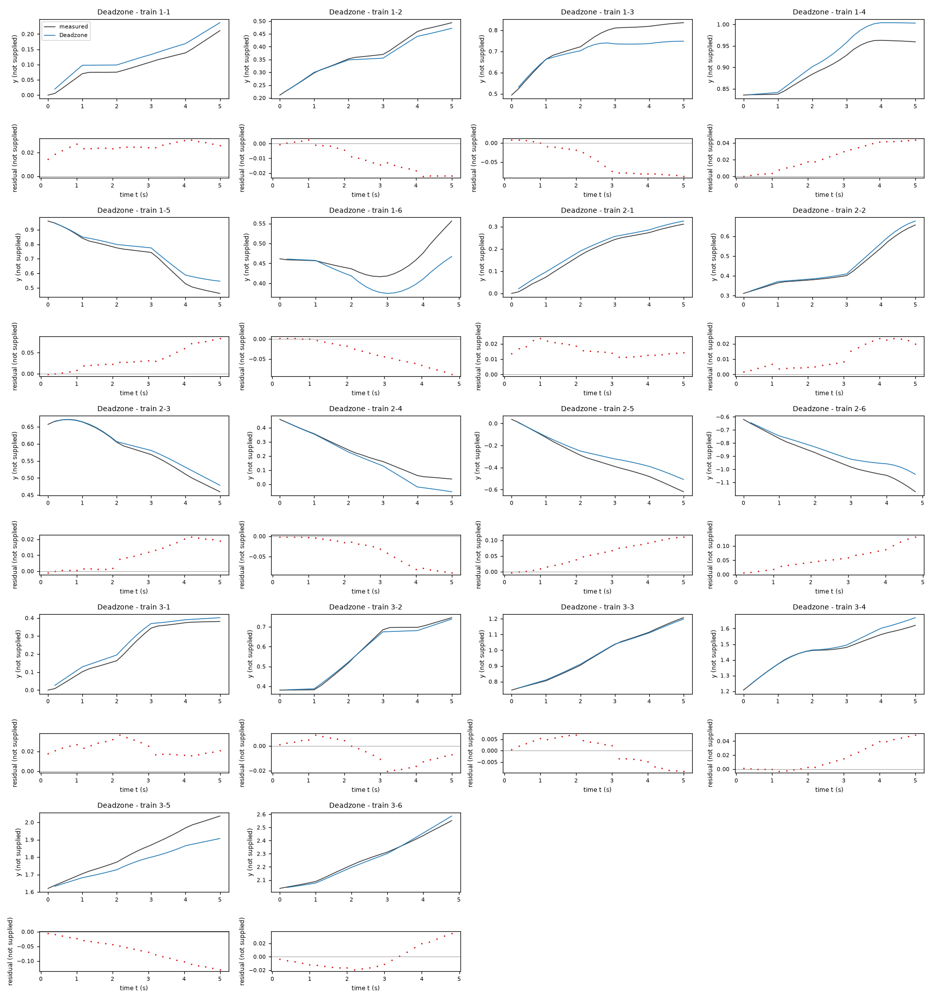
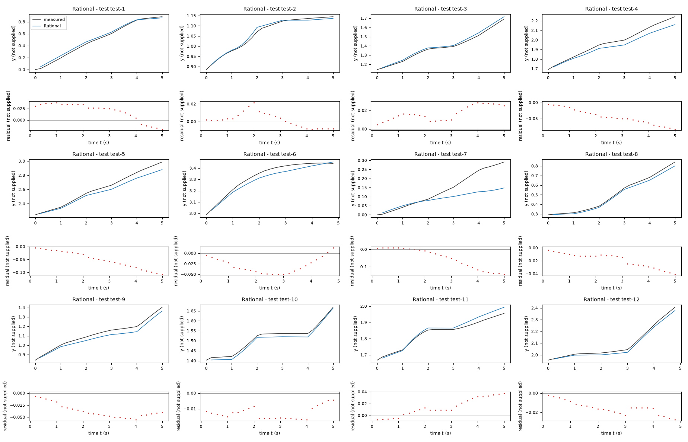
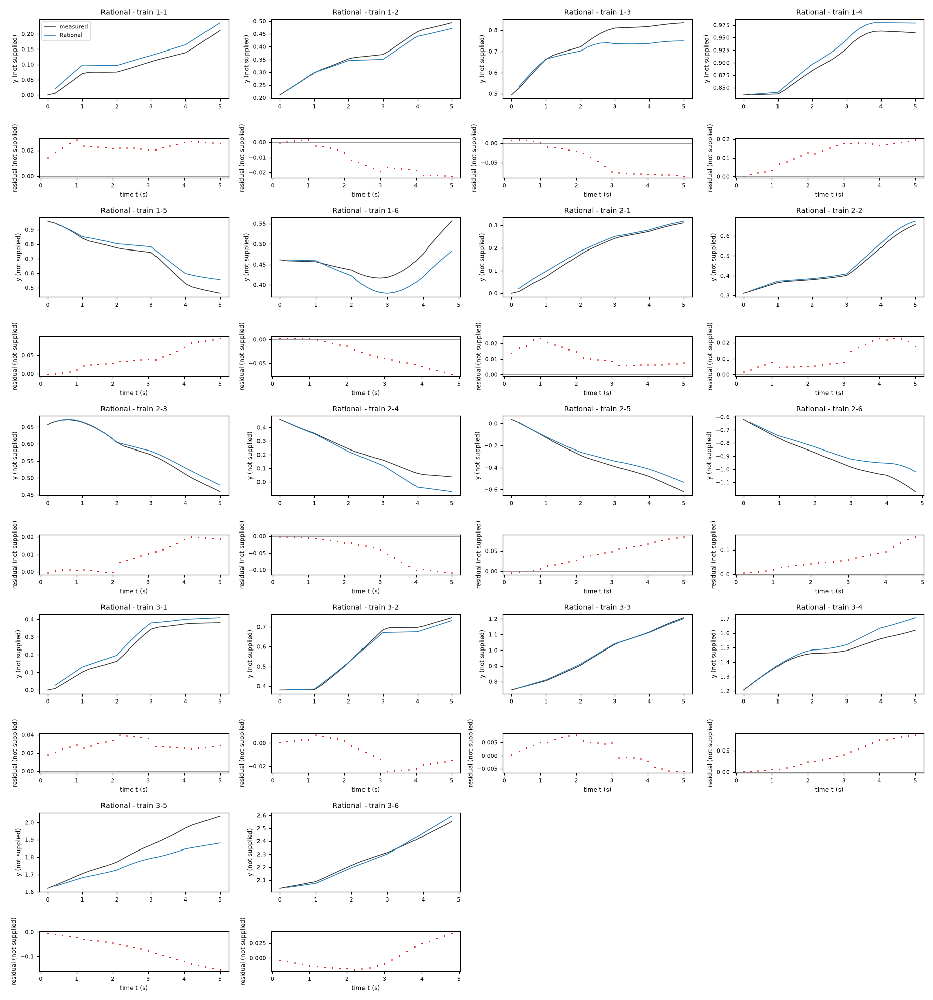
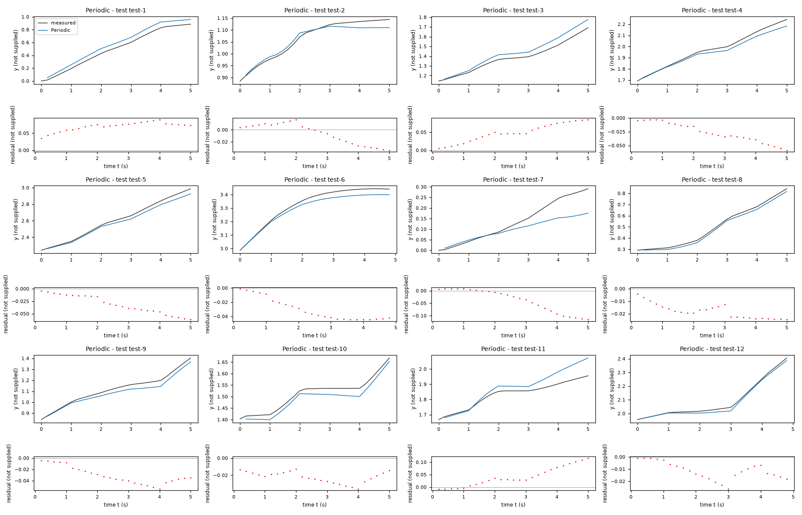
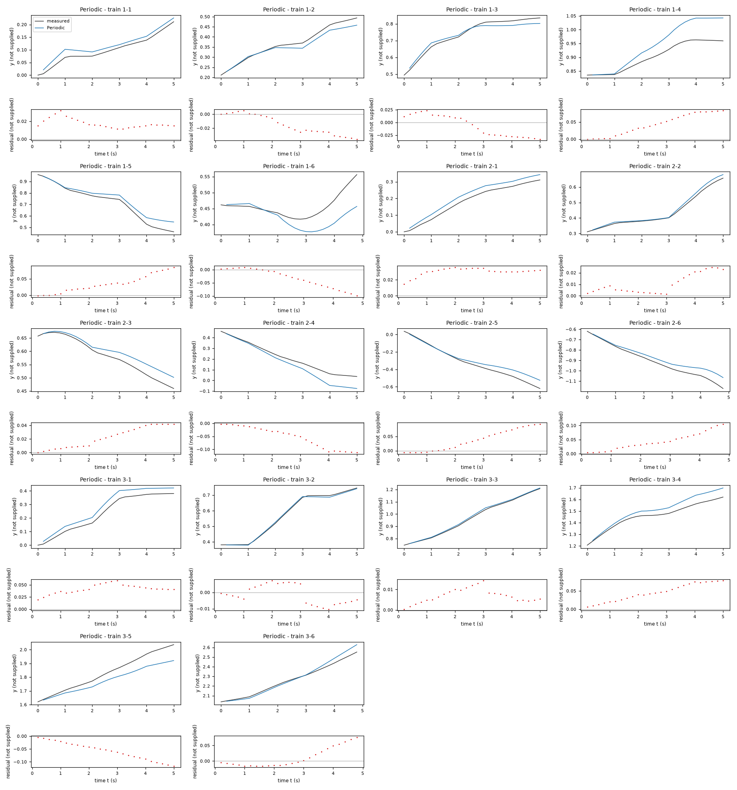

Identification task kt5o – run 3 of 5
Generated: 2026-10-08 00:00 UTC
Finished by the agent after 40 turns, 527 s of execution time and 2.36 USD. 4 models delivered, 4 evaluated.
1 Models
| Model | Fitted parameters | Training error of y | Test error of y | |
|---|---|---|---|---|
| FourierRidge | 15 | 0.04067 | 0.04154 | recommended by the agent |
| Deadzone | 7 | 0.03929 | 0.04065 | |
| Rational | 7 | 0.04165 | 0.03765 | lowest test error |
| Periodic | 9 | 0.0406 | 0.04168 |
The models are listed in the agent's order. Errors: root mean squared error between simulated and measured y. Training data: 18 segments of 25 to 26 samples (447 scored samples); the harness cuts the training trajectories into segments of at most 25 simulated samples, the length of the test trajectories, so that the two errors are comparable. Test data, which the agent cannot access: 12 trajectories of 25 to 26 samples (298 scored samples). The agent recommends a model from the training data. The model with the lowest test error is found with the test data, in hindsight, among the 4 models of this run; the agent could not make this choice.
y RMSE: 0.061109 native y units (not supplied), across the three training trajectories with each validation trajectory fitted using only the other two. Its separate coordinate maps relax the shared-displacement hypothesis, while a centered ridge penalty prevents the poor validation of unregularized fits. No test data were accessed. Deadzone, Rational and Periodic retain compact alternative hard-threshold, smooth-rational and angular-feedback structures; their validation errors are larger. Residuals still suggest omitted input-response dynamics, so the recommendation is comparative, not a claim of exact identification.c0 = 0.1566 not supplied (fitted), c1 = 0.003748 not supplied (fitted), c2 = 0.000116 not supplied (fitted), c3 = -0.0006704 not supplied (fitted), c4 = -0.0008051 not supplied (fitted), c5 = 0.001708 not supplied (fitted), c6 = 0.0003137 not supplied (fitted), c7 = 0.1621 not supplied (fitted), c8 = 0.0008383 not supplied (fitted), c9 = 0.0008558 not supplied (fitted), c10 = 0.005242 not supplied (fitted), c11 = 0.001747 not supplied (fitted), turn_gain = 0.191 not supplied (fitted), turn_bias = 0.001468 not supplied (fitted), turn_width = 0.1184 not supplied (fitted)y: 0.04067 · test error: 0.04154Equations as written in the model file
y_next = y + c0*x3*cos(x2) + c1*x3*sin(x2) + c2*cos(x2) + c3*sin(x2) + c4*x3*x4*cos(x2) + c5*x3*x4*sin(x2)
x1_next = x1 + c6*x3*cos(x2) + c7*x3*sin(x2) + c8*cos(x2) + c9*sin(x2) + c10*x3*x4*cos(x2) + c11*x3*x4*sin(x2)
x2_next = atan2(sin(x2 + (turn_gain*sign(x4)*Max(Abs(x4)-turn_width,0) + turn_bias)), cos(x2 + (turn_gain*sign(x4)*Max(Abs(x4)-turn_width,0) + turn_bias)))
Equations with the values substituted
Every parameter is replaced by its value with 4 significant digits.
Parameters and estimation
| Name | Value | Unit | Type | Description |
|---|---|---|---|---|
c0 | 0.156641 | not supplied | fitted | Coefficient of in y_next; estimated first by ordinary least squares and then jointly by regularized free-run nonlinear least squares. Its mathematical effect is a direction-dependent position increment. |
c1 | 0.00374821 | not supplied | fitted | Coefficient of in y_next; estimated first by ordinary least squares and then jointly by regularized free-run nonlinear least squares. Its mathematical effect is a direction-dependent position increment. |
c2 | 0.000116037 | not supplied | fitted | Coefficient of in y_next; estimated first by ordinary least squares and then jointly by regularized free-run nonlinear least squares. Its mathematical effect is a direction-dependent position increment. |
c3 | -0.000670364 | not supplied | fitted | Coefficient of in y_next; estimated first by ordinary least squares and then jointly by regularized free-run nonlinear least squares. Its mathematical effect is a direction-dependent position increment. |
c4 | -0.000805111 | not supplied | fitted | Coefficient of in y_next; estimated first by ordinary least squares and then jointly by regularized free-run nonlinear least squares. Its mathematical effect is a direction-dependent position increment. |
c5 | 0.00170809 | not supplied | fitted | Coefficient of in y_next; estimated first by ordinary least squares and then jointly by regularized free-run nonlinear least squares. Its mathematical effect is a direction-dependent position increment. |
c6 | 0.000313741 | not supplied | fitted | Coefficient of in x1_next; estimated first by ordinary least squares and then jointly by regularized free-run nonlinear least squares. Its mathematical effect is a direction-dependent position increment. |
c7 | 0.16212 | not supplied | fitted | Coefficient of in x1_next; estimated first by ordinary least squares and then jointly by regularized free-run nonlinear least squares. Its mathematical effect is a direction-dependent position increment. |
c8 | 0.000838257 | not supplied | fitted | Coefficient of in x1_next; estimated first by ordinary least squares and then jointly by regularized free-run nonlinear least squares. Its mathematical effect is a direction-dependent position increment. |
c9 | 0.000855796 | not supplied | fitted | Coefficient of in x1_next; estimated first by ordinary least squares and then jointly by regularized free-run nonlinear least squares. Its mathematical effect is a direction-dependent position increment. |
c10 | 0.00524249 | not supplied | fitted | Coefficient of in x1_next; estimated first by ordinary least squares and then jointly by regularized free-run nonlinear least squares. Its mathematical effect is a direction-dependent position increment. |
c11 | 0.00174749 | not supplied | fitted | Coefficient of in x1_next; estimated first by ordinary least squares and then jointly by regularized free-run nonlinear least squares. Its mathematical effect is a direction-dependent position increment. |
turn_gain | 0.191022 | not supplied | fitted | Slope of the odd dead-zone turning increment outside its width. |
turn_bias | 0.00146835 | not supplied | fitted | Constant angular increment per sample; an empirical drift, not a known torque. |
turn_width | 0.11838 | not supplied | fitted | Width of the symmetric dead zone in x4; inside it only turn_bias remains. |
- Criterion minimized
First minimize unweighted squared one-step errors of and separately, and squared principal angular-increment error for the turning law. Then jointly minimize full free-run squared errors, with residual weights
[1, 0.15, 0.1]fory,x1,x2, plus over the twelve position coefficients. Weights and penalty strength are numerical fitting conventions because native units are unspecified: the score concernsy, auxiliary-state penalties preserve useful state behavior, and anchoring to one-step estimates reduces rollout overfitting. Penalty strengths[0, 1, 10, 100]were compared on held-out trajectories;100gave the smallest pooled validation error.- Data
data/train.csv, all three trajectories and all within-trajectory transitions:447transitions (149per trajectory). Initial states are the first logged states; no transitions join different trajectories. No data were withheld from the final coefficient fits. Structure and estimation settings were compared using leave-one-trajectory-out validation, each time fitting on the other two complete trajectories. Sampling period is0.2s; coefficients below are per-sample displacements, not continuous-time rates. Column units were not supplied.- Method
For position coefficients, ordinary least squares using
numpy.linalg.lstsq, which needs no starts because the feature fit is linear. Angular coefficients are initialized by bounded nonlinear least squares usingscipy.optimize.least_squares(default trust-region reflective method), starting from[0.15, 0, 0.08]for[turn_gain, turn_bias, turn_width], a near-linear positive-turn initial hypothesis. Its bounds are , , , in unknown native coefficient units. Next all fifteen coefficients are estimated together in regularized nonlinear least squares with the same function, initialized at[0.160264315709264, -0.001505038147545064, 0.0006051045825107432, 0.0005119334113552839, -0.003761431102079015, -0.009153675025341368, 0.0008580275548284217, 0.1593359684136383, 6.752834553239162e-05, 0.001767470616277857, 0.00648449465419841, -0.0004194123102136522, 0.1322582749436064, -0.00179958058346703, 0.07928170218783891]in order[c0, c1, c2, c3, c4, c5, c6, c7, c8, c9, c10, c11, turn_gain, turn_bias, turn_width]. Position coefficients satisfy (unknown native units), a loose guard against very large cancellation; angular bounds remain as above. Rollout optimization uses andftol = xtol = gtol = 1e-9; these are dimensionless numerical solver settings. This staged method exploits linear one-step initialization, then explicitly targets repeated simulation rather than only local accuracy. No random draws or seeds apply.- Script
reproduce_final.py
The agent's explanation
Discrete-time nonlinear state-space map with Fourier/polynomial features and regularized nonlinear output-error estimation. The position updates are linear combinations of specified features, not neural-network predictions. The penalty is a centered ridge/Tikhonov penalty; see A. E. Hoerl and R. W. Kennard, Ridge Regression: Biased Estimation for Nonorthogonal Problems, Technometrics (1970), cited from memory without online verification.
y, x1, x2 are the current states; x3, x4 are the current inputs; _next denotes the next sample. c0 through c11 independently weight the six stated basis functions for each position coordinate. and are input-scaled directional increments; and allow a direction-dependent input-independent drift; and allow bilinear steering-direction modulation. Independent coefficients allow mild anisotropy and cross-direction response without assuming identical gains. is an odd piecewise-linear response with a central dead zone, and turn_bias is additive angular drift. enforces the observed principal-angle convention.
The raw affine and degree-two/degree-three polynomial increment fits had poor angular residuals because they ignored wrapping. Directional projection of measured position increments supported sine/cosine features, suggesting an empirical kinematic structure. These two leading features were data-motivated, not given physics. Constant directional terms and the bilinear input terms were deliberately proposed to accommodate observed drift and within-step turning errors; no genetic symbolic regression was run. Independent coordinate coefficients relax the shared-speed constraint of the simpler candidates. The dead-zone angular structure was selected after comparing linear, cubic, hard-dead-zone and smooth rational input laws. Unregularized Fourier rollout fits overfit held-out trajectories, motivating the centered coefficient penalty. Pooled training y rollout RMSE is 0.019645 native y units (unspecified), and pooled leave-one-trajectory-out y RMSE is 0.0611086 in the same units; both exclude the initial sample.
Only three trajectories, all starting at the same zero state, were supplied; units, system identity and hidden dynamics are unknown. Interpreting x2 as an angle in the trigonometric arguments is an empirical convention, supported by wrapping at pi, not supplied physical metadata. Prediction outside the observed input/state ranges is unvalidated. Input-change residuals and serial correlations remain, consistent with omitted dynamics; the permitted memoryless state map cannot explicitly represent actuator-rate states or previous inputs. Parameters are effective prediction coefficients, not claimed physical constants. Angular errors in fitting are reduced to the principal interval using . Residual diagnostics in final_residual_report.txt show much larger angular errors at the first sample after input changes than later in the input block. The dead-zone response can also produce nonsmooth parameter-estimation objectives; the reported optimizer is a local solution, not a certified global minimum.
Plots of simulated and measured y, and errors per trajectory


| Data | Trajectory | Scored samples | RMSE | NRMSE | R² | Failure |
|---|---|---|---|---|---|---|
| training data | 1-1 | 25 of 25 | 0.02418 | 0.4744 | 0.7749 | none |
| training data | 1-2 | 25 of 25 | 0.01562 | 0.2028 | 0.9589 | none |
| training data | 1-3 | 25 of 25 | 0.05475 | 0.6042 | 0.6349 | none |
| training data | 1-4 | 25 of 25 | 0.03368 | 0.6765 | 0.5423 | none |
| training data | 1-5 | 25 of 25 | 0.04959 | 0.3324 | 0.8895 | none |
| training data | 1-6 | 24 of 24 | 0.04494 | 1.239 | -0.5343 | none |
| training data | 2-1 | 25 of 25 | 0.01517 | 0.1606 | 0.9742 | none |
| training data | 2-2 | 25 of 25 | 0.01112 | 0.1085 | 0.9882 | none |
| training data | 2-3 | 25 of 25 | 0.01234 | 0.1797 | 0.9677 | none |
| training data | 2-4 | 25 of 25 | 0.04435 | 0.3437 | 0.8818 | none |
| training data | 2-5 | 25 of 25 | 0.07621 | 0.4273 | 0.8174 | none |
| training data | 2-6 | 24 of 24 | 0.06832 | 0.4724 | 0.7768 | none |
| training data | 3-1 | 25 of 25 | 0.02374 | 0.1829 | 0.9665 | none |
| training data | 3-2 | 25 of 25 | 0.01103 | 0.08042 | 0.9935 | none |
| training data | 3-3 | 25 of 25 | 0.005905 | 0.04095 | 0.9983 | none |
| training data | 3-4 | 25 of 25 | 0.03202 | 0.3202 | 0.8975 | none |
| training data | 3-5 | 25 of 25 | 0.07391 | 0.5959 | 0.6449 | none |
| training data | 3-6 | 24 of 24 | 0.01589 | 0.1022 | 0.9895 | none |
| test data | test-1 | 25 of 25 | 0.0236 | 0.08431 | 0.9929 | none |
| test data | test-2 | 25 of 25 | 0.01592 | 0.2079 | 0.9568 | none |
| test data | test-3 | 25 of 25 | 0.02218 | 0.1516 | 0.977 | none |
| test data | test-4 | 25 of 25 | 0.04749 | 0.316 | 0.9002 | none |
| test data | test-5 | 25 of 25 | 0.0643 | 0.2885 | 0.9168 | none |
| test data | test-6 | 24 of 24 | 0.06475 | 0.5149 | 0.7349 | none |
| test data | test-7 | 25 of 25 | 0.07027 | 0.7581 | 0.4253 | none |
| test data | test-8 | 25 of 25 | 0.02566 | 0.1425 | 0.9797 | none |
| test data | test-9 | 25 of 25 | 0.04679 | 0.3536 | 0.875 | none |
| test data | test-10 | 25 of 25 | 0.01224 | 0.1802 | 0.9675 | none |
| test data | test-11 | 25 of 25 | 0.02635 | 0.337 | 0.8864 | none |
| test data | test-12 | 24 of 24 | 0.01525 | 0.1146 | 0.9869 | none |
RMSE of y; NRMSE = RMSE / σ and R² = 1 − SSE / Σ(y[k] − μ)², with μ and σ the mean and the population standard deviation of the measured output on the scored samples.
speed_gain = 0.1566 not supplied (fitted), speed_bias = 0.0002062 not supplied (fitted), turn_gain = 0.1912 not supplied (fitted), turn_bias = 0.00141 not supplied (fitted), turn_width = 0.1184 not supplied (fitted), direction_factor = -0.06404 (fitted), direction_bias = 0.01875 not supplied (fitted)y: 0.03929 · test error: 0.04065Equations as written in the model file
y_next = y + (speed_gain*x3 + speed_bias)*cos(x2 + direction_factor*(turn_gain*sign(x4)*Max(Abs(x4)-turn_width,0) + turn_bias) + direction_bias)
x1_next = x1 + (speed_gain*x3 + speed_bias)*sin(x2 + direction_factor*(turn_gain*sign(x4)*Max(Abs(x4)-turn_width,0) + turn_bias) + direction_bias)
x2_next = atan2(sin(x2 + (turn_gain*sign(x4)*Max(Abs(x4)-turn_width,0) + turn_bias)), cos(x2 + (turn_gain*sign(x4)*Max(Abs(x4)-turn_width,0) + turn_bias)))
Equations with the values substituted
Every parameter is replaced by its value with 4 significant digits.
Parameters and estimation
| Name | Value | Unit | Type | Description |
|---|---|---|---|---|
speed_gain | 0.156592 | not supplied | fitted | Input coefficient in the common displacement magnitude. |
speed_bias | 0.000206219 | not supplied | fitted | Input-independent common displacement increment. |
turn_gain | 0.191228 | not supplied | fitted | Scale coefficient in the turning response. |
turn_bias | 0.00140992 | not supplied | fitted | Additive angular increment per sample. |
turn_width | 0.11838 | not supplied | fitted | Dead-zone width in the turning input, or rational smoothing width. |
direction_factor | -0.0640378 | - | fitted | Multiplier of the predicted angular increment in the displacement direction; estimated to accommodate within-sample motion and omitted transients. |
direction_bias | 0.0187458 | not supplied | fitted | Additive shift in the displacement direction. |
- Criterion minimized
Initialization minimizes the sum of squared discrepancies of displacement magnitude and angular increment using residuals
[v - 0.2*q0, 0.3*(h-q1)], where is the predicted displacement magnitude,hdenotes the input-only part of the stated angular increment, andq0is measured displacement projected on the midpoint direction and divided by0.2s andq1is the principal observed angular increment. The initial criterion uses input-onlyh, even for Periodic. Then minimize full free-run squared state errors, with residual weights[1, 0.15, 0.1]in the ordery,x1,x2. Numerical weights are empirical fitting conventions because units are unknown; simulatedyis the scored output, while auxiliary errors discourage implausible state paths. All initial samples are excluded from the objective.- Data
data/train.csv, all three trajectories and all within-trajectory transitions:447transitions (149per trajectory). Initial states are the first logged states; no transitions join different trajectories. No data were withheld from the final coefficient fits. Structure and estimation settings were compared using leave-one-trajectory-out validation, each time fitting on the other two complete trajectories. Sampling period is0.2s; coefficients below are per-sample displacements, not continuous-time rates. Column units were not supplied.- Method
Bounded nonlinear least squares with
scipy.optimize.least_squares, default trust-region reflective method, both stages. This handles the nonlinear width and multi-step dependence; ordinary least squares cannot optimize these jointly. Initialization starts from[0.16, 0, 0.19, 0.001, 0.1, -0.4, 0]in order[speed_gain, speed_bias, turn_gain, turn_bias, turn_width, direction_factor, direction_bias], representing a small positive input gain, small drift, moderate dead-zone width and direction-lag hypothesis. The actual second-stage start is[0.1597761494620067, 0.001119701709094819, 0.1340920971930033, -0.001805857119707318, 0.08729290487388883, -0.4, 0]in the same order. Both stages include all coefficients in the optimizer vector;direction_factor,direction_biasand any angular harmonic coefficients do not affect the first-stage input-only criterion and retain their initial values until the joint rollout fit. First-stage settings are with other tolerances at SciPy defaults; second-stage settings are ,ftol = xtol = gtol = 1e-9. Bounds are , , , , , , ; except the dimensionlessdirection_factor, native coefficient units are unknown. Bounds are loose numerical guards for gains/drifts; positive rational width prevents division by zero. No random numbers are used; no seed applies. All final parameters are estimated together in the second stage.- Script
reproduce_final.py
The agent's explanation
Kinematic unicycle-like discrete-time state map with a hard-dead-zone static input response. For the basic directional kinematic structure, see S. M. LaValle, Planning Algorithms, Cambridge University Press (2006), differential constraints chapter, cited from memory without online verification. No supplied system description establishes that this is physically a vehicle.
y, x1, x2 are current states; x3, x4 are current inputs; the suffix _next denotes the next sample. is the common signed displacement magnitude per sample: speed_gain scales the input, while speed_bias adds input-independent drift. is the angular increment: turn_gain scales the input response, turn_width sets its width, and turn_bias adds constant angular drift. is the displacement direction; direction_factor and direction_bias are empirical fitted adjustments, not known physical averaging constants. The coordinate updates are and . The expression wraps the angular update. The term suppresses small inputs and is odd outside its central dead zone.
State wrapping and observed alignment of displacement with x2 motivated common directional increments. Shared displacement magnitude and additive angular increments are a deliberately parsimonious kinematic hypothesis; the system identity remains unknown. Affine and polynomial increment maps, linear-input kinematics, and cubic angular-input laws were examined first. Hard dead zones improved leave-one-trajectory-out simulation relative to the linear/cubic laws. The estimated direction factor and offset were proposed after residuals concentrated at input changes, to approximate averaging and omitted transients without introducing unavailable lag variables. Pooled training y free-run RMSE is 0.0203898 native y units (unspecified); pooled leave-one-trajectory-out y RMSE is 0.099011 in the same units, excluding each initial sample.
Only three trajectories, all starting at the same zero state, were supplied; units, system identity and hidden dynamics are unknown. Interpreting x2 as an angle in the trigonometric arguments is an empirical convention, supported by wrapping at pi, not supplied physical metadata. Prediction outside the observed input/state ranges is unvalidated. Input-change residuals and serial correlations remain, consistent with omitted dynamics; the permitted memoryless state map cannot explicitly represent actuator-rate states or previous inputs. Parameters are effective prediction coefficients, not claimed physical constants. Angular errors in fitting are reduced to the principal interval using . The common-magnitude constraint may miss directional anisotropy. The direction correction does not actually supply an actuator-memory state; validation cannot guarantee extrapolation to other input switching rates.
Plots of simulated and measured y, and errors per trajectory


| Data | Trajectory | Scored samples | RMSE | NRMSE | R² | Failure |
|---|---|---|---|---|---|---|
| training data | 1-1 | 25 of 25 | 0.02531 | 0.4967 | 0.7533 | none |
| training data | 1-2 | 25 of 25 | 0.01326 | 0.1721 | 0.9704 | none |
| training data | 1-3 | 25 of 25 | 0.05719 | 0.631 | 0.6018 | none |
| training data | 1-4 | 25 of 25 | 0.02807 | 0.5639 | 0.682 | none |
| training data | 1-5 | 25 of 25 | 0.04337 | 0.2907 | 0.9155 | none |
| training data | 1-6 | 24 of 24 | 0.04512 | 1.244 | -0.5467 | none |
| training data | 2-1 | 25 of 25 | 0.01628 | 0.1723 | 0.9703 | none |
| training data | 2-2 | 25 of 25 | 0.01395 | 0.1361 | 0.9815 | none |
| training data | 2-3 | 25 of 25 | 0.01259 | 0.1833 | 0.9664 | none |
| training data | 2-4 | 25 of 25 | 0.04831 | 0.3744 | 0.8598 | none |
| training data | 2-5 | 25 of 25 | 0.06666 | 0.3737 | 0.8603 | none |
| training data | 2-6 | 24 of 24 | 0.0672 | 0.4646 | 0.7841 | none |
| training data | 3-1 | 25 of 25 | 0.02427 | 0.187 | 0.965 | none |
| training data | 3-2 | 25 of 25 | 0.01042 | 0.07597 | 0.9942 | none |
| training data | 3-3 | 25 of 25 | 0.005354 | 0.03713 | 0.9986 | none |
| training data | 3-4 | 25 of 25 | 0.02458 | 0.2458 | 0.9396 | none |
| training data | 3-5 | 25 of 25 | 0.07457 | 0.6012 | 0.6386 | none |
| training data | 3-6 | 24 of 24 | 0.01681 | 0.1082 | 0.9883 | none |
| test data | test-1 | 25 of 25 | 0.02354 | 0.08408 | 0.9929 | none |
| test data | test-2 | 25 of 25 | 0.01064 | 0.139 | 0.9807 | none |
| test data | test-3 | 25 of 25 | 0.02185 | 0.1494 | 0.9777 | none |
| test data | test-4 | 25 of 25 | 0.04742 | 0.3155 | 0.9004 | none |
| test data | test-5 | 25 of 25 | 0.06368 | 0.2857 | 0.9184 | none |
| test data | test-6 | 24 of 24 | 0.05839 | 0.4643 | 0.7844 | none |
| test data | test-7 | 25 of 25 | 0.07202 | 0.777 | 0.3963 | none |
| test data | test-8 | 25 of 25 | 0.02574 | 0.1429 | 0.9796 | none |
| test data | test-9 | 25 of 25 | 0.04687 | 0.3542 | 0.8745 | none |
| test data | test-10 | 25 of 25 | 0.01239 | 0.1825 | 0.9667 | none |
| test data | test-11 | 25 of 25 | 0.02265 | 0.2896 | 0.9161 | none |
| test data | test-12 | 24 of 24 | 0.01655 | 0.1244 | 0.9845 | none |
RMSE of y; NRMSE = RMSE / σ and R² = 1 − SSE / Σ(y[k] − μ)², with μ and σ the mean and the population standard deviation of the measured output on the scored samples.
speed_gain = 0.161 not supplied (fitted), speed_bias = -0.0003289 not supplied (fitted), turn_gain = 0.2111 not supplied (fitted), turn_bias = 0.0019 not supplied (fitted), turn_width = 0.4058 not supplied (fitted), direction_factor = -0.1403 (fitted), direction_bias = 0.02139 not supplied (fitted)y: 0.04165 · test error: 0.03765Equations as written in the model file
y_next = y + (speed_gain*x3 + speed_bias)*cos(x2 + direction_factor*(turn_gain*x4**3/(x4**2 + turn_width**2) + turn_bias) + direction_bias)
x1_next = x1 + (speed_gain*x3 + speed_bias)*sin(x2 + direction_factor*(turn_gain*x4**3/(x4**2 + turn_width**2) + turn_bias) + direction_bias)
x2_next = atan2(sin(x2 + (turn_gain*x4**3/(x4**2 + turn_width**2) + turn_bias)), cos(x2 + (turn_gain*x4**3/(x4**2 + turn_width**2) + turn_bias)))
Equations with the values substituted
Every parameter is replaced by its value with 4 significant digits.
Parameters and estimation
| Name | Value | Unit | Type | Description |
|---|---|---|---|---|
speed_gain | 0.16102 | not supplied | fitted | Input coefficient in the common displacement magnitude. |
speed_bias | -0.000328912 | not supplied | fitted | Input-independent common displacement increment. |
turn_gain | 0.211117 | not supplied | fitted | Scale coefficient in the turning response. |
turn_bias | 0.00190034 | not supplied | fitted | Additive angular increment per sample. |
turn_width | 0.405822 | not supplied | fitted | Dead-zone width in the turning input, or rational smoothing width. |
direction_factor | -0.14031 | - | fitted | Multiplier of the predicted angular increment in the displacement direction; estimated to accommodate within-sample motion and omitted transients. |
direction_bias | 0.02139 | not supplied | fitted | Additive shift in the displacement direction. |
- Criterion minimized
Initialization minimizes the sum of squared discrepancies of displacement magnitude and angular increment using residuals
[v - 0.2*q0, 0.3*(h-q1)], where is the predicted displacement magnitude,hdenotes the input-only part of the stated angular increment, andq0is measured displacement projected on the midpoint direction and divided by0.2s andq1is the principal observed angular increment. The initial criterion uses input-onlyh, even for Periodic. Then minimize full free-run squared state errors, with residual weights[1, 0.15, 0.1]in the ordery,x1,x2. Numerical weights are empirical fitting conventions because units are unknown; simulatedyis the scored output, while auxiliary errors discourage implausible state paths. All initial samples are excluded from the objective.- Data
data/train.csv, all three trajectories and all within-trajectory transitions:447transitions (149per trajectory). Initial states are the first logged states; no transitions join different trajectories. No data were withheld from the final coefficient fits. Structure and estimation settings were compared using leave-one-trajectory-out validation, each time fitting on the other two complete trajectories. Sampling period is0.2s; coefficients below are per-sample displacements, not continuous-time rates. Column units were not supplied.- Method
Bounded nonlinear least squares with
scipy.optimize.least_squares, default trust-region reflective method, both stages. This handles the nonlinear width and multi-step dependence; ordinary least squares cannot optimize these jointly. Initialization starts from[0.16, 0, 0.19, 0.001, 0.1, -0.4, 0]in order[speed_gain, speed_bias, turn_gain, turn_bias, turn_width, direction_factor, direction_bias], representing a small positive input gain, small drift, moderate dead-zone width and direction-lag hypothesis. The actual second-stage start is[0.1597117795232275, 0.001112601052816941, 0.1238469856471056, -0.001837149024382607, 0.1601249577305721, -0.4, 0]in the same order. Both stages include all coefficients in the optimizer vector;direction_factor,direction_biasand any angular harmonic coefficients do not affect the first-stage input-only criterion and retain their initial values until the joint rollout fit. First-stage settings are with other tolerances at SciPy defaults; second-stage settings are ,ftol = xtol = gtol = 1e-9. Bounds are , , , , , , ; except the dimensionlessdirection_factor, native coefficient units are unknown. Bounds are loose numerical guards for gains/drifts; positive rational width prevents division by zero. No random numbers are used; no seed applies. All final parameters are estimated together in the second stage.- Script
reproduce_final.py
The agent's explanation
Kinematic unicycle-like discrete-time state map with a smooth rational static input response. For the basic directional kinematic structure, see S. M. LaValle, Planning Algorithms, Cambridge University Press (2006), differential constraints chapter, cited from memory without online verification. No supplied system description establishes that this is physically a vehicle.
y, x1, x2 are current states; x3, x4 are current inputs; the suffix _next denotes the next sample. is the common signed displacement magnitude per sample: speed_gain scales the input, while speed_bias adds input-independent drift. is the angular increment: turn_gain scales the input response, turn_width sets its width, and turn_bias adds constant angular drift. is the displacement direction; direction_factor and direction_bias are empirical fitted adjustments, not known physical averaging constants. The coordinate updates are and . The expression wraps the angular update. The rational term tends cubically to zero near the origin and approximately linearly far beyond the width; the strictly positive denominator avoids singularities.
State wrapping and observed alignment of displacement with x2 motivated common directional increments. Shared displacement magnitude and additive angular increments are a deliberately parsimonious kinematic hypothesis; the system identity remains unknown. Affine and polynomial increment maps, linear-input kinematics, and cubic angular-input laws were examined first. Hard dead zones improved leave-one-trajectory-out simulation relative to the linear/cubic laws. The estimated direction factor and offset were proposed after residuals concentrated at input changes, to approximate averaging and omitted transients without introducing unavailable lag variables. This candidate replaces the nonsmooth dead-zone operator with the guessed rational odd function : it suppresses small inputs smoothly and becomes approximately linear for large inputs. It represents uncertainty about whether a sharp threshold is warranted. Pooled training y free-run RMSE is 0.0218197 native y units (unspecified); pooled leave-one-trajectory-out y RMSE is 0.128096 in the same units, excluding each initial sample.
Only three trajectories, all starting at the same zero state, were supplied; units, system identity and hidden dynamics are unknown. Interpreting x2 as an angle in the trigonometric arguments is an empirical convention, supported by wrapping at pi, not supplied physical metadata. Prediction outside the observed input/state ranges is unvalidated. Input-change residuals and serial correlations remain, consistent with omitted dynamics; the permitted memoryless state map cannot explicitly represent actuator-rate states or previous inputs. Parameters are effective prediction coefficients, not claimed physical constants. Angular errors in fitting are reduced to the principal interval using . The common-magnitude constraint may miss directional anisotropy. The direction correction does not actually supply an actuator-memory state; validation cannot guarantee extrapolation to other input switching rates.
Plots of simulated and measured y, and errors per trajectory


| Data | Trajectory | Scored samples | RMSE | NRMSE | R² | Failure |
|---|---|---|---|---|---|---|
| training data | 1-1 | 25 of 25 | 0.02318 | 0.4548 | 0.7931 | none |
| training data | 1-2 | 25 of 25 | 0.01453 | 0.1887 | 0.9644 | none |
| training data | 1-3 | 25 of 25 | 0.05662 | 0.6248 | 0.6096 | none |
| training data | 1-4 | 25 of 25 | 0.01398 | 0.2809 | 0.9211 | none |
| training data | 1-5 | 25 of 25 | 0.05037 | 0.3376 | 0.886 | none |
| training data | 1-6 | 24 of 24 | 0.03863 | 1.065 | -0.1338 | none |
| training data | 2-1 | 25 of 25 | 0.01322 | 0.1399 | 0.9804 | none |
| training data | 2-2 | 25 of 25 | 0.01347 | 0.1314 | 0.9827 | none |
| training data | 2-3 | 25 of 25 | 0.01159 | 0.1688 | 0.9715 | none |
| training data | 2-4 | 25 of 25 | 0.06014 | 0.4662 | 0.7827 | none |
| training data | 2-5 | 25 of 25 | 0.04934 | 0.2766 | 0.9235 | none |
| training data | 2-6 | 24 of 24 | 0.07303 | 0.5049 | 0.7451 | none |
| training data | 3-1 | 25 of 25 | 0.02932 | 0.2259 | 0.949 | none |
| training data | 3-2 | 25 of 25 | 0.01373 | 0.1001 | 0.99 | none |
| training data | 3-3 | 25 of 25 | 0.004754 | 0.03297 | 0.9989 | none |
| training data | 3-4 | 25 of 25 | 0.04875 | 0.4875 | 0.7623 | none |
| training data | 3-5 | 25 of 25 | 0.08612 | 0.6943 | 0.5179 | none |
| training data | 3-6 | 24 of 24 | 0.01975 | 0.1271 | 0.9838 | none |
| test data | test-1 | 25 of 25 | 0.02677 | 0.09562 | 0.9909 | none |
| test data | test-2 | 25 of 25 | 0.008449 | 0.1103 | 0.9878 | none |
| test data | test-3 | 25 of 25 | 0.01827 | 0.1249 | 0.9844 | none |
| test data | test-4 | 25 of 25 | 0.04979 | 0.3312 | 0.8903 | none |
| test data | test-5 | 25 of 25 | 0.05987 | 0.2686 | 0.9279 | none |
| test data | test-6 | 24 of 24 | 0.0341 | 0.2712 | 0.9265 | none |
| test data | test-7 | 25 of 25 | 0.07556 | 0.8152 | 0.3355 | none |
| test data | test-8 | 25 of 25 | 0.02185 | 0.1213 | 0.9853 | none |
| test data | test-9 | 25 of 25 | 0.03946 | 0.2982 | 0.9111 | none |
| test data | test-10 | 25 of 25 | 0.01322 | 0.1947 | 0.9621 | none |
| test data | test-11 | 25 of 25 | 0.02013 | 0.2574 | 0.9338 | none |
| test data | test-12 | 24 of 24 | 0.01687 | 0.1268 | 0.9839 | none |
RMSE of y; NRMSE = RMSE / σ and R² = 1 − SSE / Σ(y[k] − μ)², with μ and σ the mean and the population standard deviation of the measured output on the scored samples.
speed_gain = 0.1822 not supplied (fitted), speed_bias = -0.00215 not supplied (fitted), turn_gain = 0.1641 not supplied (fitted), turn_bias = -0.0003533 not supplied (fitted), turn_width = 0.06496 not supplied (fitted), direction_factor = -0.345 (fitted), direction_bias = 0.006587 not supplied (fitted), sine_bias = 0.002905 not supplied (fitted), cosine_bias = 0.002706 not supplied (fitted)y: 0.0406 · test error: 0.04168Equations as written in the model file
y_next = y + (speed_gain*x3 + speed_bias)*cos(x2 + direction_factor*((turn_gain*sign(x4)*Max(Abs(x4)-turn_width,0) + turn_bias) + sine_bias*sin(x2) + cosine_bias*cos(x2)) + direction_bias)
x1_next = x1 + (speed_gain*x3 + speed_bias)*sin(x2 + direction_factor*((turn_gain*sign(x4)*Max(Abs(x4)-turn_width,0) + turn_bias) + sine_bias*sin(x2) + cosine_bias*cos(x2)) + direction_bias)
x2_next = atan2(sin(x2 + ((turn_gain*sign(x4)*Max(Abs(x4)-turn_width,0) + turn_bias) + sine_bias*sin(x2) + cosine_bias*cos(x2))), cos(x2 + ((turn_gain*sign(x4)*Max(Abs(x4)-turn_width,0) + turn_bias) + sine_bias*sin(x2) + cosine_bias*cos(x2))))
Equations with the values substituted
Every parameter is replaced by its value with 4 significant digits.
Parameters and estimation
| Name | Value | Unit | Type | Description |
|---|---|---|---|---|
speed_gain | 0.182178 | not supplied | fitted | Input coefficient in the common displacement magnitude. |
speed_bias | -0.00215041 | not supplied | fitted | Input-independent common displacement increment. |
turn_gain | 0.164132 | not supplied | fitted | Scale coefficient in the turning response. |
turn_bias | -0.000353284 | not supplied | fitted | Additive angular increment per sample. |
turn_width | 0.0649557 | not supplied | fitted | Dead-zone width in the turning input, or rational smoothing width. |
direction_factor | -0.345006 | - | fitted | Multiplier of the predicted angular increment in the displacement direction; estimated to accommodate within-sample motion and omitted transients. |
direction_bias | 0.00658683 | not supplied | fitted | Additive shift in the displacement direction. |
sine_bias | 0.0029052 | not supplied | fitted | Coefficient of in the angular increment. |
cosine_bias | 0.00270619 | not supplied | fitted | Coefficient of in the angular increment. |
- Criterion minimized
Initialization minimizes the sum of squared discrepancies of displacement magnitude and angular increment using residuals
[v - 0.2*q0, 0.3*(h-q1)], where is the predicted displacement magnitude,hdenotes the input-only part of the stated angular increment, andq0is measured displacement projected on the midpoint direction and divided by0.2s andq1is the principal observed angular increment. The initial criterion uses input-onlyh, even for Periodic. Then minimize full free-run squared state errors, with residual weights[1, 1, 0.3]in the ordery,x1,x2. Numerical weights are empirical fitting conventions because units are unknown; simulatedyis the scored output, while auxiliary errors discourage implausible state paths. All initial samples are excluded from the objective.- Data
data/train.csv, all three trajectories and all within-trajectory transitions:447transitions (149per trajectory). Initial states are the first logged states; no transitions join different trajectories. No data were withheld from the final coefficient fits. Structure and estimation settings were compared using leave-one-trajectory-out validation, each time fitting on the other two complete trajectories. Sampling period is0.2s; coefficients below are per-sample displacements, not continuous-time rates. Column units were not supplied.- Method
Bounded nonlinear least squares with
scipy.optimize.least_squares, default trust-region reflective method, both stages. This handles the nonlinear width and multi-step dependence; ordinary least squares cannot optimize these jointly. Initialization starts from[0.16, 0, 0.19, 0.001, 0.1, -0.4, 0, 0, 0]in order[speed_gain, speed_bias, turn_gain, turn_bias, turn_width, direction_factor, direction_bias, sine_bias, cosine_bias], representing a small positive input gain, small drift, moderate dead-zone width and direction-lag hypothesis. The actual second-stage start is[0.1597761296703865, 0.001119596470303432, 0.1340913833399042, -0.001805858644315972, 0.08728982381566711, -0.4, 0, 0, 0]in the same order. Both stages include all coefficients in the optimizer vector;direction_factor,direction_biasand any angular harmonic coefficients do not affect the first-stage input-only criterion and retain their initial values until the joint rollout fit. First-stage settings are with other tolerances at SciPy defaults; second-stage settings are ,ftol = xtol = gtol = 1e-9. Bounds are , , , , , , , , ; except the dimensionlessdirection_factor, native coefficient units are unknown. Bounds are loose numerical guards for gains/drifts; positive rational width prevents division by zero. No random numbers are used; no seed applies. All final parameters are estimated together in the second stage.- Script
reproduce_final.py
The agent's explanation
Kinematic unicycle-like discrete-time state map with a sparse first-harmonic angular feedback correction and hard-dead-zone input response. For the basic directional kinematic structure, see S. M. LaValle, Planning Algorithms, Cambridge University Press (2006), differential constraints chapter, cited from memory without online verification. No supplied system description establishes that this is physically a vehicle.
y, x1, x2 are current states; x3, x4 are current inputs; the suffix _next denotes the next sample. is the common signed displacement magnitude per sample: speed_gain scales the input, while speed_bias adds input-independent drift. is the angular increment: turn_gain scales the input response, turn_width sets its width, and turn_bias adds constant angular drift. is the displacement direction; direction_factor and direction_bias are empirical fitted adjustments, not known physical averaging constants. The coordinate updates are and . The expression wraps the angular update. The term suppresses small inputs and is odd outside its central dead zone. The terms and are bounded first-harmonic angular corrections; no physical mechanism is identified.
State wrapping and observed alignment of displacement with x2 motivated common directional increments. Shared displacement magnitude and additive angular increments are a deliberately parsimonious kinematic hypothesis; the system identity remains unknown. Affine and polynomial increment maps, linear-input kinematics, and cubic angular-input laws were examined first. Hard dead zones improved leave-one-trajectory-out simulation relative to the linear/cubic laws. The estimated direction factor and offset were proposed after residuals concentrated at input changes, to approximate averaging and omitted transients without introducing unavailable lag variables. The proposed terms and allow a bounded orientation-dependent angular residual. They were an empirical alternative to radial position-dependent speed correction and saturation/asymmetric dead-zone fits, not a known force law. They reduced balanced-state trajectory error; the balanced residual weights were retained because they validated better for this particular family than the output-emphasized weights. Pooled training y free-run RMSE is 0.032097 native y units (unspecified); pooled leave-one-trajectory-out y RMSE is 0.146327 in the same units, excluding each initial sample.
Only three trajectories, all starting at the same zero state, were supplied; units, system identity and hidden dynamics are unknown. Interpreting x2 as an angle in the trigonometric arguments is an empirical convention, supported by wrapping at pi, not supplied physical metadata. Prediction outside the observed input/state ranges is unvalidated. Input-change residuals and serial correlations remain, consistent with omitted dynamics; the permitted memoryless state map cannot explicitly represent actuator-rate states or previous inputs. Parameters are effective prediction coefficients, not claimed physical constants. Angular errors in fitting are reduced to the principal interval using . The common-magnitude constraint may miss directional anisotropy. The direction correction does not actually supply an actuator-memory state; validation cannot guarantee extrapolation to other input switching rates.
Plots of simulated and measured y, and errors per trajectory


| Data | Trajectory | Scored samples | RMSE | NRMSE | R² | Failure |
|---|---|---|---|---|---|---|
| training data | 1-1 | 25 of 25 | 0.01848 | 0.3627 | 0.8685 | none |
| training data | 1-2 | 25 of 25 | 0.02048 | 0.2659 | 0.9293 | none |
| training data | 1-3 | 25 of 25 | 0.02109 | 0.2327 | 0.9458 | none |
| training data | 1-4 | 25 of 25 | 0.05241 | 1.053 | -0.1085 | none |
| training data | 1-5 | 25 of 25 | 0.04345 | 0.2912 | 0.9152 | none |
| training data | 1-6 | 24 of 24 | 0.04761 | 1.312 | -0.7217 | none |
| training data | 2-1 | 25 of 25 | 0.03075 | 0.3255 | 0.894 | none |
| training data | 2-2 | 25 of 25 | 0.01316 | 0.1284 | 0.9835 | none |
| training data | 2-3 | 25 of 25 | 0.02671 | 0.3891 | 0.8486 | none |
| training data | 2-4 | 25 of 25 | 0.06586 | 0.5104 | 0.7395 | none |
| training data | 2-5 | 25 of 25 | 0.05127 | 0.2875 | 0.9174 | none |
| training data | 2-6 | 24 of 24 | 0.05292 | 0.3659 | 0.8661 | none |
| training data | 3-1 | 25 of 25 | 0.04294 | 0.3309 | 0.8905 | none |
| training data | 3-2 | 25 of 25 | 0.005972 | 0.04354 | 0.9981 | none |
| training data | 3-3 | 25 of 25 | 0.0077 | 0.0534 | 0.9971 | none |
| training data | 3-4 | 25 of 25 | 0.05127 | 0.5127 | 0.7371 | none |
| training data | 3-5 | 25 of 25 | 0.06633 | 0.5348 | 0.714 | none |
| training data | 3-6 | 24 of 24 | 0.03223 | 0.2074 | 0.957 | none |
| test data | test-1 | 25 of 25 | 0.0714 | 0.255 | 0.935 | none |
| test data | test-2 | 25 of 25 | 0.01789 | 0.2336 | 0.9454 | none |
| test data | test-3 | 25 of 25 | 0.05476 | 0.3743 | 0.8599 | none |
| test data | test-4 | 25 of 25 | 0.03182 | 0.2117 | 0.9552 | none |
| test data | test-5 | 25 of 25 | 0.03616 | 0.1622 | 0.9737 | none |
| test data | test-6 | 24 of 24 | 0.03378 | 0.2686 | 0.9278 | none |
| test data | test-7 | 25 of 25 | 0.05932 | 0.6399 | 0.5905 | none |
| test data | test-8 | 25 of 25 | 0.01886 | 0.1047 | 0.989 | none |
| test data | test-9 | 25 of 25 | 0.03408 | 0.2575 | 0.9337 | none |
| test data | test-10 | 25 of 25 | 0.02313 | 0.3405 | 0.884 | none |
| test data | test-11 | 25 of 25 | 0.05599 | 0.716 | 0.4874 | none |
| test data | test-12 | 24 of 24 | 0.01329 | 0.09989 | 0.99 | none |
RMSE of y; NRMSE = RMSE / σ and R² = 1 − SSE / Σ(y[k] − μ)², with μ and σ the mean and the population standard deviation of the measured output on the scored samples.
2 Course of the run
The system prompt, TASK.md and FORMAT.md that the agent received are shown on the page of the experiment.
0:00Harness: opening message to the agent
10:14Read TASK.md0.01
5,474 input and 19 output tokens; 0.011 USD for this turn.
TASK.md
output as sent to the agent (3,266 characters, 39 lines)
[TASK.md: 3239 characters] # Task: Identification task kt5o ## 1 System and intended use The task gives no description of the system. The task states no intended use of the model. ## 2 Data `data/train.csv` holds 450 samples: 3 trajectories of 150 consecutive samples; the column `trajectory` holds the trajectory number. Row k+1 of a trajectory is the sample that follows row k; different trajectories are separate experiments. The sampling period is T_s = 0.2 s. | Column | Role | Unit | Training range | Description | |---|---|---|---|---| | `y` | state, scored output | not supplied | not declared | not supplied | | `x1` | state | not supplied | not declared | not supplied | | `x2` | state | not supplied | not declared | not supplied | | `x3` | input | not supplied | not declared | not supplied | | `x4` | input | not supplied | not declared | not supplied | The task does not state the units. The task does not describe the columns. ## 3 What you deliver A candidate is a discrete-time model of 3 closed-form expressions, `y_next`, `x1_next` and `x2_next`: the states `y`, `x1` and `x2` at sample k+1 as functions of `y`, `x1`, `x2`, `x3` and `x4` at sample k. `FORMAT.md` states how an expression is written and what it may contain. Write one file per candidate, `models/<label>.json`; `FORMAT.md` describes the file and gives an example. Write also `models/pool.json`, which lists the labels of your candidates in the order in which they are to be evaluated. You can recommend one candidate that you consider the best-performing. `models/pool.json` then names that candidate and gives your reason. Run `python check_submission.py` to check your files: it prints every error with its location, so that you can correct it. At most 10 candidates are evaluated, in the order of `models/pool.json`. Consider various identification approaches, for example physically motivated structures, symbolic-regression search or sparse regression; before fitting, list the approaches and the model families you will try. Build the pool from structurally different model families, not from variations of one form. Examine the residuals of your best candidates and try structures that can represent what they show. Include only candidates you would defend as a model of the system. ## 4 Evaluation The harness, the software that runs this task, evaluates every candidate on test data that you cannot access. For each test trajectory it starts from the first logged state and applies the expressions repeatedly with the logged inputs; a simulated state is never replaced by a later measurement. The score is the root mean squared error (RMSE) between simulated and logged `y` over all test samples after the first of each trajectory. An evaluation fails when a value is not finite, when `y` leaves [-100, 100] or `x1` leaves [-100, 100] or `x2` leaves [-1000, 1000], or when it takes longer than 60 s. ## 5 Limits and completion One round: 60 turns, 3600 s of execution time, 10 USD; a turn is one response of yours. When the files pass the check, send the exact message DONE. If the harness's check of the files then fails, you receive its report and may correct the files once. If a limit ends the round earlier, the complete candidate files are evaluated.
20:17Read FORMAT.md0.02
6,274 input and 19 output tokens; 0.013 USD for this turn.
FORMAT.md
output as sent to the agent (8,159 characters, 128 lines)
[FORMAT.md: 8130 characters]
# Model file format
This file is the same for every task. `TASK.md` names the expression keys, the variables and the permitted functions of your task.
## Candidate file `models/<label>.json`
Write one JSON file per candidate. The label is the file name: a letter, then up to 31 letters, digits, `_` or `-`. The file has these fields and no others:
- `expressions`: one expression text per expression key named in `TASK.md`.
- `parameters`: one row per parameter. A parameter is a constant of the expressions that you name yourself, for example `a1`. Its row has
- `name`: the name used in the expressions: a letter, then letters, digits or `_`; it differs from every column, expression key, constant and function name;
- `value`: the numerical value;
- `unit`: the unit; `-` for a dimensionless quantity;
- `type`: `fitted` (estimated from data), `fixed` (chosen or known, not estimated) or `tied` (computed from other parameters by `equation`);
- `description`: what the parameter represents; for a fixed value, where the value comes from and why it was chosen; for a value taken over from another candidate or an earlier fit, from which one;
- `equation`: for a tied parameter only: its defining equation over other parameters, given constants and numbers.
- `estimation`: how the values of the fitted parameters of this candidate were obtained and why in this way; for every fitted parameter it must be clear how its value was found. Write the record for this candidate model, not for the run as a whole: its own criterion, data, method and starting values, with the reasons that apply to this candidate. The record has
- `criterion`: what was minimized, on which variable, and why this criterion;
- `data`: the files, trajectories or rows used, and the reason when some were left out;
- `method`: how the values were estimated: the estimation method by its established name and the software function, and why this method and not another; the starting values as numbers, or the statement that the method needs none, and why these starting values; whether all fitted parameters were estimated together in one step and, if not, which parameters were estimated in which step, with which criterion, and why; the seeds where they apply;
- `script`: the file in the working directory that reproduces the values.
- `discussion`: four texts, in this order:
- `family`: the model family by its established name, with a reference where you know one;
- `interpretation`: what each term represents in the system; describe a term without a known physical meaning by its mathematical effect;
- `origin`: how you arrived at the structure of this expression, as distinct from its parameter values, which `estimation` covers: say which of its terms, variables and operators came from physical reasoning, which from a search and which from a guess, what you tried before, and what made you change it;
- `limitations`: what the data do not determine and where the model is not expected to hold.
- `answers`: only when `TASK.md` asks questions about the candidates: one text per question identifier.
- `predecessor`: only in a later round of an interactive session, and optional: the label of the candidate of the previous pool that this candidate revises.
## Expressions
An expression is a text in Python syntax. It may contain:
- the variables that `TASK.md` names as the arguments of the expression;
- your parameters, each with a row in `parameters`;
- the constants `pi` and `E`, the given constants that `TASK.md` lists, and numbers;
- these operators and functions, unless `TASK.md` states another list: `+` `-` `*` `/` `**` `sin` `cos` `tan` `asin` `acos` `atan` `atan2` `sinh` `cosh` `tanh` `exp` `log` `sqrt` `Abs` `sign` `Min` `Max` `Piecewise`.
`**` is the power (not `^`), and `log` is the natural logarithm. `Piecewise` takes pairs `(value, condition)` and ends with a pair `(value, True)`, for example `Piecewise((a1*q, (q > 0) & (q < 1)), (0, True))`. A condition is a comparison `<`, `<=`, `>`, `>=`, `Eq(a, b)` or `Ne(a, b)`, each in parentheses, combined with `&`, `|` and `~`.
A number that fixes the form of the expression, such as 2 in `q**2`, may be written directly. A value obtained by estimation is a parameter with a row in `parameters`, never a number written into the expression. Every parameter row must be used in an expression or in a tie equation.
## Pool file `models/pool.json`
- `order`: the candidate labels in your order;
- `recommended`: the label of the candidate you recommend, or `null` when you recommend none;
- `reason`: why you recommend this candidate, or why you recommend none.
Every file `models/<label>.json` must be listed in `order`.
## Example
An invented task with one input `q` and one output `z`, whose expression key is `z`. The example shows the format only: its model is not a proposal, and its discussion texts say what your texts must contain.
`models/M01.json`:
```json
{
"expressions": {
"z": "a1*q + b1*q**2/n0"
},
"parameters": [
{
"name": "a1",
"value": 0.5,
"unit": "-",
"type": "fitted",
"description": "coefficient of `q`"
},
{
"name": "n0",
"value": 2.0,
"unit": "-",
"type": "fixed",
"description": "normalisation of the quadratic term; chosen as the largest value of `q` in the training data, so that `b1` has the scale of `a1`"
},
{
"name": "b1",
"value": 1.0,
"unit": "-",
"type": "tied",
"equation": "2*a1",
"description": "coefficient of `q**2/n0`, tied to `a1` by the assumption stated in the discussion"
}
],
"estimation": {
"criterion": "sum of squared differences between the expression `z` and the column `z`, because the expression gives `z` directly and no row is known to be more accurate than another",
"data": "data/train.csv, all rows",
"method": "The value of `a1` was estimated by ordinary least squares with numpy.linalg.lstsq. With `b1 = 2*a1` the expression is linear in the one fitted parameter `a1`, so the least-squares solution is obtained directly and an iterative method is not needed; for the same reason the method needs no starting values. `a1` is the only fitted parameter and was estimated in one step. The method uses no random numbers, so that no seed applies.",
"script": "fit_M01.py"
},
"discussion": {
"family": "State the model family by its established name.",
"interpretation": "State what each term represents.",
"origin": "State how you arrived at this expression.",
"limitations": "State what the data do not determine and where the model is not expected to hold."
}
}
```
`models/pool.json`:
```json
{
"order": [
"M01"
],
"recommended": "M01",
"reason": "State why you recommend this candidate, or why you recommend none."
}
```
## Checking
`python check_submission.py` checks every file against these rules and evaluates each expression on the training data. It names each error with its rule. Correct the errors and run it again.
## Writing
- Define every symbol at first use.
- Give every number with its unit and the data it was computed on.
- Name methods by their established names.
- Cite a reference for a model family or a method where one applies. Cite only references you are certain exist, and say when you cite from memory without having checked the source.
- Say what is estimated, what is assumed and what is unknown.
- Give a brief reason for every choice you made: a structure, a criterion, a method, a starting value, a fixed value, a term you removed.
- Write every expression inside a text between backticks, in the syntax of the expressions, for example `a1*q**2`; write it out, do not describe it in words. This holds also for a single parameter, column or expression name, such as `a1`, for a value given to one, such as `a1 = 0.5`, and for a range, such as `0 <= a1 <= 2`. A unit follows outside the backticks; a dimensionless value has no unit and no hyphen after it.
- Describe a term without a known physical meaning by its mathematical effect; do not invent a meaning.
30:20Listed the files0.04
8,326 input and 111 output tokens (of which 26 reasoning); 0.018 USD for this turn.
reasoning summary (written by the model provider's summarizer; the model's own reasoning is not available)
Planning budget approaches
I need to create a budget since I have plenty of time before I turn 60. First, I want to list different approaches to budgeting before I decide how to fit it into a file. After that, I'll inspect the data to see what makes the most sense. It’s a good idea to explore various methods before zeroing in on one. This way, I'll be more informed when I start organizing everything!
I will compare affine state-space models, sparse polynomial maps, and nonlinear maps with saturation or trigonometric terms. I’ll use held-out trajectories to assess free-running predictions, inspect residuals for missing structure, and retain only candidates supported by those checks. No physical interpretation is assumed because the columns are undocumented.
{}output as sent to the agent (162 characters, 8 lines)
[.: 7 entries] data/ models/ FORMAT.md 8130 bytes TASK.md 3239 bytes check_config.json 1088 bytes check_submission.py 102476 bytes data/train.csv 41636 bytes
40:27Wrote inspect.py0.06
8,500 input and 385 output tokens; 0.021 USD for this turn.
inspect.py
file content written (1,009 characters)
import pandas as pd, numpy as np
from sklearn.preprocessing import PolynomialFeatures
D=pd.read_csv('data/train.csv'); print(D.head()); print(D.describe().to_string())
Xs=[]; Ys=[]
for t,g in D.groupby('trajectory',sort=False):
print('\nTRAJ',t,'first last',g.iloc[[0,-1]].to_string(index=False))
Xs.append(g[['y','x1','x2','x3','x4']].values[:-1]); Ys.append(g[['y','x1','x2']].values[1:])
X=np.vstack(Xs); Y=np.vstack(Ys); delta=Y-X[:,:3]
np.savez('transitions.npz',X=X,Y=Y)
for degree in [1,2,3]:
p=PolynomialFeatures(degree); F=p.fit_transform(X); coef=np.linalg.lstsq(F,delta,rcond=None)[0]; res=delta-F@coef
print('\nDEG',degree,'RMSE',np.sqrt(np.mean(res**2,axis=0)))
for j in range(3):
ids=np.argsort(abs(coef[:,j]))[::-1][:20]; print('output',j,[(p.get_feature_names_out(['y','x1','x2','x3','x4'])[i],round(coef[i,j],8)) for i in ids])
print('delta std',delta.std(axis=0)); print('corr',pd.DataFrame(np.hstack([X,delta]),columns=['y','x1','x2','x3','x4','dy','dx1','dx2']).corr().to_string())
output as sent to the agent (36 characters, 1 lines)
Wrote 1009 characters to inspect.py.
50:29Ran python inspect.py (exit status 1)0.08
8,906 input and 20 output tokens; 0.018 USD for this turn.
$ python inspect.py
output as sent to the agent (4,147 characters, 69 lines)
[exit status 1]
[stderr]
Traceback (most recent call last):
File "C:\Users\user1\AppData\Local\aspire\agent-env\Lib\site-packages\numpy\_core\__init__.py", line 24, in <module>
from . import multiarray
File "C:\Users\user1\AppData\Local\aspire\agent-env\Lib\site-packages\numpy\_core\multiarray.py", line 11, in <module>
from . import _multiarray_umath, overrides
File "C:\Users\user1\AppData\Local\aspire\agent-env\Lib\site-packages\numpy\_core\overrides.py", line 4, in <module>
import inspect
File "C:\Users\user1\AppData\Local\Temp\aspire-runs-blind\0b3b53a7bb0d11b0\workspace\inspect.py", line 2, in <module>
from sklearn.preprocessing import PolynomialFeatures
File "C:\Users\user1\AppData\Local\aspire\agent-env\Lib\site-packages\sklearn\__init__.py", line 70, in <module>
from sklearn.base import clone # noqa: E402
^^^^^^^^^^^^^^^^^^^^^^^^^^^^^^
File "C:\Users\user1\AppData\Local\aspire\agent-env\Lib\site-packages\sklearn\base.py", line 20, in <module>
from sklearn.utils._metadata_requests import _MetadataRequester, _routing_enabled
File "C:\Users\user1\AppData\Local\aspire\agent-env\Lib\site-packages\sklearn\utils\__init__.py", line 9, in <module>
from sklearn.utils._chunking import gen_batches, gen_even_slices
File "C:\Users\user1\AppData\Local\aspire\agent-env\Lib\site-packages\sklearn\utils\_chunking.py", line 11, in <module>
from sklearn.utils._param_validation import Interval, validate_params
File "C:\Users\user1\AppData\Local\aspire\agent-env\Lib\site-packages\sklearn\utils\_param_validation.py", line 10, in <module>
from inspect import signature
ImportError: cannot import name 'signature' from partially initialized module 'inspect' (most likely due to a circular import) (C:\Users\user1\AppData\Local\Temp\aspire-runs-blind\0b3b53a7bb0d11b0\workspace\inspect.py)
The above exception was the direct cause of the following exception:
Traceback (most recent call last):
File "C:\Users\user1\AppData\Local\aspire\agent-env\Lib\site-packages\pandas\__init__.py", line 23, in <module>
__import__(_dependency)
File "C:\Users\user1\AppData\Local\aspire\agent-env\Lib\site-packages\numpy\__init__.py", line 122, in <module>
from numpy.__config__ import show_config
File "C:\Users\user1\AppData\Local\aspire\agent-env\Lib\site-packages\numpy\__config__.py", line 4, in <module>
from numpy._core._multiarray_umath import (
File "C:\Users\user1\AppData\Local\aspire\agent-env\Lib\site-packages\numpy\_core\__init__.py", line 85, in <module>
raise ImportError(msg) from exc
ImportError:
IMPORTANT: PLEASE READ THIS FOR ADVICE ON HOW TO SOLVE THIS ISSUE!
Importing the numpy C-extensions failed. This error can happen for
many reasons, often due to issues with your setup or how NumPy was
installed.
We have compiled some common reasons and troubleshooting tips at:
https://numpy.org/devdocs/user/troubleshooting-importerror.html
Please note and check the following:
* The Python version is: Python 3.12 from "C:\Users\user1\AppData\Local\aspire\agent-env\Scripts\python.exe"
* The NumPy version is: "2.5.3"
and make sure that they are the versions you expect.
Please carefully study the information and documentation linked above.
This is unlikely to be a NumPy issue but will be caused by a bad install
or environment on your machine.
Original error was: cannot import name 'signature' from partially initialized module 'inspect' (most likely due to a circular import) (C:\Users\user1\AppData\Local\Temp\aspire-runs-blind\0b3b53a7bb0d11b0\workspace\inspect.py)
The above exception was the direct cause of the following exception:
Traceback (most recent call last):
File "C:\Users\user1\AppData\Local\Temp\aspire-runs-blind\0b3b53a7bb0d11b0\workspace\inspect.py", line 1, in <module>
import pandas as pd, numpy as np
File "C:\Users\user1\AppData\Local\aspire\agent-env\Lib\site-packages\pandas\__init__.py", line 25, in <module>
raise ImportError(
ImportError: Unable to import required dependency numpy. Please see the traceback for details.
60:32Ran move inspect.py explore_data.py && python explore_data.py0.10
10,156 input and 28 output tokens; 0.021 USD for this turn.
$ move inspect.py explore_data.py && python explore_data.py
output as sent to the agent (7,612 characters, 54 lines)
[exit status 0]
1 file(s) moved.
y x1 x2 x3 x4 trajectory
0 0.000000 0.000000e+00 0.000000 0.125107 0.440649 1
1 0.005459 9.527218e-07 0.000873 0.125107 0.440649 1
2 0.021009 5.872100e-04 0.074176 0.125107 0.440649 1
3 0.037398 2.114565e-03 0.121999 0.125107 0.440649 1
4 0.053633 4.545831e-03 0.181340 0.125107 0.440649 1
y x1 x2 x3 x4 trajectory
count 450.000000 450.000000 450.000000 450.000000 450.000000 450.000000
mean 0.597943 0.247624 0.574768 0.131573 -0.046526 2.000000
std 0.722761 0.734857 1.433265 0.081420 0.544761 0.817405
min -1.171246 -1.105007 -3.108955 0.000034 -0.948148 1.000000
25% 0.207955 -0.110837 -0.270613 0.063488 -0.468907 1.000000
50% 0.481111 0.066833 0.565923 0.125475 -0.047990 2.000000
75% 0.864662 0.872722 1.503427 0.186340 0.399517 3.000000
max 2.552151 1.623603 3.141593 0.298156 0.941161 3.000000
TRAJ 1 first last y x1 x2 x3 x4 trajectory
0.000000 0.000000 0.000000 0.125107 0.440649 1
0.556177 1.577726 0.887325 0.176792 0.399517 1
TRAJ 2 first last y x1 x2 x3 x4 trajectory
0.000000 0.000000 0.000000 0.130798 -0.948148 2
-1.171246 0.065716 2.542421 0.298156 0.941161 2
TRAJ 3 first last y x1 x2 x3 x4 trajectory
0.000000 0.000000 0.000000 0.165239 0.416296 3
2.552151 1.299376 -0.643852 0.207328 0.378361 3
DEG 1 RMSE [0.01343712 0.01237598 0.63803608]
output 0 [('x3', np.float64(0.01098714)), ('y', np.float64(0.00981173)), ('x4', np.float64(0.00572531)), ('x2', np.float64(-0.00477788)), ('x1', np.float64(0.00340788)), ('1', np.float64(-0.00077084))]
output 1 [('x3', np.float64(0.06368004)), ('x2', np.float64(0.0065246)), ('1', np.float64(-0.00593759)), ('x4', np.float64(0.00260467)), ('x1', np.float64(0.00167797)), ('y', np.float64(0.00029047))]
output 2 [('x3', np.float64(0.38632408)), ('x2', np.float64(-0.11563431)), ('y', np.float64(-0.07189253)), ('x1', np.float64(0.06952422)), ('1', np.float64(0.04618756)), ('x4', np.float64(-0.03438184))]
DEG 2 RMSE [0.00585421 0.0075458 0.59611257]
output 0 [('x3^2', np.float64(-0.23917099)), ('x3', np.float64(0.13110772)), ('x2 x3', np.float64(-0.06114449)), ('x3 x4', np.float64(0.04487533)), ('y x3', np.float64(0.02495055)), ('x1 x3', np.float64(0.00738404)), ('x2', np.float64(0.0061225)), ('y x1', np.float64(-0.00508662)), ('x1 x4', np.float64(-0.00486866)), ('x2^2', np.float64(-0.00414956)), ('1', np.float64(0.00210176)), ('x4^2', np.float64(-0.00181559)), ('x1^2', np.float64(0.00172469)), ('y^2', np.float64(0.00168284)), ('x1', np.float64(-0.00163668)), ('x1 x2', np.float64(0.00145629)), ('x4', np.float64(-0.00123821)), ('y', np.float64(0.0011765)), ('y x4', np.float64(0.0010305)), ('x2 x4', np.float64(-0.00098599))]
output 1 [('x3^2', np.float64(-0.22037791)), ('x2 x3', np.float64(0.07867689)), ('x3 x4', np.float64(0.07196352)), ('x3', np.float64(0.03169199)), ('y x3', np.float64(0.02482016)), ('y x1', np.float64(-0.01373725)), ('x1 x3', np.float64(-0.01336193)), ('y^2', np.float64(0.0111252)), ('y', np.float64(-0.01097159)), ('x4', np.float64(-0.00825262)), ('y x2', np.float64(0.00767212)), ('x1 x4', np.float64(-0.00597071)), ('y x4', np.float64(0.00399464)), ('x1^2', np.float64(0.00347867)), ('1', np.float64(0.00233363)), ('x2 x4', np.float64(0.00223173)), ('x2', np.float64(-0.00203632)), ('x1', np.float64(0.00185875)), ('x2^2', np.float64(-0.00177335)), ('x4^2', np.float64(-0.00176415))]
output 2 [('x3^2', np.float64(7.07069366)), ('y x3', np.float64(-2.76318775)), ('x1 x3', np.float64(1.24006205)), ('x3 x4', np.float64(0.71754991)), ('y x4', np.float64(0.44758878)), ('x2 x3', np.float64(-0.42172006)), ('x4', np.float64(-0.29617425)), ('x1', np.float64(-0.28126202)), ('y', np.float64(0.26392511)), ('x1 x4', np.float64(-0.19205629)), ('x4^2', np.float64(-0.17429521)), ('y x2', np.float64(0.15886071)), ('x3', np.float64(-0.14659881)), ('1', np.float64(-0.0923538)), ('x2', np.float64(-0.07984345)), ('y^2', np.float64(0.07281019)), ('x1^2', np.float64(0.06408907)), ('x2 x4', np.float64(0.01788324)), ('x2^2', np.float64(0.01222382)), ('y x1', np.float64(-0.00989229))]
DEG 3 RMSE [0.00264349 0.00253792 0.52758997]
output 0 [('x3^3', np.float64(1.12062156)), ('x3^2', np.float64(-0.34429104)), ('x3^2 x4', np.float64(-0.30857189)), ('x3', np.float64(0.14421277)), ('x3 x4', np.float64(0.08888469)), ('y x1 x3', np.float64(-0.08175178)), ('x1 x3', np.float64(0.07484015)), ('y x3^2', np.float64(-0.06883177)), ('x1 x3 x4', np.float64(-0.03742021)), ('x2^2 x3', np.float64(-0.03502736)), ('x1^2 x3', np.float64(0.03288777)), ('x3 x4^2', np.float64(0.02966337)), ('x2 x3', np.float64(-0.02257118)), ('y^2 x3', np.float64(0.02209108)), ('x1 x3^2', np.float64(0.02207449)), ('x1 x2 x3', np.float64(-0.02200592)), ('y x1', np.float64(0.01832739)), ('y x3', np.float64(0.01801546)), ('x2 x3 x4', np.float64(-0.01549271)), ('x1^2', np.float64(-0.01273506))]
output 1 [('x3^3', np.float64(-0.99357974)), ('x3^2', np.float64(0.65139392)), ('y x3^2', np.float64(-0.46808962)), ('x3^2 x4', np.float64(0.28726188)), ('y x3', np.float64(0.12474128)), ('x2 x3', np.float64(0.11480653)), ('x3 x4', np.float64(-0.11130458)), ('x3', np.float64(-0.09539394)), ('x1 x3^2', np.float64(0.08631578)), ('y x1 x3', np.float64(-0.07863334)), ('x2 x3^2', np.float64(-0.0756733)), ('x1 x3 x4', np.float64(-0.0630417)), ('y^2 x3', np.float64(0.06018053)), ('y x3 x4', np.float64(0.0590495)), ('x3 x4^2', np.float64(-0.04145221)), ('x2 x3 x4', np.float64(0.03960585)), ('y^2 x1', np.float64(-0.02455151)), ('x1^2 x3', np.float64(-0.02337768)), ('x2^2 x3', np.float64(-0.02228816)), ('y x2 x3', np.float64(0.02159987))]
output 2 [('x3^3', np.float64(-25.26360518)), ('x2 x3^2', np.float64(12.63008817)), ('x1 x3^2', np.float64(-6.10973023)), ('x3^2 x4', np.float64(-5.95618046)), ('y x3^2', np.float64(5.7064598)), ('y x1 x3', np.float64(-5.19573244)), ('x1^2 x3', np.float64(4.30705981)), ('y x1', np.float64(3.83430878)), ('y^2 x1', np.float64(-3.50071533)), ('y x2 x3', np.float64(-3.45479534)), ('x3^2', np.float64(-3.19996652)), ('y x1^2', np.float64(2.67617974)), ('x1 x2 x3', np.float64(2.57329836)), ('x1^2', np.float64(-2.47818862)), ('y^2 x3', np.float64(2.17372823)), ('x1 x3 x4', np.float64(2.11625104)), ('y x3', np.float64(1.76823011)), ('x2^2 x3', np.float64(-1.40214149)), ('x3 x4', np.float64(1.37305618)), ('x1 x3', np.float64(-1.23965483))]
delta std [0.01750799 0.01721185 0.6567442 ]
corr y x1 x2 x3 x4 dy dx1 dx2
y 1.000000 0.626872 -0.052827 0.045392 0.006847 0.513389 0.042284 -0.014239
x1 0.626872 1.000000 0.270069 0.013220 0.017704 0.291434 0.230963 -0.039447
x2 -0.052827 0.270069 1.000000 0.134786 0.115616 -0.346092 0.611507 -0.223973
x3 0.045392 0.013220 0.134786 1.000000 0.192634 0.052473 0.390596 0.005725
x4 0.006847 0.017704 0.115616 0.192634 1.000000 0.147504 0.204124 -0.047563
dy 0.513389 0.291434 -0.346092 0.052473 0.147504 1.000000 -0.197795 -0.009975
dx1 0.042284 0.230963 0.611507 0.390596 0.204124 -0.197795 1.000000 0.017923
dx2 -0.014239 -0.039447 -0.223973 0.005725 -0.047563 -0.009975 0.017923 1.000000
70:42Started a helper agent (Independently investigate data/train.csv for plausible kinematic stru…)0.13
13,691 input and 167 output tokens (of which 82 reasoning); 0.029 USD for this turn.
reasoning summary (written by the model provider's summarizer; the model's own reasoning is not available)
Examining robot kinematics
I'm looking at the robot kinematics data which shows different speeds for movement and steering. I need to inspect the dx angular movement, unwrapped and explore trigonometric calculations. For the next position, I'm considering how speed affects both x and y coordinates based on angle and steering. It seems the robot's nonholonomic nature could introduce speed lag. I think it’s worth checking exploratory residuals after these calculations to refine my understanding.
{
"task": "Independently investigate data/train.csv for plausible kinematic structures and state updates, especially angular wrapping in x2 and increments y,x1. Do not create submission models. You can write/run exploration scripts under unique filenames. Report strong patterns and fits, residuals. Primary agent exploring trigonometric updates.",
"max_turns": 7
}output as sent to the agent (119 characters, 2 lines)
Helper helper-1 stopped because the turn limit of the helper-1 was reached (7 turns, 0.1795 USD). Its last text: (none)
0:42Harness: helper agent helper-1 started
task-kt5o
0:44Helper agent helper-1: read TASK.md, FORMAT.md0.14
4,990 input and 50 output tokens; 0.010 USD for this turn.
TASK.md
output as sent to the agent (3,266 characters, 39 lines)
[TASK.md: 3239 characters] # Task: Identification task kt5o ## 1 System and intended use The task gives no description of the system. The task states no intended use of the model. ## 2 Data `data/train.csv` holds 450 samples: 3 trajectories of 150 consecutive samples; the column `trajectory` holds the trajectory number. Row k+1 of a trajectory is the sample that follows row k; different trajectories are separate experiments. The sampling period is T_s = 0.2 s. | Column | Role | Unit | Training range | Description | |---|---|---|---|---| | `y` | state, scored output | not supplied | not declared | not supplied | | `x1` | state | not supplied | not declared | not supplied | | `x2` | state | not supplied | not declared | not supplied | | `x3` | input | not supplied | not declared | not supplied | | `x4` | input | not supplied | not declared | not supplied | The task does not state the units. The task does not describe the columns. ## 3 What you deliver A candidate is a discrete-time model of 3 closed-form expressions, `y_next`, `x1_next` and `x2_next`: the states `y`, `x1` and `x2` at sample k+1 as functions of `y`, `x1`, `x2`, `x3` and `x4` at sample k. `FORMAT.md` states how an expression is written and what it may contain. Write one file per candidate, `models/<label>.json`; `FORMAT.md` describes the file and gives an example. Write also `models/pool.json`, which lists the labels of your candidates in the order in which they are to be evaluated. You can recommend one candidate that you consider the best-performing. `models/pool.json` then names that candidate and gives your reason. Run `python check_submission.py` to check your files: it prints every error with its location, so that you can correct it. At most 10 candidates are evaluated, in the order of `models/pool.json`. Consider various identification approaches, for example physically motivated structures, symbolic-regression search or sparse regression; before fitting, list the approaches and the model families you will try. Build the pool from structurally different model families, not from variations of one form. Examine the residuals of your best candidates and try structures that can represent what they show. Include only candidates you would defend as a model of the system. ## 4 Evaluation The harness, the software that runs this task, evaluates every candidate on test data that you cannot access. For each test trajectory it starts from the first logged state and applies the expressions repeatedly with the logged inputs; a simulated state is never replaced by a later measurement. The score is the root mean squared error (RMSE) between simulated and logged `y` over all test samples after the first of each trajectory. An evaluation fails when a value is not finite, when `y` leaves [-100, 100] or `x1` leaves [-100, 100] or `x2` leaves [-1000, 1000], or when it takes longer than 60 s. ## 5 Limits and completion One round: 60 turns, 3600 s of execution time, 10 USD; a turn is one response of yours. When the files pass the check, send the exact message DONE. If the harness's check of the files then fails, you receive its report and may correct the files once. If a limit ends the round earlier, the complete candidate files are evaluated.
FORMAT.md
output as sent to the agent (8,159 characters, 128 lines)
[FORMAT.md: 8130 characters]
# Model file format
This file is the same for every task. `TASK.md` names the expression keys, the variables and the permitted functions of your task.
## Candidate file `models/<label>.json`
Write one JSON file per candidate. The label is the file name: a letter, then up to 31 letters, digits, `_` or `-`. The file has these fields and no others:
- `expressions`: one expression text per expression key named in `TASK.md`.
- `parameters`: one row per parameter. A parameter is a constant of the expressions that you name yourself, for example `a1`. Its row has
- `name`: the name used in the expressions: a letter, then letters, digits or `_`; it differs from every column, expression key, constant and function name;
- `value`: the numerical value;
- `unit`: the unit; `-` for a dimensionless quantity;
- `type`: `fitted` (estimated from data), `fixed` (chosen or known, not estimated) or `tied` (computed from other parameters by `equation`);
- `description`: what the parameter represents; for a fixed value, where the value comes from and why it was chosen; for a value taken over from another candidate or an earlier fit, from which one;
- `equation`: for a tied parameter only: its defining equation over other parameters, given constants and numbers.
- `estimation`: how the values of the fitted parameters of this candidate were obtained and why in this way; for every fitted parameter it must be clear how its value was found. Write the record for this candidate model, not for the run as a whole: its own criterion, data, method and starting values, with the reasons that apply to this candidate. The record has
- `criterion`: what was minimized, on which variable, and why this criterion;
- `data`: the files, trajectories or rows used, and the reason when some were left out;
- `method`: how the values were estimated: the estimation method by its established name and the software function, and why this method and not another; the starting values as numbers, or the statement that the method needs none, and why these starting values; whether all fitted parameters were estimated together in one step and, if not, which parameters were estimated in which step, with which criterion, and why; the seeds where they apply;
- `script`: the file in the working directory that reproduces the values.
- `discussion`: four texts, in this order:
- `family`: the model family by its established name, with a reference where you know one;
- `interpretation`: what each term represents in the system; describe a term without a known physical meaning by its mathematical effect;
- `origin`: how you arrived at the structure of this expression, as distinct from its parameter values, which `estimation` covers: say which of its terms, variables and operators came from physical reasoning, which from a search and which from a guess, what you tried before, and what made you change it;
- `limitations`: what the data do not determine and where the model is not expected to hold.
- `answers`: only when `TASK.md` asks questions about the candidates: one text per question identifier.
- `predecessor`: only in a later round of an interactive session, and optional: the label of the candidate of the previous pool that this candidate revises.
## Expressions
An expression is a text in Python syntax. It may contain:
- the variables that `TASK.md` names as the arguments of the expression;
- your parameters, each with a row in `parameters`;
- the constants `pi` and `E`, the given constants that `TASK.md` lists, and numbers;
- these operators and functions, unless `TASK.md` states another list: `+` `-` `*` `/` `**` `sin` `cos` `tan` `asin` `acos` `atan` `atan2` `sinh` `cosh` `tanh` `exp` `log` `sqrt` `Abs` `sign` `Min` `Max` `Piecewise`.
`**` is the power (not `^`), and `log` is the natural logarithm. `Piecewise` takes pairs `(value, condition)` and ends with a pair `(value, True)`, for example `Piecewise((a1*q, (q > 0) & (q < 1)), (0, True))`. A condition is a comparison `<`, `<=`, `>`, `>=`, `Eq(a, b)` or `Ne(a, b)`, each in parentheses, combined with `&`, `|` and `~`.
A number that fixes the form of the expression, such as 2 in `q**2`, may be written directly. A value obtained by estimation is a parameter with a row in `parameters`, never a number written into the expression. Every parameter row must be used in an expression or in a tie equation.
## Pool file `models/pool.json`
- `order`: the candidate labels in your order;
- `recommended`: the label of the candidate you recommend, or `null` when you recommend none;
- `reason`: why you recommend this candidate, or why you recommend none.
Every file `models/<label>.json` must be listed in `order`.
## Example
An invented task with one input `q` and one output `z`, whose expression key is `z`. The example shows the format only: its model is not a proposal, and its discussion texts say what your texts must contain.
`models/M01.json`:
```json
{
"expressions": {
"z": "a1*q + b1*q**2/n0"
},
"parameters": [
{
"name": "a1",
"value": 0.5,
"unit": "-",
"type": "fitted",
"description": "coefficient of `q`"
},
{
"name": "n0",
"value": 2.0,
"unit": "-",
"type": "fixed",
"description": "normalisation of the quadratic term; chosen as the largest value of `q` in the training data, so that `b1` has the scale of `a1`"
},
{
"name": "b1",
"value": 1.0,
"unit": "-",
"type": "tied",
"equation": "2*a1",
"description": "coefficient of `q**2/n0`, tied to `a1` by the assumption stated in the discussion"
}
],
"estimation": {
"criterion": "sum of squared differences between the expression `z` and the column `z`, because the expression gives `z` directly and no row is known to be more accurate than another",
"data": "data/train.csv, all rows",
"method": "The value of `a1` was estimated by ordinary least squares with numpy.linalg.lstsq. With `b1 = 2*a1` the expression is linear in the one fitted parameter `a1`, so the least-squares solution is obtained directly and an iterative method is not needed; for the same reason the method needs no starting values. `a1` is the only fitted parameter and was estimated in one step. The method uses no random numbers, so that no seed applies.",
"script": "fit_M01.py"
},
"discussion": {
"family": "State the model family by its established name.",
"interpretation": "State what each term represents.",
"origin": "State how you arrived at this expression.",
"limitations": "State what the data do not determine and where the model is not expected to hold."
}
}
```
`models/pool.json`:
```json
{
"order": [
"M01"
],
"recommended": "M01",
"reason": "State why you recommend this candidate, or why you recommend none."
}
```
## Checking
`python check_submission.py` checks every file against these rules and evaluates each expression on the training data. It names each error with its rule. Correct the errors and run it again.
## Writing
- Define every symbol at first use.
- Give every number with its unit and the data it was computed on.
- Name methods by their established names.
- Cite a reference for a model family or a method where one applies. Cite only references you are certain exist, and say when you cite from memory without having checked the source.
- Say what is estimated, what is assumed and what is unknown.
- Give a brief reason for every choice you made: a structure, a criterion, a method, a starting value, a fixed value, a term you removed.
- Write every expression inside a text between backticks, in the syntax of the expressions, for example `a1*q**2`; write it out, do not describe it in words. This holds also for a single parameter, column or expression name, such as `a1`, for a value given to one, such as `a1 = 0.5`, and for a range, such as `0 <= a1 <= 2`. A unit follows outside the backticks; a dimensionless value has no unit and no hyphen after it.
- Describe a term without a known physical meaning by its mathematical effect; do not invent a meaning.
0:47Helper agent helper-1: ran python -c "import pandas as pd; d=pd.read_csv('data/train.csv'); print(d.head(12).to_stri…0.16
7,852 input and 54 output tokens; 0.016 USD for this turn.
$ python -c "import pandas as pd; d=pd.read_csv('data/train.csv'); print(d.head(12).to_string(index=False)); print(d.describe().to_string())"output as sent to the agent (1,545 characters, 23 lines)
[exit status 0]
y x1 x2 x3 x4 trajectory
0.000000 0.000000e+00 0.000000 0.125107 0.440649 1
0.005459 9.527218e-07 0.000873 0.125107 0.440649 1
0.021009 5.872100e-04 0.074176 0.125107 0.440649 1
0.037398 2.114565e-03 0.121999 0.125107 0.440649 1
0.053633 4.545831e-03 0.181340 0.125107 0.440649 1
0.070117 8.006235e-03 0.238237 0.000034 -0.395335 1
0.074461 9.090811e-03 0.272969 0.000034 -0.395335 1
0.074668 9.140287e-03 0.245568 0.000034 -0.395335 1
0.074503 9.098961e-03 0.229336 0.000034 -0.395335 1
0.074711 9.144851e-03 0.213628 0.000034 -0.395335 1
0.075170 9.241458e-03 0.198618 0.044027 -0.815323 1
0.081468 1.035475e-02 0.132820 0.044027 -0.815323 1
y x1 x2 x3 x4 trajectory
count 450.000000 450.000000 450.000000 450.000000 450.000000 450.000000
mean 0.597943 0.247624 0.574768 0.131573 -0.046526 2.000000
std 0.722761 0.734857 1.433265 0.081420 0.544761 0.817405
min -1.171246 -1.105007 -3.108955 0.000034 -0.948148 1.000000
25% 0.207955 -0.110837 -0.270613 0.063488 -0.468907 1.000000
50% 0.481111 0.066833 0.565923 0.125475 -0.047990 2.000000
75% 0.864662 0.872722 1.503427 0.186340 0.399517 3.000000
max 2.552151 1.623603 3.141593 0.298156 0.941161 3.000000
1:08Helper agent helper-1: wrote explore_helper_kinematics.py0.19
8,641 input and 1,120 output tokens (of which 109 reasoning); 0.028 USD for this turn.
reasoning summary (written by the model provider's summarizer; the model's own reasoning is not available)
Investigating actuator dynamics
I need to explore the actuator dynamics, particularly focusing on the non-Markov aspect tied to hidden variables like steering. I should investigate second-order angular increments and displacement lengths. There’s a question about comparing OLS with lag inputs related to angular position and delta velocity. I'll consider the expected ratios and possibly filter dynamics rates. Plus, I want to write an exploratory script to analyze input variants, lag, and inferred rates. There’s a lot to uncover!
explore_helper_kinematics.py
file content written (2,746 characters)
import numpy as np,pandas as pd
from scipy.optimize import least_squares
D=pd.read_csv('data/train.csv'); frames=[]
for tid,g in D.groupby('trajectory'):
g=g.copy(); a=g[['y','x1','x2','x3','x4']].to_numpy(); pos=a[:,:2]; delta=np.diff(pos,axis=0); th=a[:-1,2]; dth=np.angle(np.exp(1j*np.diff(a[:,2]))); speed=np.linalg.norm(delta,axis=1)/.2; direction=np.arctan2(delta[:,1],delta[:,0]); amid=th+dth/2
f=pd.DataFrame({'traj':tid,'k':np.arange(len(g)-1),'dy':delta[:,0],'dx1':delta[:,1],'theta':th,'dtheta':dth,'v':speed,'u':a[:-1,3],'w':a[:-1,4], 'along':(delta[:,0]*np.cos(th)+delta[:,1]*np.sin(th))/.2,'cross':(-delta[:,0]*np.sin(th)+delta[:,1]*np.cos(th))/.2,'direrr':np.angle(np.exp(1j*(direction-amid)))})
for name in ['v','dtheta','u','w','along','cross']:
for lag in [1,2,3]:f[name+str(lag)]=f[name].shift(lag)
frames.append(f)
F=pd.concat(frames,ignore_index=True); F.to_csv('explore_helper_kinematics_derived.csv',index=False)
print('ALL 447 TRANSITIONS summary');print(F[['dy','dx1','dtheta','v','along','cross','direrr']].describe().to_string())
print('WRAP transitions');
for tid,g in D.groupby('trajectory'):
dd=np.diff(g.x2); idx=np.where(abs(dd)>np.pi)[0];print(tid,[(int(i),float(g.x2.iloc[i]),float(g.x2.iloc[i+1]),float(np.angle(np.exp(1j*dd[i])))) for i in idx])
def fit(target,columns,subset=None):
ff=F if subset is None else F.loc[subset];ff=ff.dropna(subset=[target]+columns); X=np.column_stack([np.ones(len(ff))]+[ff[c] for c in columns]); z=ff[target].to_numpy(); b=np.linalg.lstsq(X,z,rcond=None)[0]; e=z-X@b; print(target,columns,'n',len(ff),'coef',b,'RMSE',np.sqrt(np.mean(e*e)),'MAX',np.max(abs(e)));return b,e
for target in ['v','along','dtheta']:
for cols in [['u','w'],['u','u1','w','w1'],['u','u1','u2','w','w1','w2'],[target+'1','u','w'],[target+'1',target+'2','u','u1','w','w1']]:fit(target,cols)
print('DIRECTION projections');print('midpoint dir err RMS',np.sqrt(np.mean(F.direrr**2)),'quantiles',np.quantile(F.direrr,[0,.01,.1,.5,.9,.99,1]));
# Compare directional angle at variable theta interpolation; unsigned displacement can reverse under noise
for alpha in [0,.25,.5,.75,1]:
angle=F.theta+alpha*F.dtheta; perp=-F.dy*np.sin(angle)+F.dx1*np.cos(angle); print('alpha',alpha,'perpRMSE',np.sqrt(np.mean(perp**2)),'max',max(abs(perp)))
# nonlinear velocity and turn-rate direct fit with simple bicycle-like families
for terms in [['u'],['u','w'],['u','u1'],['u','u1','u2'],['u','u1','u2','u3']]:fit('along',terms)
F['uw']=F.u*F.w; F['utanw']=F.u*np.tan(F.w); F['w2sq']=F.w**2
for cols in [['w'],['uw'],['utanw'],['dtheta1','w'],['dtheta1','uw'],['dtheta1','utanw'],['w','w1','w2'],['uw','w','u']]:fit('dtheta',cols)
print('INPUT changes detailed first 30');print(F.head(30).to_string(index=False))
output as sent to the agent (54 characters, 1 lines)
Wrote 2746 characters to explore_helper_kinematics.py.
1:09Helper agent helper-1: ran python explore_helper_kinematics.py > explore_helper_kinematics_report.txt0.21
9,787 input and 34 output tokens; 0.020 USD for this turn.
$ python explore_helper_kinematics.py > explore_helper_kinematics_report.txt
output as sent to the agent (15 characters, 1 lines)
[exit status 0]
1:15Helper agent helper-1: read explore_helper_kinematics_report.txt0.23
9,838 input and 26 output tokens; 0.020 USD for this turn.
explore_helper_kinematics_report.txt
output as sent to the agent (16,267 characters, 92 lines)
[explore_helper_kinematics_report.txt: 16210 characters]
ALL 447 TRANSITIONS summary
dy dx1 dtheta v along cross direrr
count 447.000000 447.000000 447.000000 447.000000 447.000000 447.000000 447.000000
mean 0.004334 0.006583 -0.007824 0.110125 0.110051 -0.000035 -0.007340
std 0.017528 0.017231 0.073055 0.067120 0.067086 0.004557 0.148651
min -0.045570 -0.039205 -0.160745 0.000000 -0.000853 -0.014476 -3.134350
25% -0.006162 -0.001697 -0.061697 0.054888 0.054839 -0.002606 -0.003054
50% 0.006994 0.004426 -0.001745 0.106805 0.106761 -0.000007 0.000096
75% 0.016826 0.017307 0.043110 0.158729 0.158647 0.001482 0.003835
max 0.040524 0.046997 0.154985 0.264568 0.264482 0.015238 0.025486
WRAP transitions
1 []
2 [(72, -3.108954996577499, 3.115936313585476, -0.05829399701661167), (123, 3.078062668817199, -3.058689514120063, 0.14643312424232424), (128, -3.036349299694535, 3.141592653589793, -0.10524335389525799), (132, 3.092897967459151, -3.084694919974778, 0.10559241974565772), (138, -3.10546433807351, 3.037396497245731, -0.14032447186034538)]
3 []
v ['u', 'w'] n 447 coef [ 0.00531671 0.80003004 -0.00118516] RMSE 0.017314988974498263 MAX 0.09586636306601086
v ['u', 'u1', 'w', 'w1'] n 444 coef [-5.02997720e-05 6.07353139e-01 2.39318211e-01 -4.82868978e-04
-3.24003150e-05] RMSE 0.011211525303890572 MAX 0.03297753920817301
v ['u', 'u1', 'u2', 'w', 'w1', 'w2'] n 441 coef [-5.09230630e-04 6.09745389e-01 2.19571503e-01 2.23784980e-02
-4.27847292e-04 -1.48151244e-04 1.92373540e-04] RMSE 0.010991973164571319 MAX 0.03305092689417077
v ['v1', 'u', 'w'] n 444 coef [-2.08341672e-03 3.06091808e-01 6.04972612e-01 -1.28544719e-04] RMSE 0.00930021203552206 MAX 0.02894443255945714
v ['v1', 'v2', 'u', 'u1', 'w', 'w1'] n 441 coef [-8.04608923e-04 5.90753739e-01 -9.87476622e-02 6.08747662e-01
-1.71584402e-01 -4.03191549e-04 2.44978361e-04] RMSE 0.008917914496572072 MAX 0.026424848406455426
along ['u', 'w'] n 447 coef [ 0.00529911 0.79960402 -0.00118367] RMSE 0.017312302997567888 MAX 0.0957789895691504
along ['u', 'u1', 'w', 'w1'] n 444 coef [-6.92328976e-05 6.06895506e-01 2.39357416e-01 -4.89911563e-04
-2.16392039e-05] RMSE 0.011208594221672362 MAX 0.03302882629495224
along ['u', 'u1', 'u2', 'w', 'w1', 'w2'] n 441 coef [-5.29755280e-04 6.09294108e-01 2.19562496e-01 2.24343280e-02
-4.32934526e-04 -1.54857899e-04 2.11809277e-04] RMSE 0.010988734965962895 MAX 0.03309872987282293
along ['along1', 'u', 'w'] n 444 coef [-2.09749248e-03 3.06317542e-01 6.04496905e-01 -1.29094823e-04] RMSE 0.009296166553037687 MAX 0.028849593022103437
along ['along1', 'along2', 'u', 'u1', 'w', 'w1'] n 441 coef [-8.11949825e-04 5.91183665e-01 -9.89521482e-02 6.08246636e-01
-1.71505690e-01 -4.18189946e-04 2.60833912e-04] RMSE 0.008913281336235021 MAX 0.026354402166371277
dtheta ['u', 'w'] n 447 coef [-0.00253047 0.00439449 0.11579311] RMSE 0.036882191415830136 MAX 0.18472871282059167
dtheta ['u', 'u1', 'w', 'w1'] n 444 coef [-0.0026399 -0.00736982 0.02363567 0.03876175 0.09807458] RMSE 0.016604555101722703 MAX 0.05319041914907338
dtheta ['u', 'u1', 'u2', 'w', 'w1', 'w2'] n 441 coef [-0.00325823 -0.00479035 0.00447239 0.02231744 0.03966657 0.09146357
0.00752117] RMSE 0.016380700348861982 MAX 0.05187369071686658
dtheta ['dtheta1', 'u', 'w'] n 444 coef [-0.00101143 0.53809959 0.00884086 0.07012217] RMSE 0.02079440274321647 MAX 0.09387490858966036
dtheta ['dtheta1', 'dtheta2', 'u', 'u1', 'w', 'w1'] n 441 coef [-0.00217439 0.20289072 0.02547189 -0.00549314 0.02206817 0.04235973
0.06931531] RMSE 0.01427023632157591 MAX 0.047225078629910267
DIRECTION projections
midpoint dir err RMS 0.14866551729781524 quantiles [-3.13434956e+00 -2.34133742e-02 -7.07488945e-03 9.63085302e-05
6.60854623e-03 1.84045505e-02 2.54856135e-02]
alpha 0 perpRMSE 0.0009104035885200679 max 0.0030475935527655325
alpha 0.25 perpRMSE 0.00043938830885109257 max 0.002101758537754097
alpha 0.5 perpRMSE 0.00017558643166356113 max 0.0013075298044552507
alpha 0.75 perpRMSE 0.0005853425875362706 max 0.001926930905489687
alpha 1 perpRMSE 0.0010618049989927782 max 0.003504498214540939
along ['u'] n 447 coef [0.00555903 0.79807707] RMSE 0.01732379506357345 MAX 0.09627935100219384
along ['u', 'w'] n 447 coef [ 0.00529911 0.79960402 -0.00118367] RMSE 0.017312302997567888 MAX 0.0957789895691504
along ['u', 'u1'] n 444 coef [3.89111929e-05 6.06146120e-01 2.39480312e-01] RMSE 0.011211844491961545 MAX 0.032570000966405055
along ['u', 'u1', 'u2'] n 441 coef [-4.54066367e-04 6.08632810e-01 2.19303482e-01 2.29172314e-02] RMSE 0.010991317178255485 MAX 0.032760718913234635
along ['u', 'u1', 'u2', 'u3'] n 438 coef [-0.00137514 0.61264079 0.21930348 -0.00574185 0.03301029] RMSE 0.010768781071207737 MAX 0.03293301555150373
dtheta ['w'] n 447 coef [-0.00194869 0.11591952] RMSE 0.03688384985820765 MAX 0.18411922003990866
dtheta ['uw'] n 447 coef [-0.00905994 0.66774367] RMSE 0.04528695225588424 MAX 0.2552861741550416
dtheta ['utanw'] n 447 coef [-0.00880617 0.51470501] RMSE 0.04601478557085696 MAX 0.2788014177169677
dtheta ['dtheta1', 'w'] n 444 coef [1.57821952e-04 5.37915070e-01 7.03940415e-02] RMSE 0.02080637650343128 MAX 0.09507152615297398
dtheta ['dtheta1', 'uw'] n 444 coef [-0.00333671 0.62791884 0.35584675] RMSE 0.026096766874021557 MAX 0.13077016247498272
dtheta ['dtheta1', 'utanw'] n 444 coef [-0.003167 0.63544303 0.2732677 ] RMSE 0.026226821230881343 MAX 0.13065989943421008
dtheta ['w', 'w1', 'w2'] n 441 coef [-0.00037678 0.03942179 0.09161892 0.00814447] RMSE 0.016483124401925234 MAX 0.053580020415558746
dtheta ['uw', 'w', 'u'] n 447 coef [-0.00217599 0.09095178 0.10339499 -0.00439812] RMSE 0.03670509736327756 MAX 0.19631519321977292
INPUT changes detailed first 30
traj k dy dx1 theta dtheta v u w along cross direrr v1 v2 v3 dtheta1 dtheta2 dtheta3 u1 u2 u3 w1 w2 w3 along1 along2 along3 cross1 cross2 cross3 uw utanw w2sq
1 0 0.005459 9.527218e-07 0.000000 0.000873 0.027293 0.125107 0.440649 0.027293 4.763609e-06 -0.000262 NaN NaN NaN NaN NaN NaN NaN NaN NaN NaN NaN NaN NaN NaN NaN NaN NaN NaN 0.055128 0.058997 0.194172
1 1 0.015550 5.862573e-04 0.000873 0.073304 0.077806 0.125107 0.440649 0.077753 2.863435e-03 0.000159 0.027293 NaN NaN 0.000873 NaN NaN 0.125107 NaN NaN 0.440649 NaN NaN 0.027293 NaN NaN 4.763609e-06 NaN NaN 0.055128 0.058997 0.194172
1 2 0.016389 1.527355e-03 0.074176 0.047822 0.082299 0.125107 0.440649 0.082285 1.543018e-03 -0.005161 0.077806 0.027293 NaN 0.073304 0.000873 NaN 0.125107 0.125107 NaN 0.440649 0.440649 NaN 0.077753 0.027293 NaN 2.863435e-03 4.763609e-06 NaN 0.055128 0.058997 0.194172
1 3 0.016235 2.431265e-03 0.121999 0.059341 0.082082 0.125107 0.440649 0.082053 2.187045e-03 -0.003023 0.082299 0.077806 0.027293 0.047822 0.073304 0.000873 0.125107 0.125107 0.125107 0.440649 0.440649 0.440649 0.082285 0.077753 0.027293 1.543018e-03 2.863435e-03 4.763609e-06 0.055128 0.058997 0.194172
1 4 0.016484 3.460405e-03 0.181340 0.056898 0.084214 0.125107 0.440649 0.084187 2.154510e-03 -0.002862 0.082082 0.082299 0.077806 0.059341 0.047822 0.073304 0.125107 0.125107 0.125107 0.440649 0.440649 0.440649 0.082053 0.082285 0.077753 2.187045e-03 1.543018e-03 2.863435e-03 0.055128 0.058997 0.194172
1 5 0.004344 1.084576e-03 0.238237 0.034732 0.022388 0.000034 -0.395335 0.022388 1.436726e-04 -0.010949 0.084214 0.082082 0.082299 0.056898 0.059341 0.047822 0.125107 0.125107 0.125107 0.440649 0.440649 0.440649 0.084187 0.082053 0.082285 2.154510e-03 2.187045e-03 1.543018e-03 -0.000014 -0.000014 0.156290
1 6 0.000207 4.947572e-05 0.272969 -0.027402 0.001066 0.000034 -0.395335 0.001066 -4.145489e-05 -0.025180 0.022388 0.084214 0.082082 0.034732 0.056898 0.059341 0.000034 0.125107 0.125107 -0.395335 0.440649 0.440649 0.022388 0.084187 0.082053 1.436726e-04 2.154510e-03 2.187045e-03 -0.000014 -0.000014 0.156290
1 7 -0.000166 -4.132603e-05 0.245568 -0.016232 0.000853 0.000034 -0.395335 -0.000853 7.443349e-07 -3.134350 0.001066 0.022388 0.084214 -0.027402 0.034732 0.056898 0.000034 0.000034 0.125107 -0.395335 -0.395335 0.440649 0.001066 0.022388 0.084187 -4.145489e-05 1.436726e-04 2.154510e-03 -0.000014 -0.000014 0.156290
1 8 0.000208 4.589027e-05 0.229336 -0.015708 0.001066 0.000034 -0.395335 0.001066 -1.324851e-05 -0.004573 0.000853 0.001066 0.022388 -0.016232 -0.027402 0.034732 0.000034 0.000034 0.000034 -0.395335 -0.395335 -0.395335 -0.000853 0.001066 0.022388 7.443349e-07 -4.145489e-05 1.436726e-04 -0.000014 -0.000014 0.156290
1 9 0.000459 9.660725e-05 0.213628 -0.015010 0.002346 0.000034 -0.395335 0.002345 -1.455115e-05 0.001301 0.001066 0.000853 0.001066 -0.015708 -0.016232 -0.027402 0.000034 0.000034 0.000034 -0.395335 -0.395335 -0.395335 0.001066 -0.000853 0.001066 -1.324851e-05 7.443349e-07 -4.145489e-05 -0.000014 -0.000014 0.156290
1 10 0.006298 1.113291e-03 0.198618 -0.065799 0.031979 0.044027 -0.815323 0.031970 -7.566824e-04 0.009236 0.002346 0.001066 0.000853 -0.015010 -0.015708 -0.016232 0.000034 0.000034 0.000034 -0.395335 -0.395335 -0.395335 0.002345 0.001066 -0.000853 -1.455115e-05 -1.324851e-05 7.443349e-07 -0.035896 -0.046744 0.664751
1 11 0.006624 5.869517e-04 0.132820 -0.093550 0.033252 0.044027 -0.815323 0.033219 -1.477414e-03 0.002329 0.031979 0.002346 0.001066 -0.065799 -0.015010 -0.015708 0.044027 0.000034 0.000034 -0.815323 -0.395335 -0.395335 0.031970 0.002345 0.001066 -7.566824e-04 -1.455115e-05 -1.324851e-05 -0.035896 -0.046744 0.664751
1 12 0.006863 -1.902398e-05 0.039270 -0.096342 0.034318 0.044027 -0.815323 0.034287 -1.442343e-03 0.006129 0.033252 0.031979 0.002346 -0.093550 -0.065799 -0.015010 0.044027 0.044027 0.000034 -0.815323 -0.815323 -0.395335 0.033219 0.031970 0.002345 -1.477414e-03 -7.566824e-04 -1.455115e-05 -0.035896 -0.046744 0.664751
1 13 0.007038 -7.313355e-04 -0.057072 -0.102102 0.035380 0.044027 -0.815323 0.035342 -1.643404e-03 0.004584 0.034318 0.033252 0.031979 -0.096342 -0.093550 -0.065799 0.044027 0.044027 0.044027 -0.815323 -0.815323 -0.815323 0.034287 0.033219 0.031970 -1.442343e-03 -1.477414e-03 -7.566824e-04 -0.035896 -0.046744 0.664751
1 14 0.006847 -1.410371e-03 -0.159174 -0.102276 0.034956 0.044027 -0.815323 0.034922 -1.536079e-03 0.007180 0.035380 0.034318 0.033252 -0.102102 -0.096342 -0.093550 0.044027 0.044027 0.044027 -0.815323 -0.815323 -0.815323 0.035342 0.034287 0.033219 -1.643404e-03 -1.442343e-03 -1.477414e-03 -0.035896 -0.046744 0.664751
1 15 0.007189 -2.292577e-03 -0.261450 -0.088139 0.037727 0.055878 -0.308879 0.037685 -1.782631e-03 -0.003199 0.034956 0.035380 0.034318 -0.102276 -0.102102 -0.096342 0.044027 0.044027 0.044027 -0.815323 -0.815323 -0.815323 0.034922 0.035342 0.034287 -1.536079e-03 -1.643404e-03 -1.442343e-03 -0.017260 -0.017830 0.095406
1 16 0.005455 -2.090292e-03 -0.349589 -0.042586 0.029210 0.055878 -0.308879 0.029207 -4.766763e-04 0.004974 0.037727 0.034956 0.035380 -0.088139 -0.102276 -0.102102 0.055878 0.044027 0.044027 -0.308879 -0.815323 -0.815323 0.037685 0.034922 0.035342 -1.782631e-03 -1.536079e-03 -1.643404e-03 -0.017260 -0.017830 0.095406
1 17 0.005744 -2.509664e-03 -0.392175 -0.046600 0.031342 0.055878 -0.308879 0.031336 -6.188298e-04 0.003554 0.029210 0.037727 0.034956 -0.042586 -0.088139 -0.102276 0.055878 0.055878 0.044027 -0.308879 -0.308879 -0.815323 0.029207 0.037685 0.034922 -4.766763e-04 -1.782631e-03 -1.536079e-03 -0.017260 -0.017830 0.095406
1 18 0.005616 -2.784260e-03 -0.438776 -0.046426 0.031342 0.055878 -0.308879 0.031335 -6.731179e-04 0.001735 0.031342 0.029210 0.037727 -0.046600 -0.042586 -0.088139 0.055878 0.055878 0.055878 -0.308879 -0.308879 -0.308879 0.031336 0.029207 0.037685 -6.188298e-04 -4.766763e-04 -1.782631e-03 -0.017260 -0.017830 0.095406
1 19 0.005473 -3.055903e-03 -0.485202 -0.053407 0.031341 0.055878 -0.308879 0.031332 -7.534642e-04 0.002661 0.031342 0.031342 0.029210 -0.046426 -0.046600 -0.042586 0.055878 0.055878 0.055878 -0.308879 -0.308879 -0.308879 0.031335 0.031336 0.029207 -6.731179e-04 -6.188298e-04 -4.766763e-04 -0.017260 -0.017830 0.095406
1 20 0.013251 -8.326834e-03 -0.538609 -0.032289 0.078251 0.119030 0.077633 0.078232 -1.754156e-03 -0.006275 0.031341 0.031342 0.031342 -0.053407 -0.046426 -0.046600 0.055878 0.055878 0.055878 -0.308879 -0.308879 -0.308879 0.031332 0.031335 0.031336 -7.534642e-04 -6.731179e-04 -6.188298e-04 0.009241 0.009259 0.006027
1 21 0.014892 -9.562396e-03 -0.570897 0.000000 0.088491 0.119030 0.077633 0.088491 8.522394e-06 0.000096 0.078251 0.031341 0.031342 -0.032289 -0.053407 -0.046426 0.119030 0.055878 0.055878 0.077633 -0.308879 -0.308879 0.078232 0.031332 0.031335 -1.754156e-03 -7.534642e-04 -6.731179e-04 0.009241 0.009259 0.006027
1 22 0.014748 -9.471248e-03 -0.570897 0.000000 0.087638 0.119030 0.077633 0.087638 2.381804e-06 0.000027 0.088491 0.078251 0.031341 0.000000 -0.032289 -0.053407 0.119030 0.119030 0.055878 0.077633 0.077633 -0.308879 0.088491 0.078232 0.031332 8.522394e-06 -1.754156e-03 -7.534642e-04 0.009241 0.009259 0.006027
1 23 0.014855 -9.541843e-03 -0.570897 0.000349 0.088277 0.119030 0.077633 0.088277 -6.289452e-06 -0.000246 0.087638 0.088491 0.078251 0.000000 0.000000 -0.032289 0.119030 0.119030 0.119030 0.077633 0.077633 0.077633 0.087638 0.088491 0.078232 2.381804e-06 8.522394e-06 -1.754156e-03 0.009241 0.009259 0.006027
1 24 0.015002 -9.627799e-03 -0.570548 0.000873 0.089130 0.119030 0.077633 0.089130 -4.093723e-07 -0.000441 0.088277 0.087638 0.088491 0.000349 0.000000 0.000000 0.119030 0.119030 0.119030 0.077633 0.077633 0.077633 0.088277 0.087638 0.088491 -6.289452e-06 2.381804e-06 8.522394e-06 0.009241 0.009259 0.006027
1 25 0.017473 -1.114717e-02 -0.569675 0.012566 0.103629 0.125758 0.370439 0.103629 1.869696e-04 -0.004479 0.089130 0.088277 0.087638 0.000873 0.000349 0.000000 0.119030 0.119030 0.119030 0.077633 0.077633 0.077633 0.089130 0.088277 0.087638 -4.093723e-07 -6.289452e-06 2.381804e-06 0.046586 0.048841 0.137225
1 26 0.016515 -9.938948e-03 -0.557109 0.034907 0.096376 0.125758 0.370439 0.096364 1.480163e-03 -0.002094 0.103629 0.089130 0.088277 0.012566 0.000873 0.000349 0.125758 0.119030 0.119030 0.370439 0.077633 0.077633 0.103629 0.089130 0.088277 1.869696e-04 -4.093723e-07 -6.289452e-06 0.046586 0.048841 0.137225
1 27 0.017174 -9.567510e-03 -0.522203 0.031067 0.098295 0.125758 0.370439 0.098286 1.368920e-03 -0.001606 0.096376 0.103629 0.089130 0.034907 0.012566 0.000873 0.125758 0.125758 0.119030 0.370439 0.370439 0.077633 0.096364 0.103629 0.089130 1.480163e-03 1.869696e-04 -4.093723e-07 0.046586 0.048841 0.137225
1 28 0.017569 -9.008914e-03 -0.491136 0.038572 0.098720 0.125758 0.370439 0.098705 1.709504e-03 -0.001968 0.098295 0.096376 0.103629 0.031067 0.034907 0.012566 0.125758 0.125758 0.125758 0.370439 0.370439 0.370439 0.098286 0.096364 0.103629 1.368920e-03 1.480163e-03 1.869696e-04 0.046586 0.048841 0.137225
1 29 0.017966 -8.391353e-03 -0.452564 0.035430 0.099147 0.125758 0.370439 0.099135 1.547990e-03 -0.002101 0.098720 0.098295 0.096376 0.038572 0.031067 0.034907 0.125758 0.125758 0.125758 0.370439 0.370439 0.370439 0.098705 0.098286 0.096364 1.709504e-03 1.368920e-03 1.480163e-03 0.046586 0.048841 0.137225
1:31Helper agent helper-1: wrote explore_helper_kinematics_extra.py0.27
18,398 input and 874 output tokens (of which 203 reasoning); 0.046 USD for this turn.
reasoning summary (written by the model provider's summarizer; the model's own reasoning is not available)
Exploring trajectory calibration
I'm looking into systematic approaches for trajectory calibration, specifically focusing on deadzones and threshold values for u and w, and squared increments at quantized degrees. I'm considering the impacts of velocity deadzones and how various offsets could influence trajectory. It's intriguing how different parameters interact, particularly regarding signals, delays, and controller dynamics. I want to quantify relationships between the variables and check for deviations or unexpected slips in speed. My goal is to refine the model with piecewise fitting for more accurate predictions.
explore_helper_kinematics_extra.py
file content written (1,715 characters)
exec(open('explore_helper_kinematics.py').read().split("print('ALL 447")[0])
from scipy.optimize import minimize_scalar
alpha=minimize_scalar(lambda a:np.mean((-F.dy*np.sin(F.theta+a*F.dtheta)+F.dx1*np.cos(F.theta+a*F.dtheta))**2),bounds=(0,1),method='bounded');print('optimal alpha',alpha.x,'perpRMSE',np.sqrt(alpha.fun))
for tid,g in D.groupby('trajectory'):
a=g.x2.to_numpy(); print('angle quantization traj',tid,'max centidegree discrepancy',np.max(abs(a*180/np.pi*100-np.round(a*180/np.pi*100))))
F['absw']=abs(F.w);F['w2']=F.w**2;F['uabsw']=F.u*abs(F.w); F['uw']=F.u*F.w; F['u2']=F.u**2;F['u3cube']=F.u**3
F['deadw']=np.sign(F.w)*np.maximum(abs(F.w)-.1,0)
F['phase']=F.k%5
for target in ['v','dtheta']:
for sublabel,ff in [('all',F),('interior',F[F.phase>=2])]:
for cols in [['u','w'],['u','absw','uabsw'],['u','w','absw','uabsw','uw','u2','w2'],['deadw'],['u','deadw']]:
X=np.column_stack([np.ones(len(ff))]+[ff[c] for c in cols]);z=ff[target].to_numpy();b=np.linalg.lstsq(X,z,rcond=None)[0];e=z-X@b;print(target,sublabel,cols,'n',len(ff),'coeff',b,'RMSE',np.sqrt(np.mean(e*e)))
print('phase direct input residuals')
for target,cols in [('v',['u']),('dtheta',['w'])]:
X=np.column_stack([np.ones(len(F))]+[F[c] for c in cols]);z=F[target].to_numpy();b=np.linalg.lstsq(X,z,rcond=None)[0]; e=z-X@b
for phase in range(5):print(target,phase,'RMSE',np.sqrt(np.mean(e[F.phase==phase]**2)))
print('per trajectory interior affine')
for tid,ff in F[F.phase>=2].groupby('traj'):
for target,col in [('v','u'),('dtheta','w')]:
X=np.column_stack([np.ones(len(ff)),ff[col]]);z=ff[target].to_numpy();b=np.linalg.lstsq(X,z,rcond=None)[0];print(tid,target,'n',len(ff),'coef',b,'RMSE',np.sqrt(np.mean((z-X@b)**2)))
output as sent to the agent (60 characters, 1 lines)
Wrote 1715 characters to explore_helper_kinematics_extra.py.
1:33Helper agent helper-1: ran python explore_helper_kinematics_extra.py > explore_helper_kinematics_extra_report.txt0.31
19,299 input and 36 output tokens; 0.039 USD for this turn.
$ python explore_helper_kinematics_extra.py > explore_helper_kinematics_extra_report.txt
output as sent to the agent (94 characters, 1 lines)
Not executed: the turn limit of the helper-1 was reached before this tool request was started.
1:33Harness: helper agent helper-1 ended
task-kt5o
81:34Listed the files0.34
13,905 input and 14 output tokens; 0.028 USD for this turn.
{}output as sent to the agent (410 characters, 14 lines)
[.: 13 entries] data/ models/ FORMAT.md 8130 bytes TASK.md 3239 bytes check_config.json 1088 bytes check_submission.py 102476 bytes explore_data.py 1009 bytes explore_helper_kinematics.py 2746 bytes explore_helper_kinematics_derived.csv 250081 bytes explore_helper_kinematics_extra.py 1715 bytes explore_helper_kinematics_report.txt 16210 bytes transitions.npz 29098 bytes data/train.csv 41636 bytes
91:36Read explore_helper_kinematics_report.txt0.37
14,062 input and 26 output tokens; 0.028 USD for this turn.
explore_helper_kinematics_report.txt
output as sent to the agent (16,267 characters, 92 lines)
[explore_helper_kinematics_report.txt: 16210 characters]
ALL 447 TRANSITIONS summary
dy dx1 dtheta v along cross direrr
count 447.000000 447.000000 447.000000 447.000000 447.000000 447.000000 447.000000
mean 0.004334 0.006583 -0.007824 0.110125 0.110051 -0.000035 -0.007340
std 0.017528 0.017231 0.073055 0.067120 0.067086 0.004557 0.148651
min -0.045570 -0.039205 -0.160745 0.000000 -0.000853 -0.014476 -3.134350
25% -0.006162 -0.001697 -0.061697 0.054888 0.054839 -0.002606 -0.003054
50% 0.006994 0.004426 -0.001745 0.106805 0.106761 -0.000007 0.000096
75% 0.016826 0.017307 0.043110 0.158729 0.158647 0.001482 0.003835
max 0.040524 0.046997 0.154985 0.264568 0.264482 0.015238 0.025486
WRAP transitions
1 []
2 [(72, -3.108954996577499, 3.115936313585476, -0.05829399701661167), (123, 3.078062668817199, -3.058689514120063, 0.14643312424232424), (128, -3.036349299694535, 3.141592653589793, -0.10524335389525799), (132, 3.092897967459151, -3.084694919974778, 0.10559241974565772), (138, -3.10546433807351, 3.037396497245731, -0.14032447186034538)]
3 []
v ['u', 'w'] n 447 coef [ 0.00531671 0.80003004 -0.00118516] RMSE 0.017314988974498263 MAX 0.09586636306601086
v ['u', 'u1', 'w', 'w1'] n 444 coef [-5.02997720e-05 6.07353139e-01 2.39318211e-01 -4.82868978e-04
-3.24003150e-05] RMSE 0.011211525303890572 MAX 0.03297753920817301
v ['u', 'u1', 'u2', 'w', 'w1', 'w2'] n 441 coef [-5.09230630e-04 6.09745389e-01 2.19571503e-01 2.23784980e-02
-4.27847292e-04 -1.48151244e-04 1.92373540e-04] RMSE 0.010991973164571319 MAX 0.03305092689417077
v ['v1', 'u', 'w'] n 444 coef [-2.08341672e-03 3.06091808e-01 6.04972612e-01 -1.28544719e-04] RMSE 0.00930021203552206 MAX 0.02894443255945714
v ['v1', 'v2', 'u', 'u1', 'w', 'w1'] n 441 coef [-8.04608923e-04 5.90753739e-01 -9.87476622e-02 6.08747662e-01
-1.71584402e-01 -4.03191549e-04 2.44978361e-04] RMSE 0.008917914496572072 MAX 0.026424848406455426
along ['u', 'w'] n 447 coef [ 0.00529911 0.79960402 -0.00118367] RMSE 0.017312302997567888 MAX 0.0957789895691504
along ['u', 'u1', 'w', 'w1'] n 444 coef [-6.92328976e-05 6.06895506e-01 2.39357416e-01 -4.89911563e-04
-2.16392039e-05] RMSE 0.011208594221672362 MAX 0.03302882629495224
along ['u', 'u1', 'u2', 'w', 'w1', 'w2'] n 441 coef [-5.29755280e-04 6.09294108e-01 2.19562496e-01 2.24343280e-02
-4.32934526e-04 -1.54857899e-04 2.11809277e-04] RMSE 0.010988734965962895 MAX 0.03309872987282293
along ['along1', 'u', 'w'] n 444 coef [-2.09749248e-03 3.06317542e-01 6.04496905e-01 -1.29094823e-04] RMSE 0.009296166553037687 MAX 0.028849593022103437
along ['along1', 'along2', 'u', 'u1', 'w', 'w1'] n 441 coef [-8.11949825e-04 5.91183665e-01 -9.89521482e-02 6.08246636e-01
-1.71505690e-01 -4.18189946e-04 2.60833912e-04] RMSE 0.008913281336235021 MAX 0.026354402166371277
dtheta ['u', 'w'] n 447 coef [-0.00253047 0.00439449 0.11579311] RMSE 0.036882191415830136 MAX 0.18472871282059167
dtheta ['u', 'u1', 'w', 'w1'] n 444 coef [-0.0026399 -0.00736982 0.02363567 0.03876175 0.09807458] RMSE 0.016604555101722703 MAX 0.05319041914907338
dtheta ['u', 'u1', 'u2', 'w', 'w1', 'w2'] n 441 coef [-0.00325823 -0.00479035 0.00447239 0.02231744 0.03966657 0.09146357
0.00752117] RMSE 0.016380700348861982 MAX 0.05187369071686658
dtheta ['dtheta1', 'u', 'w'] n 444 coef [-0.00101143 0.53809959 0.00884086 0.07012217] RMSE 0.02079440274321647 MAX 0.09387490858966036
dtheta ['dtheta1', 'dtheta2', 'u', 'u1', 'w', 'w1'] n 441 coef [-0.00217439 0.20289072 0.02547189 -0.00549314 0.02206817 0.04235973
0.06931531] RMSE 0.01427023632157591 MAX 0.047225078629910267
DIRECTION projections
midpoint dir err RMS 0.14866551729781524 quantiles [-3.13434956e+00 -2.34133742e-02 -7.07488945e-03 9.63085302e-05
6.60854623e-03 1.84045505e-02 2.54856135e-02]
alpha 0 perpRMSE 0.0009104035885200679 max 0.0030475935527655325
alpha 0.25 perpRMSE 0.00043938830885109257 max 0.002101758537754097
alpha 0.5 perpRMSE 0.00017558643166356113 max 0.0013075298044552507
alpha 0.75 perpRMSE 0.0005853425875362706 max 0.001926930905489687
alpha 1 perpRMSE 0.0010618049989927782 max 0.003504498214540939
along ['u'] n 447 coef [0.00555903 0.79807707] RMSE 0.01732379506357345 MAX 0.09627935100219384
along ['u', 'w'] n 447 coef [ 0.00529911 0.79960402 -0.00118367] RMSE 0.017312302997567888 MAX 0.0957789895691504
along ['u', 'u1'] n 444 coef [3.89111929e-05 6.06146120e-01 2.39480312e-01] RMSE 0.011211844491961545 MAX 0.032570000966405055
along ['u', 'u1', 'u2'] n 441 coef [-4.54066367e-04 6.08632810e-01 2.19303482e-01 2.29172314e-02] RMSE 0.010991317178255485 MAX 0.032760718913234635
along ['u', 'u1', 'u2', 'u3'] n 438 coef [-0.00137514 0.61264079 0.21930348 -0.00574185 0.03301029] RMSE 0.010768781071207737 MAX 0.03293301555150373
dtheta ['w'] n 447 coef [-0.00194869 0.11591952] RMSE 0.03688384985820765 MAX 0.18411922003990866
dtheta ['uw'] n 447 coef [-0.00905994 0.66774367] RMSE 0.04528695225588424 MAX 0.2552861741550416
dtheta ['utanw'] n 447 coef [-0.00880617 0.51470501] RMSE 0.04601478557085696 MAX 0.2788014177169677
dtheta ['dtheta1', 'w'] n 444 coef [1.57821952e-04 5.37915070e-01 7.03940415e-02] RMSE 0.02080637650343128 MAX 0.09507152615297398
dtheta ['dtheta1', 'uw'] n 444 coef [-0.00333671 0.62791884 0.35584675] RMSE 0.026096766874021557 MAX 0.13077016247498272
dtheta ['dtheta1', 'utanw'] n 444 coef [-0.003167 0.63544303 0.2732677 ] RMSE 0.026226821230881343 MAX 0.13065989943421008
dtheta ['w', 'w1', 'w2'] n 441 coef [-0.00037678 0.03942179 0.09161892 0.00814447] RMSE 0.016483124401925234 MAX 0.053580020415558746
dtheta ['uw', 'w', 'u'] n 447 coef [-0.00217599 0.09095178 0.10339499 -0.00439812] RMSE 0.03670509736327756 MAX 0.19631519321977292
INPUT changes detailed first 30
traj k dy dx1 theta dtheta v u w along cross direrr v1 v2 v3 dtheta1 dtheta2 dtheta3 u1 u2 u3 w1 w2 w3 along1 along2 along3 cross1 cross2 cross3 uw utanw w2sq
1 0 0.005459 9.527218e-07 0.000000 0.000873 0.027293 0.125107 0.440649 0.027293 4.763609e-06 -0.000262 NaN NaN NaN NaN NaN NaN NaN NaN NaN NaN NaN NaN NaN NaN NaN NaN NaN NaN 0.055128 0.058997 0.194172
1 1 0.015550 5.862573e-04 0.000873 0.073304 0.077806 0.125107 0.440649 0.077753 2.863435e-03 0.000159 0.027293 NaN NaN 0.000873 NaN NaN 0.125107 NaN NaN 0.440649 NaN NaN 0.027293 NaN NaN 4.763609e-06 NaN NaN 0.055128 0.058997 0.194172
1 2 0.016389 1.527355e-03 0.074176 0.047822 0.082299 0.125107 0.440649 0.082285 1.543018e-03 -0.005161 0.077806 0.027293 NaN 0.073304 0.000873 NaN 0.125107 0.125107 NaN 0.440649 0.440649 NaN 0.077753 0.027293 NaN 2.863435e-03 4.763609e-06 NaN 0.055128 0.058997 0.194172
1 3 0.016235 2.431265e-03 0.121999 0.059341 0.082082 0.125107 0.440649 0.082053 2.187045e-03 -0.003023 0.082299 0.077806 0.027293 0.047822 0.073304 0.000873 0.125107 0.125107 0.125107 0.440649 0.440649 0.440649 0.082285 0.077753 0.027293 1.543018e-03 2.863435e-03 4.763609e-06 0.055128 0.058997 0.194172
1 4 0.016484 3.460405e-03 0.181340 0.056898 0.084214 0.125107 0.440649 0.084187 2.154510e-03 -0.002862 0.082082 0.082299 0.077806 0.059341 0.047822 0.073304 0.125107 0.125107 0.125107 0.440649 0.440649 0.440649 0.082053 0.082285 0.077753 2.187045e-03 1.543018e-03 2.863435e-03 0.055128 0.058997 0.194172
1 5 0.004344 1.084576e-03 0.238237 0.034732 0.022388 0.000034 -0.395335 0.022388 1.436726e-04 -0.010949 0.084214 0.082082 0.082299 0.056898 0.059341 0.047822 0.125107 0.125107 0.125107 0.440649 0.440649 0.440649 0.084187 0.082053 0.082285 2.154510e-03 2.187045e-03 1.543018e-03 -0.000014 -0.000014 0.156290
1 6 0.000207 4.947572e-05 0.272969 -0.027402 0.001066 0.000034 -0.395335 0.001066 -4.145489e-05 -0.025180 0.022388 0.084214 0.082082 0.034732 0.056898 0.059341 0.000034 0.125107 0.125107 -0.395335 0.440649 0.440649 0.022388 0.084187 0.082053 1.436726e-04 2.154510e-03 2.187045e-03 -0.000014 -0.000014 0.156290
1 7 -0.000166 -4.132603e-05 0.245568 -0.016232 0.000853 0.000034 -0.395335 -0.000853 7.443349e-07 -3.134350 0.001066 0.022388 0.084214 -0.027402 0.034732 0.056898 0.000034 0.000034 0.125107 -0.395335 -0.395335 0.440649 0.001066 0.022388 0.084187 -4.145489e-05 1.436726e-04 2.154510e-03 -0.000014 -0.000014 0.156290
1 8 0.000208 4.589027e-05 0.229336 -0.015708 0.001066 0.000034 -0.395335 0.001066 -1.324851e-05 -0.004573 0.000853 0.001066 0.022388 -0.016232 -0.027402 0.034732 0.000034 0.000034 0.000034 -0.395335 -0.395335 -0.395335 -0.000853 0.001066 0.022388 7.443349e-07 -4.145489e-05 1.436726e-04 -0.000014 -0.000014 0.156290
1 9 0.000459 9.660725e-05 0.213628 -0.015010 0.002346 0.000034 -0.395335 0.002345 -1.455115e-05 0.001301 0.001066 0.000853 0.001066 -0.015708 -0.016232 -0.027402 0.000034 0.000034 0.000034 -0.395335 -0.395335 -0.395335 0.001066 -0.000853 0.001066 -1.324851e-05 7.443349e-07 -4.145489e-05 -0.000014 -0.000014 0.156290
1 10 0.006298 1.113291e-03 0.198618 -0.065799 0.031979 0.044027 -0.815323 0.031970 -7.566824e-04 0.009236 0.002346 0.001066 0.000853 -0.015010 -0.015708 -0.016232 0.000034 0.000034 0.000034 -0.395335 -0.395335 -0.395335 0.002345 0.001066 -0.000853 -1.455115e-05 -1.324851e-05 7.443349e-07 -0.035896 -0.046744 0.664751
1 11 0.006624 5.869517e-04 0.132820 -0.093550 0.033252 0.044027 -0.815323 0.033219 -1.477414e-03 0.002329 0.031979 0.002346 0.001066 -0.065799 -0.015010 -0.015708 0.044027 0.000034 0.000034 -0.815323 -0.395335 -0.395335 0.031970 0.002345 0.001066 -7.566824e-04 -1.455115e-05 -1.324851e-05 -0.035896 -0.046744 0.664751
1 12 0.006863 -1.902398e-05 0.039270 -0.096342 0.034318 0.044027 -0.815323 0.034287 -1.442343e-03 0.006129 0.033252 0.031979 0.002346 -0.093550 -0.065799 -0.015010 0.044027 0.044027 0.000034 -0.815323 -0.815323 -0.395335 0.033219 0.031970 0.002345 -1.477414e-03 -7.566824e-04 -1.455115e-05 -0.035896 -0.046744 0.664751
1 13 0.007038 -7.313355e-04 -0.057072 -0.102102 0.035380 0.044027 -0.815323 0.035342 -1.643404e-03 0.004584 0.034318 0.033252 0.031979 -0.096342 -0.093550 -0.065799 0.044027 0.044027 0.044027 -0.815323 -0.815323 -0.815323 0.034287 0.033219 0.031970 -1.442343e-03 -1.477414e-03 -7.566824e-04 -0.035896 -0.046744 0.664751
1 14 0.006847 -1.410371e-03 -0.159174 -0.102276 0.034956 0.044027 -0.815323 0.034922 -1.536079e-03 0.007180 0.035380 0.034318 0.033252 -0.102102 -0.096342 -0.093550 0.044027 0.044027 0.044027 -0.815323 -0.815323 -0.815323 0.035342 0.034287 0.033219 -1.643404e-03 -1.442343e-03 -1.477414e-03 -0.035896 -0.046744 0.664751
1 15 0.007189 -2.292577e-03 -0.261450 -0.088139 0.037727 0.055878 -0.308879 0.037685 -1.782631e-03 -0.003199 0.034956 0.035380 0.034318 -0.102276 -0.102102 -0.096342 0.044027 0.044027 0.044027 -0.815323 -0.815323 -0.815323 0.034922 0.035342 0.034287 -1.536079e-03 -1.643404e-03 -1.442343e-03 -0.017260 -0.017830 0.095406
1 16 0.005455 -2.090292e-03 -0.349589 -0.042586 0.029210 0.055878 -0.308879 0.029207 -4.766763e-04 0.004974 0.037727 0.034956 0.035380 -0.088139 -0.102276 -0.102102 0.055878 0.044027 0.044027 -0.308879 -0.815323 -0.815323 0.037685 0.034922 0.035342 -1.782631e-03 -1.536079e-03 -1.643404e-03 -0.017260 -0.017830 0.095406
1 17 0.005744 -2.509664e-03 -0.392175 -0.046600 0.031342 0.055878 -0.308879 0.031336 -6.188298e-04 0.003554 0.029210 0.037727 0.034956 -0.042586 -0.088139 -0.102276 0.055878 0.055878 0.044027 -0.308879 -0.308879 -0.815323 0.029207 0.037685 0.034922 -4.766763e-04 -1.782631e-03 -1.536079e-03 -0.017260 -0.017830 0.095406
1 18 0.005616 -2.784260e-03 -0.438776 -0.046426 0.031342 0.055878 -0.308879 0.031335 -6.731179e-04 0.001735 0.031342 0.029210 0.037727 -0.046600 -0.042586 -0.088139 0.055878 0.055878 0.055878 -0.308879 -0.308879 -0.308879 0.031336 0.029207 0.037685 -6.188298e-04 -4.766763e-04 -1.782631e-03 -0.017260 -0.017830 0.095406
1 19 0.005473 -3.055903e-03 -0.485202 -0.053407 0.031341 0.055878 -0.308879 0.031332 -7.534642e-04 0.002661 0.031342 0.031342 0.029210 -0.046426 -0.046600 -0.042586 0.055878 0.055878 0.055878 -0.308879 -0.308879 -0.308879 0.031335 0.031336 0.029207 -6.731179e-04 -6.188298e-04 -4.766763e-04 -0.017260 -0.017830 0.095406
1 20 0.013251 -8.326834e-03 -0.538609 -0.032289 0.078251 0.119030 0.077633 0.078232 -1.754156e-03 -0.006275 0.031341 0.031342 0.031342 -0.053407 -0.046426 -0.046600 0.055878 0.055878 0.055878 -0.308879 -0.308879 -0.308879 0.031332 0.031335 0.031336 -7.534642e-04 -6.731179e-04 -6.188298e-04 0.009241 0.009259 0.006027
1 21 0.014892 -9.562396e-03 -0.570897 0.000000 0.088491 0.119030 0.077633 0.088491 8.522394e-06 0.000096 0.078251 0.031341 0.031342 -0.032289 -0.053407 -0.046426 0.119030 0.055878 0.055878 0.077633 -0.308879 -0.308879 0.078232 0.031332 0.031335 -1.754156e-03 -7.534642e-04 -6.731179e-04 0.009241 0.009259 0.006027
1 22 0.014748 -9.471248e-03 -0.570897 0.000000 0.087638 0.119030 0.077633 0.087638 2.381804e-06 0.000027 0.088491 0.078251 0.031341 0.000000 -0.032289 -0.053407 0.119030 0.119030 0.055878 0.077633 0.077633 -0.308879 0.088491 0.078232 0.031332 8.522394e-06 -1.754156e-03 -7.534642e-04 0.009241 0.009259 0.006027
1 23 0.014855 -9.541843e-03 -0.570897 0.000349 0.088277 0.119030 0.077633 0.088277 -6.289452e-06 -0.000246 0.087638 0.088491 0.078251 0.000000 0.000000 -0.032289 0.119030 0.119030 0.119030 0.077633 0.077633 0.077633 0.087638 0.088491 0.078232 2.381804e-06 8.522394e-06 -1.754156e-03 0.009241 0.009259 0.006027
1 24 0.015002 -9.627799e-03 -0.570548 0.000873 0.089130 0.119030 0.077633 0.089130 -4.093723e-07 -0.000441 0.088277 0.087638 0.088491 0.000349 0.000000 0.000000 0.119030 0.119030 0.119030 0.077633 0.077633 0.077633 0.088277 0.087638 0.088491 -6.289452e-06 2.381804e-06 8.522394e-06 0.009241 0.009259 0.006027
1 25 0.017473 -1.114717e-02 -0.569675 0.012566 0.103629 0.125758 0.370439 0.103629 1.869696e-04 -0.004479 0.089130 0.088277 0.087638 0.000873 0.000349 0.000000 0.119030 0.119030 0.119030 0.077633 0.077633 0.077633 0.089130 0.088277 0.087638 -4.093723e-07 -6.289452e-06 2.381804e-06 0.046586 0.048841 0.137225
1 26 0.016515 -9.938948e-03 -0.557109 0.034907 0.096376 0.125758 0.370439 0.096364 1.480163e-03 -0.002094 0.103629 0.089130 0.088277 0.012566 0.000873 0.000349 0.125758 0.119030 0.119030 0.370439 0.077633 0.077633 0.103629 0.089130 0.088277 1.869696e-04 -4.093723e-07 -6.289452e-06 0.046586 0.048841 0.137225
1 27 0.017174 -9.567510e-03 -0.522203 0.031067 0.098295 0.125758 0.370439 0.098286 1.368920e-03 -0.001606 0.096376 0.103629 0.089130 0.034907 0.012566 0.000873 0.125758 0.125758 0.119030 0.370439 0.370439 0.077633 0.096364 0.103629 0.089130 1.480163e-03 1.869696e-04 -4.093723e-07 0.046586 0.048841 0.137225
1 28 0.017569 -9.008914e-03 -0.491136 0.038572 0.098720 0.125758 0.370439 0.098705 1.709504e-03 -0.001968 0.098295 0.096376 0.103629 0.031067 0.034907 0.012566 0.125758 0.125758 0.125758 0.370439 0.370439 0.370439 0.098286 0.096364 0.103629 1.368920e-03 1.480163e-03 1.869696e-04 0.046586 0.048841 0.137225
1 29 0.017966 -8.391353e-03 -0.452564 0.035430 0.099147 0.125758 0.370439 0.099135 1.547990e-03 -0.002101 0.098720 0.098295 0.096376 0.038572 0.031067 0.034907 0.125758 0.125758 0.125758 0.370439 0.370439 0.370439 0.098705 0.098286 0.096364 1.709504e-03 1.368920e-03 1.480163e-03 0.046586 0.048841 0.137225
101:50Wrote fit_explore.py0.42
22,622 input and 739 output tokens (of which 115 reasoning); 0.053 USD for this turn.
fit_explore.py
file content written (1,439 characters)
import pandas as pd,numpy as np
from scipy.optimize import least_squares
D=pd.read_csv('data/train.csv'); X=[]; Q=[]; ids=[]; phases=[]
for t,g in D.groupby('trajectory'):
a=g[['y','x1','x2','x3','x4']].values; b=a[1:,:3]-a[:-1,:3]; b[:,2]=np.arctan2(np.sin(b[:,2]),np.cos(b[:,2])); theta=a[:-1,2]+b[:,2]/2
speed=(b[:,0]*np.cos(theta)+b[:,1]*np.sin(theta))/.2
X.append(a[:-1]); Q.append(np.c_[speed,b[:,2]]); ids.extend([t]*len(b)); phases.extend(np.arange(len(b))%5)
X=np.vstack(X); Q=np.vstack(Q); ids=np.array(ids); phases=np.array(phases)
np.savez('kinematic.npz',X=X,Q=Q,ids=ids,phase=phases)
u=X[:,3]; w=X[:,4]
for mask,name in [(np.ones(len(u),bool),'all'),(phases>=2,'settled')]:
print('\n',name)
terms=[np.ones(len(u)),u,w,abs(w),u*abs(w),u**2,w**2,u*w,w**3,np.sign(w),np.sign(w)*u]
names=['1','u','w','absw','uabsw','u2','w2','uw','w3','signw','signwu']
for j in range(2):
for sel in ([0,1,3,4],[0,2,9],[0,1,2,3,4,5,6,7,8,9,10]):
F=np.array(terms).T[:,sel]; c=np.linalg.lstsq(F[mask],Q[mask,j],rcond=None)[0]; print(j,[names[k] for k in sel],c,'rmse',np.sqrt(np.mean((F[mask]@c-Q[mask,j])**2)))
print('speedratio w corr',np.corrcoef((Q[:,0]/u)[mask],abs(w)[mask])[0,1])
print('steady block means u,w,speed,turn')
for t in np.unique(ids):
for k in range(0,149,5):
mask=(ids==t)&(np.arange(len(u))%149>=k+2)&(np.arange(len(u))%149<k+5)
print(t,k, np.round(np.r_[X[mask,3:5].mean(axis=0),Q[mask].mean(axis=0)],6))
output as sent to the agent (40 characters, 1 lines)
Wrote 1439 characters to fit_explore.py.
111:52Ran python fit_explore.py0.47
23,384 input and 22 output tokens; 0.047 USD for this turn.
$ python fit_explore.py
output as sent to the agent (6,141 characters, 115 lines)
[exit status 0] all 0 ['1', 'u', 'absw', 'uabsw'] [-4.28071793e-04 8.31102010e-01 1.42576004e-02 -7.88723729e-02] rmse 0.017207231607706517 0 ['1', 'w', 'signw'] [0.11112446 0.01622119 0.00357601] rmse 0.06596649593111095 0 ['1', 'u', 'w', 'absw', 'uabsw', 'u2', 'w2', 'uw', 'w3', 'signw', 'signwu'] [-2.13800121e-03 8.30907229e-01 -1.62633727e-04 2.40522464e-02 -8.57269690e-02 2.89105988e-02 -9.73434221e-03 2.85071687e-02 -2.38977437e-03 2.14785961e-03 -2.91773112e-02] rmse 0.017112003371113755 1 ['1', 'u', 'absw', 'uabsw'] [ 0.02458435 -0.12482034 -0.12491156 0.67642322] rmse 0.06965954957157094 1 ['1', 'w', 'signw'] [-0.00175569 0.12670988 -0.00687788] rmse 0.036709548027931256 1 ['1', 'u', 'w', 'absw', 'uabsw', 'u2', 'w2', 'uw', 'w3', 'signw', 'signwu'] [ 0.00097506 -0.20360047 0.12525905 0.02075421 -0.10951975 0.85155991 0.00162276 0.01200394 0.00116944 -0.01046021 0.020381 ] rmse 0.036073489887116846 speedratio w corr -0.012830244771422255 settled 0 ['1', 'u', 'absw', 'uabsw'] [-0.0055784 0.8633489 0.01244664 -0.07297536] rmse 0.009500181294253847 0 ['1', 'w', 'signw'] [0.1094868 0.01735146 0.00353621] rmse 0.06698524067338281 0 ['1', 'u', 'w', 'absw', 'uabsw', 'u2', 'w2', 'uw', 'w3', 'signw', 'signwu'] [-0.00638227 0.85980853 0.00454014 0.01721975 -0.08540302 0.03355149 -0.00284736 0.00484325 -0.00226623 -0.00112071 -0.00720633] rmse 0.009437988317400456 1 ['1', 'u', 'absw', 'uabsw'] [ 0.03374759 -0.16440006 -0.15813232 0.86243212] rmse 0.07080744480506139 1 ['1', 'w', 'signw'] [-0.00031277 0.15258322 -0.0101862 ] rmse 0.015327906042707683 1 ['1', 'u', 'w', 'absw', 'uabsw', 'u2', 'w2', 'uw', 'w3', 'signw', 'signwu'] [ 0.00177113 -0.10952121 0.14016091 -0.0012996 -0.03557081 0.46580492 0.01244109 0.01273093 0.01334377 -0.01123763 0.0207032 ] rmse 0.014493300709117023 speedratio w corr -0.0060047366102377936 steady block means u,w,speed,turn 1 0 [0.125107 0.440649 0.082865 0.054687] 1 5 [ 3.40000e-05 -3.95335e-01 8.53000e-04 -1.56500e-02] 1 10 [ 0.044027 -0.815323 0.034884 -0.10024 ] 1 15 [ 0.055878 -0.308879 0.031342 -0.048811] 1 20 [0.11903 0.077633 0.088348 0.000407] 1 25 [0.125758 0.370439 0.09872 0.035023] 1 30 [0.061336 0.756235 0.054355 0.090059] 1 35 [0.008216 0.340935 0.014641 0.025656] 1 40 [0.125191 0.11738 0.095809 0.024667] 1 45 [ 0.042116 -0.603797 0.033046 -0.056781] 1 50 [0.240223 0.936523 0.186304 0.127293] 1 55 [0.094027 0.384645 0.071853 0.044739] 1 60 [0.262917 0.789213 0.215736 0.11525 ] 1 65 [ 0.025513 -0.92189 0.026639 -0.109781] 1 70 [0.050949 0.756285 0.039295 0.076853] 1 75 [ 0.029504 -0.157785 0.008387 -0.004014] 1 80 [0.287367 0.066331 0.230004 0.005818] 1 85 [ 0.207563 -0.368969 0.168229 -0.036536] 1 90 [0.20595 0.669251 0.172086 0.091572] 1 95 [0.005486 0.500289 0.016772 0.054105] 1 100 [0.296658 0.496331 0.243211 0.089361] 1 105 [0.084133 0.578559 0.06884 0.108094] 1 110 [ 0.030968 -0.104213 0.029781 0.001164] 1 115 [ 0.272579 -0.412772 0.232129 -0.02682 ] 1 120 [ 0.086333 -0.739943 0.065926 -0.107978] 1 125 [0.00581 0.357671 0.004478 0.010239] 1 130 [ 0.063488 -0.468907 0.034894 -0.05713 ] 1 135 [ 0.147472 -0.893275 0.108315 -0.130143] 1 140 [ 0.172235 -0.706543 0.132551 -0.116239] 1 145 [0.176792 0.399517 0.143601 0.040404] 2 0 [ 0.130798 -0.948148 0.086852 -0.140441] 2 5 [ 0.164899 -0.129355 0.124313 -0.010297] 2 10 [ 0.12611 -0.33933 0.096513 -0.046542] 2 15 [0.061395 0.238542 0.045631 0.012392] 2 20 [ 0.089896 -0.466345 0.070353 -0.068184] 2 25 [0.18634 0.058284 0.156582 0.000524] 2 30 [0.040374 0.027156 0.036107 0. ] 2 35 [0.055332 0.57067 0.04562 0.074642] 2 40 [ 0.256193 -0.011526 0.209676 0.005294] 2 45 [ 0.253968 -0.840709 0.209936 -0.103091] 2 50 [ 0.151574 -0.869427 0.128431 -0.117461] 2 55 [ 0.128437 -0.806938 0.111454 -0.118799] 2 60 [0.038148 0.193491 0.040016 0.011112] 2 65 [ 0.067804 -0.786109 0.066067 -0.110305] 2 70 [ 0.066092 -0.300347 0.049675 -0.060854] 2 75 [ 0.140336 -0.596514 0.113806 -0.109374] 2 80 [ 0.192122 -0.03386 0.163333 -0.015766] 2 85 [ 0.151571 -0.226215 0.135955 -0.049626] 2 90 [0.238091 0.160008 0.208681 0.001804] 2 95 [0.04869 0.401505 0.035747 0.054338] 2 100 [2.89365e-01 1.70000e-05 2.37822e-01 6.45800e-03] 2 105 [ 0.266856 -0.316773 0.22268 -0.019722] 2 110 [ 0.170143 -0.144908 0.146489 -0.003316] 2 115 [0.131024 0.553118 0.115819 0.085405] 2 120 [0.160681 0.907484 0.142376 0.150447] 2 125 [ 0.163262 -0.83581 0.145639 -0.105883] 2 130 [0.109903 0.701701 0.103082 0.107338] 2 135 [ 0.121883 -0.945595 0.108869 -0.138812] 2 140 [ 0.074153 -0.865711 0.072803 -0.126653] 2 145 [0.298156 0.941161 0.242387 0.126624] 3 0 [0.165239 0.416296 0.118399 0.053931] 3 5 [0.087271 0.021655 0.058283 0.003258] 3 10 [0.267884 0.792586 0.212292 0.130783] 3 15 [ 0.037676 -0.585514 0.033259 -0.062076] 3 20 [ 0.01544 -0.11838 0.005544 -0.009076] 3 25 [ 0.008963 -0.086334 0.002488 -0.003491] 3 30 [ 0.194743 -0.443025 0.153914 -0.072897] 3 35 [0.202876 0.181726 0.167457 0.003491] 3 40 [0.007195 0.117708 0.00064 0.000814] 3 45 [ 0.077776 -0.169798 0.052099 -0.005003] 3 50 [0.085058 0.386276 0.061473 0.056607] 3 55 [ 0.132136 -0.686265 0.103595 -0.089303] 3 60 [0.163395 0.56063 0.133657 0.081798] 3 65 [ 0.091909 -0.556084 0.076747 -0.06865 ] 3 70 [0.116391 0.872767 0.098008 0.137183] 3 75 [0.292799 0.344767 0.252225 0.049451] 3 80 [0.27085 0.691502 0.237419 0.108676] 3 85 [ 0.113398 -0.815566 0.108627 -0.104138] 3 90 [0.196023 0.115682 0.180747 0.009599] 3 95 [ 0.108469 -0.549891 0.106383 -0.065217] 3 100 [ 0.121956 -0.06212 0.120333 -0.001513] 3 105 [ 0.080771 -0.416414 0.082936 -0.053523] 3 110 [0.137306 0.721068 0.130372 0.099193] 3 115 [ 0.175876 -0.433024 0.163032 -0.051313] 3 120 [ 0.083393 -0.090756 0.087069 -0.004189] 3 125 [ 0.061623 -0.597243 0.05968 -0.098727] 3 130 [ 0.154211 -0.825541 0.129016 -0.153298] 3 135 [ 0.145076 -0.275648 0.124789 -0.065275] 3 140 [0.212306 0.493492 0.184079 0.034732] 3 145 [0.207328 0.378361 0.182308 0.021118]
122:29Searched the web for “site.lavalle.pl planning unicycle differential drive model”; wrote fit_models.py0.55
31,229 input and 1,643 output tokens (of which 493 reasoning); 1 web search call(s) executed by the model's vendor; 0.089 USD for this turn.
reasoning summary (written by the model provider's summarizer; the model's own reasoning is not available)
Clarifying models and efficiency
I'm considering how many turns we've used, maybe about 10 or 20? I think we can use scripts more efficiently. It's important to fit an input-only heading that allows for vectorization of cumulative positions, using cumulative sums of independent states. I’m also thinking about state-dependent models in loops. I should start with a simple approach, perhaps focusing on three families along with cross-validation and objective variations. Let's explore these ideas further!
site.lavalle.pl planning unicycle differential drive model
sources (21)
https://doi.org/10.1073/pnas.1517384113https://lavalle.pl/planning/node660.htmlhttps://lavalle.pl/planning/node647.htmlhttps://lavalle.pl/planning/https://arxiv.org/abs/1509.03580https://lavalle.pl/planning/par4.pdfhttps://lavalle.pl/planning/node674.htmlhttps://www.lavalle.pl/plandiff.htmlhttps://msl.cs.uiuc.edu/~lavalle/planning/ch13.pdfhttps://robotics.caltech.edu/wiki/images/a/a3/BPK_PNAS.pdfhttps://www.lavalle.pl/research.htmlhttps://arxiv.org/abs/1605.06682https://lavalle.pl/planning/bookbig.pdfhttps://faculty.washington.edu/kutz/am563/page1/page5/am563.htmlhttps://www.lavalle.pl/msl/class_Planner.htmlhttps://pmc.ncbi.nlm.nih.gov/articles/PMC4839439/https://explore.metascienceobservatory.org/papers/W2239232218https://faculty.washington.edu/kutz/page5/page22/https://arxiv.org/abs/1609.06401https://arxiv.org/abs/1605.08368https://en.wikipedia.org/wiki/Sparse_identification_of_non-linear_dynamics
fit_models.py
file content written (2,567 characters)
import numpy as np,pandas as pd,json
from scipy.optimize import least_squares
D=pd.read_csv('data/train.csv'); G=[g[['y','x1','x2','x3','x4']].values for _,g in D.groupby('trajectory')]
K=np.load('kinematic.npz'); X=K['X']; Q=K['Q']; ids=K['ids']; phase=K['phase']
# All coefficients refer to displacement per sample, not derivative.
SPECS={
'linear':([.16,0,.13,0],([-1,-.05,-.5,-.1],[1,.05,.5,.1])),
'deadzone':([.16,0,.15,0,.08],([-1,-.05,-.5,-.1,0],[1,.05,.5,.1,.35])),
'cubic':([.16,0,.14,0,.01,0],([-1,-.05,-.5,-.1,-.5,-.5],[1,.05,.5,.1,.5,.5])),
'coupled':([.16,0,0,.14,0,.01,0],([-1,-.05,-1,-.5,-.1,-.5,-1],[1,.05,1,.5,.1,.5,1]))}
def inputs(p,u,w,f):
v=p[0]*u+p[1]
if f=='linear': h=p[2]*w+p[3]
elif f=='deadzone': h=p[2]*np.sign(w)*np.maximum(abs(w)-p[4],0)+p[3]
elif f=='cubic': h=p[2]*w+p[3]+p[4]*w**3+p[5]*u*w
elif f=='coupled':
v+=p[2]*u*abs(w); h=p[3]*w+p[4]+p[5]*w**3+p[6]*u*w
return v,h
def sim(p,g,f):
v,h=inputs(p,g[:-1,3],g[:-1,4],f); theta=g[0,2]+np.r_[0,np.cumsum(h)]; m=theta[:-1]+.5*h
return np.c_[g[0,0]+np.r_[0,np.cumsum(v*np.cos(m))],g[0,1]+np.r_[0,np.cumsum(v*np.sin(m))],theta]
def residual(p,groups,f,weight):
rr=[]
for g in groups:
pred=sim(p,g,f)[1:]; e=pred-g[1:,:3]; e[:,2]=np.arctan2(np.sin(e[:,2]),np.cos(e[:,2])); rr.append((e*np.array(weight)).ravel())
return np.concatenate(rr)
def fit(f,groups,mask,mode='balanced'):
init,bounds=SPECS[f];
def one(p):
v,h=inputs(p,X[mask,3],X[mask,4],f)
return np.r_[(v-.2*Q[mask,0]),.3*(h-Q[mask,1])]
first=least_squares(one,init,bounds=bounds,max_nfev=300,ftol=1e-11,xtol=1e-11,gtol=1e-11)
weights={'balanced':[1,1,.3],'y':[1,.15,.1],'heading':[.3,.3,1]}
end=least_squares(residual,first.x,args=(groups,f,weights[mode]),bounds=bounds,max_nfev=400,ftol=1e-10,xtol=1e-10,gtol=1e-10)
return first.x,end.x
results={}
for f in SPECS:
results[f]={}
for mode in ['balanced','y','heading']:
allfirst,p=fit(f,G,np.ones(len(X),bool),mode); rms=[]; train=[]
for g in G:
e=sim(p,g,f)[1:]-g[1:,:3]; e[:,2]=np.arctan2(np.sin(e[:,2]),np.cos(e[:,2])); train.append(np.sqrt(np.mean(e**2,axis=0)).tolist())
for j in range(3):
_,pc=fit(f,[g for i,g in enumerate(G) if i!=j],ids!=j+1,mode); e=sim(pc,G[j],f)[1:]-G[j][1:,:3]; e[:,2]=np.arctan2(np.sin(e[:,2]),np.cos(e[:,2])); rms.append(np.sqrt(np.mean(e**2,axis=0)).tolist())
print(f,mode,'p',p,'train',np.array(train).round(4),'CV',np.array(rms).round(4),flush=True)
results[f][mode]={'initial':allfirst.tolist(),'params':p.tolist(),'train':train,'cv':rms}
json.dump(results,open('fit_results.json','w'),indent=2)
output as sent to the agent (39 characters, 1 lines)
Wrote 2567 characters to fit_models.py.
132:31Ran python fit_models.py0.61
28,384 input and 21 output tokens; 0.057 USD for this turn.
$ python fit_models.py
output as sent to the agent (2,910 characters, 64 lines)
[exit status 0] linear balanced p [0.14533859 0.00278799 0.16310381 0.00161529] train [[0.1511 0.0492 0.2254] [0.0642 0.0728 0.1743] [0.076 0.1514 0.1975]] CV [[0.3322 0.0752 0.3207] [0.2127 0.8473 0.8437] [0.1297 0.3175 0.3205]] linear y p [0.12411464 0.00345251 0.15084756 0.00074862] train [[0.0406 0.0631 0.1579] [0.067 0.1873 0.2 ] [0.0229 0.3135 0.2585]] CV [[0.3549 0.07 0.3091] [0.185 0.8014 0.8064] [0.2792 0.2907 0.3564]] linear heading p [0.15882052 0.00072846 0.15788858 0.00152828] train [[0.1291 0.0348 0.1876] [0.079 0.1273 0.1725] [0.0646 0.1719 0.2046]] CV [[0.3486 0.078 0.3294] [0.1085 0.5665 0.5297] [0.081 0.2671 0.2648]] deadzone balanced p [ 0.17369855 -0.00086853 0.19529915 0.00197179 0.11838031] train [[0.0662 0.0409 0.1431] [0.0412 0.0475 0.1817] [0.0452 0.0958 0.1794]] CV [[0.1577 0.0377 0.168 ] [0.1236 0.4858 0.4832] [0.0952 0.1334 0.2037]] deadzone y p [0.15505013 0.00038383 0.19504363 0.00142596 0.12935521] train [[0.0243 0.073 0.1368] [0.0368 0.0637 0.178 ] [0.018 0.1698 0.1996]] CV [[0.1276 0.0473 0.1544] [0.1048 0.3613 0.3733] [0.1104 0.1453 0.2137]] deadzone heading p [ 0.17556489 -0.00129282 0.18171472 0.00189332 0.08633355] train [[0.0675 0.0317 0.1393] [0.0675 0.0794 0.1742] [0.0372 0.0974 0.1746]] CV [[0.3464 0.0773 0.3268] [0.1131 0.2678 0.2743] [0.0533 0.1211 0.1882]] cubic balanced p [0.16109102 0.00035554 0.09431748 0.00156906 0.09775536 0.0335595 ] train [[0.0585 0.0353 0.1759] [0.1019 0.0549 0.2455] [0.0344 0.0754 0.1702]] CV [[0.3446 0.0815 0.34 ] [0.1305 0.3285 0.3265] [0.2044 0.5598 0.5888]] cubic y p [ 0.12228919 0.0036422 0.15439346 0.00089533 -0.00280338 -0.01224738] train [[0.0402 0.0665 0.157 ] [0.0643 0.2023 0.209 ] [0.0238 0.3221 0.2651]] CV [[0.3854 0.1114 0.4055] [0.1837 0.8028 0.8183] [0.2222 0.616 0.6567]] cubic heading p [0.1557807 0.00092527 0.12138897 0.00099751 0.03519814 0.07422834] train [[0.095 0.0306 0.1635] [0.0955 0.1083 0.1903] [0.0345 0.112 0.1612]] CV [[0.3756 0.0949 0.3772] [0.1164 0.2475 0.2455] [0.1374 0.3945 0.4022]] coupled balanced p [0.15979949 0.00031355 0.00354138 0.0946641 0.00160458 0.09835266 0.0302985 ] train [[0.0583 0.0358 0.1759] [0.1018 0.0548 0.2461] [0.0342 0.0755 0.1701]] CV [[0.3435 0.0768 0.3258] [0.1368 0.338 0.336 ] [0.2055 0.5575 0.593 ]] coupled y p [ 0.08567914 0.00228867 0.10817461 0.14984328 0.00258048 0.0224749 -0.08426611] train [[0.0289 0.0403 0.1527] [0.0351 0.3569 0.3076] [0.0167 0.2357 0.2205]] CV [[0.3895 0.1129 0.4209] [0.1415 0.7138 0.7096] [0.2082 0.5977 0.6424]] coupled heading p [ 0.16229338 0.00110517 -0.01681862 0.12132374 0.00099667 0.03520061 0.07450213] train [[0.096 0.0272 0.1635] [0.0986 0.1024 0.1903] [0.0372 0.1132 0.1612]] CV [[0.3683 0.0994 0.3791] [0.1051 0.2571 0.2448] [0.1408 0.397 0.4016]]
143:12Wrote fit_extended.py0.69
30,076 input and 1,953 output tokens (of which 516 reasoning); 0.080 USD for this turn.
The increments support a kinematic structure: displacement is closely aligned with x2, and x2 has several jumps at the ±π boundary. Input changes also produce transients that suggest omitted dynamics. A wrapped-angle model with a dead-zone input response currently validates better than the affine and cubic-input alternatives. I’ll check whether a smooth dead zone and a fitted within-step direction adjustment improve free-running prediction.
fit_extended.py
file content written (2,927 characters)
exec(open('fit_models.py').read().split('results={}')[0])
# Independent extended families, parameters displacement gain, offset, turn gain, turn bias, width, direction factor, angle bias, optional speed slope.
SPECS2={
'hard_phase':([.16,0,.19,.001,.1,-.4,0],([0,-.01,0,-.02,0,-3,-.5],[.4,.01,.5,.02,.4,2,.5])),
'soft_phase':([.16,0,.19,.001,.1,-.4,0],([0,-.01,0,-.02,.001,-3,-.5],[.4,.01,.5,.02,.7,2,.5])),
'tanh_phase':([.16,0,.19,.001,.1,-.4,0,1],([0,-.01,0,-.02,0,-3,-.5,.01],[.4,.01,.5,.02,.4,2,.5,10])),
'periodic':([.16,0,.19,.001,.1,-.4,0,0,0],([0,-.01,0,-.02,0,-3,-.5,-.01,-.01],[.4,.01,.5,.02,.4,2,.5,.01,.01])),
'radial':([.16,0,.19,.001,.1,-.4,0,0],([0,-.01,0,-.02,0,-3,-.5,-.1],[.4,.01,.5,.02,.4,2,.5,.1]))}
def inputs2(p,u,w,f):
v=p[0]*u+p[1]
if f=='tanh_phase': v=p[0]*np.tanh(p[7]*u)/p[7]+p[1]
if f=='soft_phase': h=p[2]*w**3/(w**2+p[4]**2)+p[3]
else: h=p[2]*np.sign(w)*np.maximum(abs(w)-p[4],0)+p[3]
return v,h
def sim2(p,g,f):
u=g[:-1,3]; w=g[:-1,4]; v,h=inputs2(p,u,w,f)
if f in ['hard_phase','soft_phase','tanh_phase']:
theta=g[0,2]+np.r_[0,np.cumsum(h)]; m=theta[:-1]+p[5]*h+p[6];
return np.c_[g[0,0]+np.r_[0,np.cumsum(v*np.cos(m))],g[0,1]+np.r_[0,np.cumsum(v*np.sin(m))],theta]
pred=[g[0,:3]]
for i in range(len(u)):
a=pred[-1]; hh=h[i]; vv=v[i]
if f=='periodic': hh+=p[7]*np.sin(a[2])+p[8]*np.cos(a[2])
if f=='radial': vv+=p[7]*u[i]*np.tanh(np.sqrt(a[0]**2+a[1]**2))
m=a[2]+p[5]*hh+p[6]; pred.append(a+np.array([vv*np.cos(m),vv*np.sin(m),hh]))
return np.array(pred)
def res2(p,groups,f,weights):
rr=[]
for g in groups:
e=sim2(p,g,f)[1:]-g[1:,:3]; e[:,2]=np.arctan2(np.sin(e[:,2]),np.cos(e[:,2])); rr.append((e*weights).ravel())
return np.concatenate(rr)
def fit2(f,groups,mask,mode):
init,bounds=SPECS2[f]
def one(p):
v,h=inputs2(p,X[mask,3],X[mask,4],f); return np.r_[v-.2*Q[mask,0],.3*(h-Q[mask,1])]
first=least_squares(one,init,bounds=bounds,max_nfev=100)
weights={'balanced':np.array([1,1,.3]),'y':np.array([1,.15,.1])}[mode]
end=least_squares(res2,first.x,args=(groups,f,weights),bounds=bounds,max_nfev=200,ftol=1e-9,xtol=1e-9,gtol=1e-9)
return first.x,end.x
results={}
for f in SPECS2:
results[f]={}
for mode in ['balanced','y']:
initial,p=fit2(f,G,np.ones(len(X),bool),mode); train=[]; cv=[]; cvp=[]
for g in G:
e=sim2(p,g,f)[1:]-g[1:,:3]; e[:,2]=np.arctan2(np.sin(e[:,2]),np.cos(e[:,2])); train.append(np.sqrt(np.mean(e**2,axis=0)).tolist())
for j in range(3):
_,pc=fit2(f,[g for i,g in enumerate(G) if i!=j],ids!=j+1,mode); cvp.append(pc.tolist()); e=sim2(pc,G[j],f)[1:]-G[j][1:,:3]; e[:,2]=np.arctan2(np.sin(e[:,2]),np.cos(e[:,2])); cv.append(np.sqrt(np.mean(e**2,axis=0)).tolist())
print(f,mode,'p',p,'train',np.array(train).round(4),'CV',np.array(cv).round(4),flush=True)
results[f][mode]={'initial':initial.tolist(),'params':p.tolist(),'train':train,'cv':cv,'cvp':cvp}
json.dump(results,open('extended_results.json','w'),indent=2)
output as sent to the agent (41 characters, 1 lines)
Wrote 2927 characters to fit_extended.py.
153:14Ran python fit_extended.py0.76
32,051 input and 21 output tokens; 0.064 USD for this turn.
$ python fit_extended.py
output as sent to the agent (2,856 characters, 61 lines)
[exit status 0] hard_phase balanced p [ 0.17164225 -0.00062934 0.18438952 0.00147673 0.08633355 -0.14494379 0.04562366] train [[0.0586 0.0359 0.1434] [0.0358 0.0436 0.1865] [0.0415 0.0923 0.1837]] CV [[0.227 0.0967 0.2968] [0.1771 0.5167 0.4905] [0.0988 0.1426 0.2195]] hard_phase y p [ 0.156592 0.00020622 0.19122816 0.00140992 0.11838031 -0.06403781 0.01874582] train [[0.0182 0.0802 0.1373] [0.025 0.0695 0.1766] [0.017 0.1565 0.1995]] CV [[0.0956 0.0615 0.1478] [0.1165 0.2824 0.2763] [0.0819 0.156 0.1915]] soft_phase balanced p [ 0.18214397 -0.00215243 0.24095949 0.00236652 0.51120809 -0.05957156 0.02396654] train [[0.0303 0.0353 0.1494] [0.0348 0.0512 0.2301] [0.036 0.0684 0.2075]] CV [[0.2556 0.1065 0.3339] [0.2277 0.6028 0.5742] [0.112 0.1675 0.2406]] soft_phase y p [ 1.61019663e-01 -3.28912249e-04 2.11116809e-01 1.90033623e-03 4.05821856e-01 -1.40309601e-01 2.13900287e-02] train [[0.0193 0.0716 0.1453] [0.0252 0.0675 0.2088] [0.0204 0.1295 0.1971]] CV [[0.1387 0.0565 0.1694] [0.136 0.3732 0.3487] [0.1071 0.1987 0.2066]] tanh_phase balanced p [ 1.74627454e-01 -7.90838508e-04 1.84404165e-01 1.45902947e-03 8.63335515e-02 -1.02586406e-01 4.69000611e-02 8.90266334e-01] train [[0.0586 0.0372 0.1434] [0.0356 0.0439 0.1871] [0.0412 0.0924 0.1843]] CV [[0.2184 0.1431 0.2988] [0.1881 0.5725 0.5308] [0.0988 0.1426 0.2195]] tanh_phase y p [ 1.63113405e-01 -1.24749757e-04 1.91099426e-01 1.48098512e-03 1.17379656e-01 -1.04899258e-01 1.60082442e-02 1.44462707e+00] train [[0.0188 0.0924 0.1357] [0.0244 0.0709 0.1763] [0.0166 0.1573 0.1968]] CV [[0.121 0.1236 0.1812] [0.1191 0.2884 0.2785] [0.0819 0.156 0.1915]] periodic balanced p [ 0.18217815 -0.00215041 0.16413214 -0.00035328 0.06495575 -0.34500581 0.00658683 0.0029052 0.00270619] train [[0.0223 0.0331 0.144 ] [0.0362 0.0337 0.1935] [0.0359 0.056 0.1799]] CV [[0.2257 0.0716 0.2749] [0.1061 0.1964 0.2107] [0.0451 0.0781 0.1791]] periodic y p [ 0.16964809 -0.00112226 0.18740013 0.00074844 0.11737966 -0.20771758 0.02874821 0.00199212 0.0004303 ] train [[0.0134 0.0777 0.1354] [0.0256 0.0499 0.199 ] [0.0199 0.1049 0.1806]] CV [[0.1446 0.0528 0.1782] [0.1297 0.29 0.2777] [0.1452 0.2506 0.2527]] radial balanced p [ 0.14292705 0.00108914 0.18443402 0.00148283 0.08633355 -0.43675823 0.04876456 0.02370137] train [[0.0617 0.0325 0.1435] [0.0252 0.0528 0.1866] [0.0434 0.0815 0.1834]] CV [[0.3348 0.1256 0.4098] [0.1315 0.4802 0.4626] [0.121 0.1195 0.2108]] radial y p [ 0.13709872 0.00133353 0.19033992 0.00146367 0.11838031 -0.41761465 0.02704996 0.01651533] train [[0.0161 0.0777 0.136 ] [0.0248 0.09 0.1752] [0.0118 0.1447 0.1983]] CV [[0.1737 0.0599 0.2018] [0.1093 0.4119 0.4004] [0.1033 0.1388 0.2032]]
164:02Wrote residual_diagnostics.py0.83
33,725 input and 878 output tokens (of which 395 reasoning); 0.076 USD for this turn.
reasoning summary (written by the model provider's summarizer; the model's own reasoning is not available)
Figuring out a script issue
I need to handle some kind of residual script while comparing extended asymmetric and saturation results. There seems to be an import guard issue when importing runs, and I have to execute split results properly. This feels a bit tricky, but I'll figure it out! Making sure everything is fitting together is important. I want to make sure I approach this systematically so that I can tackle the problem effectively and efficiently.
residual_diagnostics.py
file content written (1,272 characters)
exec(open('fit_extended.py').read().split('results={}')[0])
R=json.load(open('extended_results.json')); report=[]
for f,mode in [('hard_phase','y'),('soft_phase','y'),('periodic','balanced')]:
p=np.array(R[f][mode]['params']); v,h=inputs2(p,X[:,3],X[:,4],f); theta=X[:,2]+p[5]*h+p[6]; epos=np.c_[v*np.cos(theta),v*np.sin(theta)]
targets=np.vstack([g[1:,:2]-g[:-1,:2] for g in G]); etheta=Q[:,1]-h
if f=='periodic': etheta-=p[7]*np.sin(X[:,2])+p[8]*np.cos(X[:,2])
e=targets-epos
report.append(f+' '+mode+' one-step position RMSE '+str(np.sqrt(np.mean(e**2,axis=0)))+' angle RMSE '+str(np.sqrt(np.mean(etheta**2))))
for phaseval in range(5):
mask=phase==phaseval; report.append('phase '+str(phaseval)+' angle residual mean/std '+str([etheta[mask].mean(),etheta[mask].std()])+' position residual mean '+str(e[mask].mean(axis=0)))
for j in range(3):
mask=ids==j+1; rr=etheta[mask]; report.append('trajectory '+str(j+1)+' angle residual mean/lag1 corr '+str([rr.mean(),np.corrcoef(rr[:-1],rr[1:])[0,1]]))
report.append('angle residual correlations y,x1,sintheta,costheta,u,w: '+str([np.corrcoef(etheta,z)[0,1] for z in [X[:,0],X[:,1],np.sin(X[:,2]),np.cos(X[:,2]),X[:,3],X[:,4]]]))
open('residual_report.txt','w').write('\n'.join(report)); print('\n'.join(report))
output as sent to the agent (49 characters, 1 lines)
Wrote 1272 characters to residual_diagnostics.py.
174:04Ran python residual_diagnostics.py (exit status 1)0.90
34,626 input and 22 output tokens; 0.069 USD for this turn.
$ python residual_diagnostics.py
output as sent to the agent (443 characters, 9 lines)
[exit status 1]
[stderr]
Traceback (most recent call last):
File "C:\Users\user1\AppData\Local\Temp\aspire-runs-blind\0b3b53a7bb0d11b0\workspace\residual_diagnostics.py", line 1, in <module>
exec(open('fit_extended.py').read().split('results={}')[0])
File "<string>", line 1
exec(open('fit_models.py').read().split('
^
SyntaxError: unterminated string literal (detected at line 1)
184:07Ran python -c "p='residual_diagnostics.py';s=open(p).read();s=s.replace(\".split('results={}'… (refused)0.97
34,791 input and 95 output tokens (of which 16 reasoning); 0.071 USD for this turn.
$ python -c "p='residual_diagnostics.py';s=open(p).read();s=s.replace(\".split('results={}')\",\".split('\\nresults={}')\");open(p,'w').write(s)" && python residual_diagnostics.pyoutput as sent to the agent (119 characters, 1 lines)
Command refused by the sealing filter: the command names a network share; paths must stay inside the working directory.
194:14Wrote residual_diagnostics.py1.05
34,921 input and 482 output tokens; 0.075 USD for this turn.
residual_diagnostics.py
file content written (1,274 characters)
exec(open('fit_extended.py').read().split('\nresults={}')[0])
R=json.load(open('extended_results.json')); report=[]
for f,mode in [('hard_phase','y'),('soft_phase','y'),('periodic','balanced')]:
p=np.array(R[f][mode]['params']); v,h=inputs2(p,X[:,3],X[:,4],f); theta=X[:,2]+p[5]*h+p[6]; epos=np.c_[v*np.cos(theta),v*np.sin(theta)]
targets=np.vstack([g[1:,:2]-g[:-1,:2] for g in G]); etheta=Q[:,1]-h
if f=='periodic': etheta-=p[7]*np.sin(X[:,2])+p[8]*np.cos(X[:,2])
e=targets-epos
report.append(f+' '+mode+' one-step position RMSE '+str(np.sqrt(np.mean(e**2,axis=0)))+' angle RMSE '+str(np.sqrt(np.mean(etheta**2))))
for phaseval in range(5):
mask=phase==phaseval; report.append('phase '+str(phaseval)+' angle residual mean/std '+str([etheta[mask].mean(),etheta[mask].std()])+' position residual mean '+str(e[mask].mean(axis=0)))
for j in range(3):
mask=ids==j+1; rr=etheta[mask]; report.append('trajectory '+str(j+1)+' angle residual mean/lag1 corr '+str([rr.mean(),np.corrcoef(rr[:-1],rr[1:])[0,1]]))
report.append('angle residual correlations y,x1,sintheta,costheta,u,w: '+str([np.corrcoef(etheta,z)[0,1] for z in [X[:,0],X[:,1],np.sin(X[:,2]),np.cos(X[:,2]),X[:,3],X[:,4]]]))
open('residual_report.txt','w').write('\n'.join(report)); print('\n'.join(report))
output as sent to the agent (49 characters, 1 lines)
Wrote 1274 characters to residual_diagnostics.py.
204:16Ran python residual_diagnostics.py1.12
35,426 input and 22 output tokens; 0.071 USD for this turn.
$ python residual_diagnostics.py
output as sent to the agent (4,381 characters, 31 lines)
[exit status 0] hard_phase y one-step position RMSE [0.00276994 0.00268985] angle RMSE 0.042905835890265025 phase 0 angle residual mean/std [np.float64(-0.002749275464610151), np.float64(0.08778811967795494)] position residual mean [-0.00025787 0.00095971] phase 1 angle residual mean/std [np.float64(-0.0003096930212670714), np.float64(0.01987843373663559)] position residual mean [-0.00019693 0.00040026] phase 2 angle residual mean/std [np.float64(-0.0014247644878189836), np.float64(0.020015706276974986)] position residual mean [-0.00019372 0.00040288] phase 3 angle residual mean/std [np.float64(-0.0007634786267854261), np.float64(0.01845592995934689)] position residual mean [-0.00020953 0.00042366] phase 4 angle residual mean/std [np.float64(0.00023652402477307912), np.float64(0.01731192886381611)] position residual mean [-0.00016987 0.00046728] trajectory 1 angle residual mean/lag1 corr [np.float64(0.0001166313334839589), np.float64(0.26953612630512636)] trajectory 2 angle residual mean/lag1 corr [np.float64(-0.0002927675838117468), np.float64(0.19185406131951133)] trajectory 3 angle residual mean/lag1 corr [np.float64(-0.0028552157891895877), np.float64(0.22628708542850728)] angle residual correlations y,x1,sintheta,costheta,u,w: [np.float64(-0.06551411455303423), np.float64(-0.032840833078810645), np.float64(0.04168536217076412), np.float64(-0.05970576469833757), np.float64(-0.08379172851433354), np.float64(-0.507291796545687)] soft_phase y one-step position RMSE [0.00280753 0.00268228] angle RMSE 0.04371474271379291 phase 0 angle residual mean/std [np.float64(-0.002699039336161876), np.float64(0.08822788288448188)] position residual mean [-0.00025571 0.00093068] phase 1 angle residual mean/std [np.float64(-0.0002594568928187968), np.float64(0.02173412187004763)] position residual mean [-0.00019559 0.00037163] phase 2 angle residual mean/std [np.float64(-0.0013745283593707088), np.float64(0.021299830662429787)] position residual mean [-0.00018939 0.00037024] phase 3 angle residual mean/std [np.float64(-0.0007132424983371515), np.float64(0.020262683070051375)] position residual mean [-0.00020166 0.00038744] phase 4 angle residual mean/std [np.float64(0.00013742259172081305), np.float64(0.019315049930836787)] position residual mean [-0.00015621 0.00043573] trajectory 1 angle residual mean/lag1 corr [np.float64(0.0007937723803135955), np.float64(0.2580019099669906)] trajectory 2 angle residual mean/lag1 corr [np.float64(-0.00013076683087118982), np.float64(0.24670210664881068)] trajectory 3 angle residual mean/lag1 corr [np.float64(-0.003630846303283059), np.float64(0.24306655829649132)] angle residual correlations y,x1,sintheta,costheta,u,w: [np.float64(-0.07265895109396334), np.float64(-0.034493325726165515), np.float64(0.02463164271662466), np.float64(-0.05986431662394874), np.float64(-0.09649823103012793), np.float64(-0.4718111571952363)] periodic balanced one-step position RMSE [0.0031656 0.00279447] angle RMSE 0.04051036629103445 phase 0 angle residual mean/std [np.float64(-0.0029960433803576493), np.float64(0.08403659374754811)] position residual mean [-0.00055333 0.00072301] phase 1 angle residual mean/std [np.float64(-0.0005430736544387995), np.float64(0.01682621624572235)] position residual mean [-0.000491 0.00016281] phase 2 angle residual mean/std [np.float64(-0.0016581605481016575), np.float64(0.017698658049185023)] position residual mean [-0.00046853 0.0001387 ] phase 3 angle residual mean/std [np.float64(-0.0009879400156473542), np.float64(0.016008962277430667)] position residual mean [-0.00046025 0.00013639] phase 4 angle residual mean/std [np.float64(-0.00012369646683322118), np.float64(0.015186235710613566)] position residual mean [-0.00038998 0.00018925] trajectory 1 angle residual mean/lag1 corr [np.float64(-0.00033024786668782994), np.float64(0.25843914125812834)] trajectory 2 angle residual mean/lag1 corr [np.float64(0.00092301420020261), np.float64(0.16937601876121)] trajectory 3 angle residual mean/lag1 corr [np.float64(-0.004401029262934794), np.float64(0.2118342864732737)] angle residual correlations y,x1,sintheta,costheta,u,w: [np.float64(-0.09094417993200601), np.float64(-0.052526949546859915), np.float64(0.03427591359218572), np.float64(-0.09516014531219032), np.float64(-0.0664499138912375), np.float64(-0.43247493324208436)]
214:35Wrote fit_piecewise.py1.20
36,965 input and 1,105 output tokens (of which 151 reasoning); 0.085 USD for this turn.
fit_piecewise.py
file content written (2,154 characters)
exec(open('fit_extended.py').read().split('\nresults={}')[0])
SPECS2={
'asymmetric':([.16,0,.19,.001,.1,-.2,0,.19,.1],([0,-.01,0,-.02,0,-3,-.5,0,0],[.4,.01,.5,.02,.4,2,.5,.5,.4])),
'saturated':([.16,0,.19,.001,.1,-.2,0,.7],([0,-.01,0,-.02,0,-3,-.5,.2],[.4,.01,.5,.02,.3,2,.5,1.5]))}
def inputs2(p,u,w,f):
v=p[0]*u+p[1]
if f=='asymmetric': h=p[2]*np.maximum(w-p[4],0)-p[7]*np.maximum(-w-p[8],0)+p[3]
else: h=p[2]*np.sign(w)*np.minimum(np.maximum(abs(w)-p[4],0),p[7])+p[3]
return v,h
def sim2(p,g,f):
v,h=inputs2(p,g[:-1,3],g[:-1,4],f); theta=g[0,2]+np.r_[0,np.cumsum(h)]; m=theta[:-1]+p[5]*h+p[6]
return np.c_[g[0,0]+np.r_[0,np.cumsum(v*np.cos(m))],g[0,1]+np.r_[0,np.cumsum(v*np.sin(m))],theta]
def fitmulti(f,groups,mask,mode):
init,bounds=SPECS2[f]; weights=np.array([1,.15,.1]) if mode=='y' else np.array([1,1,.3]); opts=[]
for width in [.03,.08,.14,.22]:
start=np.array(init); start[4]=width
if f=='asymmetric': start[8]=width
def one(p):
v,h=inputs2(p,X[mask,3],X[mask,4],f); return np.r_[v-.2*Q[mask,0],.3*(h-Q[mask,1])]
first=least_squares(one,start,bounds=bounds,max_nfev=100)
end=least_squares(res2,first.x,args=(groups,f,weights),bounds=bounds,max_nfev=300,ftol=1e-9,xtol=1e-9,gtol=1e-9)
opts.append((np.sum(end.fun**2),first.x,end.x,width))
return min(opts,key=lambda z:z[0])
results={}
for f in SPECS2:
results[f]={}
for mode in ['y','balanced']:
cost,initial,p,width=fitmulti(f,G,np.ones(len(X),bool),mode); train=[]; cv=[]; cvp=[]
for g in G:
e=sim2(p,g,f)[1:]-g[1:,:3]; e[:,2]=np.arctan2(np.sin(e[:,2]),np.cos(e[:,2])); train.append(np.sqrt(np.mean(e**2,axis=0)).tolist())
for j in range(3):
_,_,pc,_=fitmulti(f,[g for i,g in enumerate(G) if i!=j],ids!=j+1,mode); cvp.append(pc.tolist()); e=sim2(pc,G[j],f)[1:]-G[j][1:,:3]; e[:,2]=np.arctan2(np.sin(e[:,2]),np.cos(e[:,2])); cv.append(np.sqrt(np.mean(e**2,axis=0)).tolist())
print(f,mode,'p',p,'train',np.array(train).round(4),'CV',np.array(cv).round(4),flush=True)
results[f][mode]={'initial':initial.tolist(),'params':p.tolist(),'train':train,'cv':cv,'cvp':cvp,'startwidth':width}; json.dump(results,open('piecewise_results.json','w'),indent=2)
output as sent to the agent (42 characters, 1 lines)
Wrote 2154 characters to fit_piecewise.py.
224:38Ran python fit_piecewise.py1.28
38,093 input and 22 output tokens; 0.076 USD for this turn.
$ python fit_piecewise.py
output as sent to the agent (1,215 characters, 25 lines)
[exit status 0] asymmetric y p [ 0.16544514 -0.00050753 0.19331644 0.0079149 0.16000835 0.06359999 -0.00450403 0.20439227 0.10416083] train [[0.0165 0.0764 0.1432] [0.0229 0.0558 0.1936] [0.0199 0.1066 0.1849]] CV [[0.2594 0.0847 0.2561] [0.1074 0.2416 0.2473] [0.0958 0.1696 0.1939]] asymmetric balanced p [ 0.18369062 -0.00220921 0.19502654 0.0073485 0.16000836 0.20483913 -0.0022474 0.20849788 0.11772147] train [[0.0314 0.0469 0.1407] [0.0341 0.0487 0.1959] [0.0311 0.0866 0.1844]] CV [[0.3901 0.1725 0.4664] [0.1799 0.5375 0.5169] [0.1504 0.2372 0.2912]] saturated y p [ 1.56585282e-01 1.92338080e-04 1.91238526e-01 1.46062414e-03 1.18380313e-01 -1.21204944e-01 1.54068696e-02 8.38269938e-01] train [[0.0177 0.0841 0.1361] [0.025 0.0703 0.1762] [0.0173 0.1577 0.1976]] CV [[0.2717 0.1446 0.3802] [0.1506 0.3724 0.3757] [0.1775 0.5595 0.5788]] saturated balanced p [ 1.71535575e-01 -6.16615353e-04 1.84396493e-01 1.47879662e-03 8.63335628e-02 -1.34900246e-01 4.52296544e-02 8.68873827e-01] train [[0.0588 0.0358 0.1434] [0.0355 0.0436 0.1865] [0.0415 0.0924 0.1836]] CV [[0.2288 0.0968 0.2993] [0.1834 0.5253 0.521 ] [0.099 0.1482 0.2169]]
235:47Wrote reproduce_final.py1.37
38,827 input and 1,208 output tokens (of which 1,034 reasoning); 0.090 USD for this turn.
reproduce_final.py
file content written (476 characters)
"""Reproduce final coefficients; run after fit_explore.py creates kinematic.npz."""
import json,numpy as np
base=open('fit_models.py').read().split('\nresults={}')[0]
exec(base)
linearfirst,linearp=fit('linear',G,np.ones(len(X),bool),'heading')
print('Linear',linearp)
exec(open('fit_extended.py').read().split('\nresults={}')[0])
for name,mode in [('hard_phase','y'),('soft_phase','y'),('periodic','balanced')]:
first,p=fit2(name,G,np.ones(len(X),bool),mode)
print(name,p)
output as sent to the agent (43 characters, 1 lines)
Wrote 476 characters to reproduce_final.py.
246:08Wrote fit_fourier.py1.46
40,056 input and 1,110 output tokens (of which 365 reasoning); 0.091 USD for this turn.
fit_fourier.py
file content written (1,755 characters)
exec(open('fit_extended.py').read().split('\nresults={}')[0])
def features(theta,u,w):
return np.c_[u*np.cos(theta),u*np.sin(theta),np.cos(theta),np.sin(theta),u*w*np.cos(theta),u*w*np.sin(theta)]
def simulate(p,g):
u=g[:-1,3]; w=g[:-1,4]; h=p[12]*np.sign(w)*np.maximum(abs(w)-p[14],0)+p[13]; theta=g[0,2]+np.r_[0,np.cumsum(h)]; F=features(theta[:-1],u,w)
return np.c_[g[0,:2]+np.vstack([np.zeros(2),np.cumsum(F@p[:12].reshape(2,6).T,axis=0)]),theta]
def fitf(groups,mask,lam):
F=features(X[mask,2],X[mask,3],X[mask,4]); target=np.vstack([g[1:,:2]-g[:-1,:2] for g in G])[mask]; coef=np.linalg.lstsq(F,target,rcond=None)[0].T.ravel()
def angle(p): return p[0]*np.sign(X[mask,4])*np.maximum(abs(X[mask,4])-p[2],0)+p[1]-Q[mask,1]
hp=least_squares(angle,[.15,0,.08],bounds=([0,-.02,0],[.5,.02,.4])).x
start=np.r_[coef,hp]
def res(p):
rr=[]
for g in groups:
e=simulate(p,g)[1:]-g[1:,:3]; e[:,2]=np.arctan2(np.sin(e[:,2]),np.cos(e[:,2])); rr.append((e*np.array([1,.15,.1])).ravel())
if lam: rr.append(np.sqrt(lam)*(p[:12]-coef))
return np.concatenate(rr)
end=least_squares(res,start,bounds=(np.r_[np.full(12,-2),0,-.02,0],np.r_[np.full(12,2),.5,.02,.4]),max_nfev=400,ftol=1e-9,xtol=1e-9,gtol=1e-9)
return start,end.x
R={}
for lam in [0,1,10,100]:
initial,p=fitf(G,np.ones(len(X),bool),lam); train=[]; cv=[]
for g in G:
train.append(np.sqrt(np.mean((simulate(p,g)[1:,0]-g[1:,0])**2)))
for j in range(3):
_,pc=fitf([g for i,g in enumerate(G) if i!=j],ids!=j+1,lam); cv.append(np.sqrt(np.mean((simulate(pc,G[j])[1:,0]-G[j][1:,0])**2)))
print('lambda',lam,'p',p,'train',train,'cv',cv,flush=True); R[str(lam)]={'initial':initial.tolist(),'params':p.tolist(),'train':train,'cv':cv}; json.dump(R,open('fourier_results.json','w'),indent=2)
output as sent to the agent (40 characters, 1 lines)
Wrote 1755 characters to fit_fourier.py.
256:11Ran python fit_fourier.py1.54
41,189 input and 22 output tokens; 0.083 USD for this turn.
$ python fit_fourier.py
output as sent to the agent (1,715 characters, 14 lines)
[exit status 0] lambda 0 p [ 0.15367982 0.01828781 0.00036564 -0.00187363 -0.00505499 0.01023991 -0.02289264 0.27986351 0.00344685 -0.01351049 -0.05419312 0.00233642 0.19011864 0.00195823 0.11737966] train [np.float64(0.014239489544667387), np.float64(0.025100502954144517), np.float64(0.015293119228143333)] cv [np.float64(0.2556020786289931), np.float64(0.058143039963127995), np.float64(0.07799131478549079)] lambda 1 p [ 0.1538114 0.01737386 0.00035646 -0.00176726 -0.00492536 0.01002588 -0.01901238 0.23661645 0.00273619 -0.00803322 -0.03847817 0.01285183 0.19054701 0.00194183 0.11838031] train [np.float64(0.014275362413837792), np.float64(0.025079713722415232), np.float64(0.015395267144995077)] cv [np.float64(0.25599641780390614), np.float64(0.0596115068485634), np.float64(0.077835449296934)] lambda 10 p [ 0.15456275 0.01279303 0.00029021 -0.00134592 -0.00359096 0.00838069 -0.00645653 0.18125736 0.00116186 -0.00141079 -0.00433187 0.01290632 0.19079391 0.00181552 0.11838031] train [np.float64(0.01466639983018919), np.float64(0.024989010000956925), np.float64(0.015671714758107247)] cv [np.float64(0.15026124166818355), np.float64(0.06326665224769511), np.float64(0.07479375551490655)] lambda 100 p [ 1.56641032e-01 3.74820763e-03 1.16037307e-04 -6.70364336e-04 -8.05111496e-04 1.70808762e-03 3.13740996e-04 1.62119910e-01 8.38257229e-04 8.55796085e-04 5.24249100e-03 1.74748666e-03 1.91021970e-01 1.46835013e-03 1.18380313e-01] train [np.float64(0.017080997123970664), np.float64(0.02487941774778992), np.float64(0.015717221256190787)] cv [np.float64(0.05612691667278622), np.float64(0.07462199144436196), np.float64(0.04984067645976423)]
266:38Wrote final_diagnostics.py1.63
42,033 input and 850 output tokens (of which 452 reasoning); 0.093 USD for this turn.
reasoning summary (written by the model provider's summarizer; the model's own reasoning is not available)
Updating Fourier script
I need to reproduce the script with all the final candidates, specifically mentioning that Fourier lam100 avoids executing the fit_fourier search. So, I'll write an update that includes metrics like RMSE in native units for 447 samples. I should aggregate that to get the square root of the mean of the squared values. The script needs to calculate and report all three outputs from Fourier along with the residual diagnostics for one-step and phase for the new data.
final_diagnostics.py
file content written (1,029 characters)
exec(open('fit_fourier.py').read().split('\nR={}')[0])
p=np.array(json.load(open('fourier_results.json'))['100']['params']); T=np.vstack([g[1:,:3] for g in G]); pred=[]
for g in G:
a=g[:-1]; h=p[12]*np.sign(a[:,4])*np.maximum(abs(a[:,4])-p[14],0)+p[13]; F=features(a[:,2],a[:,3],a[:,4]); pred.append(np.c_[a[:,:2]+F@p[:12].reshape(2,6).T,a[:,2]+h])
e=T-np.vstack(pred);e[:,2]=np.arctan2(np.sin(e[:,2]),np.cos(e[:,2])); lines=['FourierRidge observed-state one-step RMSE '+str(np.sqrt(np.mean(e**2,axis=0)))]
for i in range(5):
mask=phase==i; lines.append('block phase '+str(i)+' residual std '+str(e[mask].std(axis=0)))
for j in range(3):
mask=ids==j+1; lines.append('trajectory '+str(j+1)+' residual lag1 correlations '+str([np.corrcoef(e[mask,jj][:-1],e[mask,jj][1:])[0,1] for jj in range(3)]))
lines.append('FourierRidge validation pooled y RMSE '+str(np.sqrt(np.mean(np.array(json.load(open('fourier_results.json'))['100']['cv'])**2))))
print('\n'.join(lines));open('final_residual_report.txt','w').write('\n'.join(lines))
output as sent to the agent (46 characters, 1 lines)
Wrote 1029 characters to final_diagnostics.py.
276:42Ran python final_diagnostics.py1.72
42,906 input and 22 output tokens; 0.086 USD for this turn.
$ python final_diagnostics.py
output as sent to the agent (883 characters, 11 lines)
[exit status 0] FourierRidge observed-state one-step RMSE [0.00281251 0.00238036 0.04285996] block phase 0 residual std [0.0050118 0.00449702 0.08772046] block phase 1 residual std [0.00189123 0.00139905 0.01981596] block phase 2 residual std [0.00184158 0.00142886 0.01995964] block phase 3 residual std [0.00190299 0.00135732 0.01840061] block phase 4 residual std [0.00182942 0.00137778 0.01726422] trajectory 1 residual lag1 correlations [np.float64(0.39478242263623814), np.float64(0.2703121491781824), np.float64(0.2689083709222806)] trajectory 2 residual lag1 correlations [np.float64(0.4650597685840627), np.float64(0.23899723562064218), np.float64(0.19140912666978485)] trajectory 3 residual lag1 correlations [np.float64(0.5193079413818894), np.float64(0.592729654707546), np.float64(0.2262253013214304)] FourierRidge validation pooled y RMSE 0.06110855208093003
288:03Wrote build_submission.py1.85
43,259 input and 4,329 output tokens (of which 202 reasoning); 0.130 USD for this turn.
A Fourier-feature state map with independently fitted position updates now has the best leave-one-trajectory-out result: pooled y RMSE of about 0.061 in unspecified native units. Regularizing its rollout fit toward the one-step coefficients improved validation substantially. Residuals remain concentrated at input changes and are serially correlated, so the available states likely do not capture all dynamics. I’ll recommend this model and retain three simpler alternatives to reflect structural uncertainty.
build_submission.py
file content written (16,589 characters)
import json,numpy as np
from pathlib import Path
Path('models').mkdir(exist_ok=True)
FR=json.load(open('fourier_results.json'))['100']; ER=json.load(open('extended_results.json'))
DATA='`data/train.csv`, all three trajectories and all within-trajectory transitions: `447` transitions (`149` per trajectory). Initial states are the first logged states; no transitions join different trajectories. No data were withheld from the final coefficient fits. Structure and estimation settings were compared using leave-one-trajectory-out validation, each time fitting on the other two complete trajectories. Sampling period is `0.2` s; coefficients below are per-sample displacements, not continuous-time rates. Column units were not supplied.'
LIMIT='Only three trajectories, all starting at the same zero state, were supplied; units, system identity and hidden dynamics are unknown. Interpreting `x2` as an angle in the trigonometric arguments is an empirical convention, supported by wrapping at `pi`, not supplied physical metadata. Prediction outside the observed input/state ranges is unvalidated. Input-change residuals and serial correlations remain, consistent with omitted dynamics; the permitted memoryless state map cannot explicitly represent actuator-rate states or previous inputs. Parameters are effective prediction coefficients, not claimed physical constants. Angular errors in fitting are reduced to the principal interval using `atan2(sin(error), cos(error))`.'
def row(name,val,desc,unit='not supplied'):
return {'name':name,'value':float(val),'unit':unit,'type':'fitted','description':desc}
def save(label,obj):
json.dump(obj,open('models/'+label+'.json','w'),indent=2)
def fmtvec(vec):return '`['+', '.join(format(float(a),'.16g') for a in vec)+']`'
# Independent Fourier-feature map.
basis=['x3*cos(x2)','x3*sin(x2)','cos(x2)','sin(x2)','x3*x4*cos(x2)','x3*x4*sin(x2)']
p=FR['params']; rows=[];expr={}
for j,key in enumerate(['y_next','x1_next']):
state=['y','x1'][j]; terms=[]
for i,term in enumerate(basis):
name='c'+str(j*6+i);terms.append(name+'*'+term)
rows.append(row(name,p[j*6+i],f'Coefficient of `{term}` in `{key}`; estimated first by ordinary least squares and then jointly by regularized free-run nonlinear least squares. Its mathematical effect is a direction-dependent position increment.'))
expr[key]=state+' + '+' + '.join(terms)
h='(turn_gain*sign(x4)*Max(Abs(x4)-turn_width,0) + turn_bias)'
expr['x2_next']='atan2(sin(x2 + '+h+'), cos(x2 + '+h+'))'
rows += [row('turn_gain',p[12],'Slope of the odd dead-zone turning increment outside its width.'),row('turn_bias',p[13],'Constant angular increment per sample; an empirical drift, not a known torque.'),row('turn_width',p[14],'Width of the symmetric dead zone in `x4`; inside it only `turn_bias` remains.')]
train=float(np.sqrt(np.mean(np.array(FR['train'])**2))); cv=float(np.sqrt(np.mean(np.array(FR['cv'])**2)))
save('FourierRidge',{'expressions':expr,'parameters':rows,'estimation':{
'criterion':'First minimize unweighted squared one-step errors of `y_next-y` and `x1_next-x1` separately, and squared principal angular-increment error for the turning law. Then jointly minimize full free-run squared errors, with residual weights `[1, 0.15, 0.1]` for `y`, `x1`, `x2`, plus `100*sum((c_i-c_i_initial)**2)` over the twelve position coefficients. Weights and penalty strength are numerical fitting conventions because native units are unspecified: the score concerns `y`, auxiliary-state penalties preserve useful state behavior, and anchoring to one-step estimates reduces rollout overfitting. Penalty strengths `[0, 1, 10, 100]` were compared on held-out trajectories; `100` gave the smallest pooled validation error.',
'data':DATA,
'method':'For position coefficients, ordinary least squares using `numpy.linalg.lstsq`, which needs no starts because the feature fit is linear. Angular coefficients are initialized by bounded nonlinear least squares using `scipy.optimize.least_squares` (default trust-region reflective method), starting from `[0.15, 0, 0.08]` for `[turn_gain, turn_bias, turn_width]`, a near-linear positive-turn initial hypothesis. Its bounds are `0 <= turn_gain <= 0.5`, `-0.02 <= turn_bias <= 0.02`, `0 <= turn_width <= 0.4`, in unknown native coefficient units. Next all fifteen coefficients are estimated together in regularized nonlinear least squares with the same function, initialized at '+fmtvec(FR['initial'])+' in order `[c0, c1, c2, c3, c4, c5, c6, c7, c8, c9, c10, c11, turn_gain, turn_bias, turn_width]`. Position coefficients satisfy `-2 <= c_i <= 2` (unknown native units), a loose guard against very large cancellation; angular bounds remain as above. Rollout optimization uses `max_nfev = 400` and `ftol = xtol = gtol = 1e-9`; these are dimensionless numerical solver settings. This staged method exploits linear one-step initialization, then explicitly targets repeated simulation rather than only local accuracy. No random draws or seeds apply.',
'script':'reproduce_final.py'},'discussion':{
'family':'Discrete-time nonlinear state-space map with Fourier/polynomial features and regularized nonlinear output-error estimation. The position updates are linear combinations of specified features, not neural-network predictions. The penalty is a centered ridge/Tikhonov penalty; see A. E. Hoerl and R. W. Kennard, Ridge Regression: Biased Estimation for Nonorthogonal Problems, Technometrics (1970), cited from memory without online verification.',
'interpretation':'`y`, `x1`, `x2` are the current states; `x3`, `x4` are the current inputs; `_next` denotes the next sample. `c0` through `c11` independently weight the six stated basis functions for each position coordinate. `x3*cos(x2)` and `x3*sin(x2)` are input-scaled directional increments; `cos(x2)` and `sin(x2)` allow a direction-dependent input-independent drift; `x3*x4*cos(x2)` and `x3*x4*sin(x2)` allow bilinear steering-direction modulation. Independent coefficients allow mild anisotropy and cross-direction response without assuming identical gains. `turn_gain*sign(x4)*Max(Abs(x4)-turn_width,0)` is an odd piecewise-linear response with a central dead zone, and `turn_bias` is additive angular drift. `atan2(sin(x2 + '+h+'), cos(x2 + '+h+'))` enforces the observed principal-angle convention.',
'origin':'The raw affine and degree-two/degree-three polynomial increment fits had poor angular residuals because they ignored wrapping. Directional projection of measured position increments supported sine/cosine features, suggesting an empirical kinematic structure. These two leading features were data-motivated, not given physics. Constant directional terms and the bilinear input terms were deliberately proposed to accommodate observed drift and within-step turning errors; no genetic symbolic regression was run. Independent coordinate coefficients relax the shared-speed constraint of the simpler candidates. The dead-zone angular structure was selected after comparing linear, cubic, hard-dead-zone and smooth rational input laws. Unregularized Fourier rollout fits overfit held-out trajectories, motivating the centered coefficient penalty. Pooled training `y` rollout RMSE is `'+format(train,'.6g')+'` native `y` units (unspecified), and pooled leave-one-trajectory-out `y` RMSE is `'+format(cv,'.6g')+'` in the same units; both exclude the initial sample.',
'limitations':LIMIT+' Residual diagnostics in `final_residual_report.txt` show much larger angular errors at the first sample after input changes than later in the input block. The dead-zone response can also produce nonsmooth parameter-estimation objectives; the reported optimizer is a local solution, not a certified global minimum.'}})
# Three compact alternative structures.
for label,f,mode in [('Deadzone','hard_phase','y'),('Rational','soft_phase','y'),('Periodic','periodic','balanced')]:
r=ER[f][mode];p=r['params'];names=['speed_gain','speed_bias','turn_gain','turn_bias','turn_width','direction_factor','direction_bias']
desc=['Input coefficient in the common displacement magnitude.','Input-independent common displacement increment.','Scale coefficient in the turning response.','Additive angular increment per sample.','Dead-zone width in the turning input, or rational smoothing width.','Multiplier of the predicted angular increment in the displacement direction; estimated to accommodate within-sample motion and omitted transients.','Additive shift in the displacement direction.']
if f=='periodic':names+=['sine_bias','cosine_bias'];desc+=['Coefficient of `sin(x2)` in the angular increment.','Coefficient of `cos(x2)` in the angular increment.']
rows=[row(n,p[i],desc[i],'-' if n=='direction_factor' else 'not supplied') for i,n in enumerate(names)]
v='(speed_gain*x3 + speed_bias)'
if f=='soft_phase': h='(turn_gain*x4**3/(x4**2 + turn_width**2) + turn_bias)'
else:h='(turn_gain*sign(x4)*Max(Abs(x4)-turn_width,0) + turn_bias)'
if f=='periodic':h='('+h+' + sine_bias*sin(x2) + cosine_bias*cos(x2))'
direction='(x2 + direction_factor*'+h+' + direction_bias)'
expr={'y_next':'y + '+v+'*cos'+direction,'x1_next':'x1 + '+v+'*sin'+direction,'x2_next':'atan2(sin(x2 + '+h+'), cos(x2 + '+h+'))'}
weights='[1, 0.15, 0.1]' if mode=='y' else '[1, 1, 0.3]'
initial=[.16,0,.19,.001,.1,-.4,0] if f!='soft_phase' else [.16,0,.19,.001,.1,-.4,0]
if f=='periodic':initial += [0,0]
boundtext='`0 <= speed_gain <= 0.4`, `-0.01 <= speed_bias <= 0.01`, `0 <= turn_gain <= 0.5`, `-0.02 <= turn_bias <= 0.02`, `0 <= turn_width <= 0.4`, `-3 <= direction_factor <= 2`, `-0.5 <= direction_bias <= 0.5`'
if f=='soft_phase':boundtext=boundtext.replace('`0 <= turn_width <= 0.4`','`0.001 <= turn_width <= 0.7`')
if f=='periodic':boundtext+=', `-0.01 <= sine_bias <= 0.01`, `-0.01 <= cosine_bias <= 0.01`'
cv=float(np.sqrt(np.mean(np.array(r['cv'])[:,0]**2)));train=float(np.sqrt(np.mean(np.array(r['train'])[:,0]**2)))
family='Kinematic unicycle-like discrete-time state map with '
if f=='hard_phase':family+='a hard-dead-zone static input response.'
elif f=='soft_phase':family+='a smooth rational static input response.'
else:family+='a sparse first-harmonic angular feedback correction and hard-dead-zone input response.'
family+=' For the basic directional kinematic structure, see S. M. LaValle, Planning Algorithms, Cambridge University Press (2006), differential constraints chapter, cited from memory without online verification. No supplied system description establishes that this is physically a vehicle.'
origin='State wrapping and observed alignment of displacement with `x2` motivated common directional increments. Shared displacement magnitude and additive angular increments are a deliberately parsimonious kinematic hypothesis; the system identity remains unknown. Affine and polynomial increment maps, linear-input kinematics, and cubic angular-input laws were examined first. Hard dead zones improved leave-one-trajectory-out simulation relative to the linear/cubic laws. The estimated direction factor and offset were proposed after residuals concentrated at input changes, to approximate averaging and omitted transients without introducing unavailable lag variables.'
if f=='soft_phase':origin+=' This candidate replaces the nonsmooth dead-zone operator with the guessed rational odd function `x4**3/(x4**2 + turn_width**2)`: it suppresses small inputs smoothly and becomes approximately linear for large inputs. It represents uncertainty about whether a sharp threshold is warranted.'
if f=='periodic':origin+=' The proposed terms `sine_bias*sin(x2)` and `cosine_bias*cos(x2)` allow a bounded orientation-dependent angular residual. They were an empirical alternative to radial position-dependent speed correction and saturation/asymmetric dead-zone fits, not a known force law. They reduced balanced-state trajectory error; the balanced residual weights were retained because they validated better for this particular family than the output-emphasized weights.'
origin+=' Pooled training `y` free-run RMSE is `'+format(train,'.6g')+'` native `y` units (unspecified); pooled leave-one-trajectory-out `y` RMSE is `'+format(cv,'.6g')+'` in the same units, excluding each initial sample.'
interpretation='`y`, `x1`, `x2` are current states, `x3`, `x4` are current inputs, and `_next` denotes the next sample. '+v+' is the common signed displacement magnitude per sample. '+h+' is the angular increment. '+direction+' is the direction used for the position displacement; `direction_factor` and `direction_bias` are effective fitted adjustments, not claims of known physical averaging. The projections `'+v+'*cos'+direction+'` and `'+v+'*sin'+direction+'` update the two coordinates. `atan2(sin(x2 + '+h+'), cos(x2 + '+h+'))` wraps the angular update.'
if f=='soft_phase':interpretation+=' The rational term tends cubically to zero near the origin and approaches a linear input law far beyond `turn_width`; its positive denominator avoids singularities.'
else:interpretation+=' The `sign(x4)*Max(Abs(x4)-turn_width,0)` term suppresses small inputs and is odd outside its central dead zone.'
if f=='periodic':interpretation+=' The angular terms `sine_bias*sin(x2)` and `cosine_bias*cos(x2)` are bounded first-harmonic direction-dependent corrections; no physical mechanism is identified.'
save(label,{'expressions':expr,'parameters':rows,'estimation':{
'criterion':'Initialization minimizes the sum of squared discrepancies of displacement magnitude and angular increment using residuals `[v - 0.2*q0, 0.3*(h-q1)]`, where `q0` is measured displacement projected on the midpoint direction and divided by `0.2` s and `q1` is the principal observed angular increment. The initial criterion uses input-only `h`, even for Periodic. Then minimize full free-run squared state errors, with residual weights `'+weights+'` in the order `y`, `x1`, `x2`. Numerical weights are empirical fitting conventions because units are unknown; simulated `y` is the scored output, while auxiliary errors discourage implausible state paths. All initial samples are excluded from the objective.',
'data':DATA,
'method':'Bounded nonlinear least squares with `scipy.optimize.least_squares`, default trust-region reflective method, both stages. This handles the nonlinear width and multi-step dependence; ordinary least squares cannot optimize these jointly. Initialization starts from '+fmtvec(initial)+' in order '+ '`['+', '.join(names)+']`'+', representing a small positive input gain, small drift, moderate dead-zone width and direction-lag hypothesis. The actual second-stage start is '+fmtvec(r['initial'])+' in the same order. Both stages include all coefficients in the optimizer vector; `direction_factor`, `direction_bias` and any angular harmonic coefficients do not affect the first-stage input-only criterion and retain their initial values until the joint rollout fit. First-stage settings are `max_nfev = 100` with other tolerances at SciPy defaults; second-stage settings are `max_nfev = 200`, `ftol = xtol = gtol = 1e-9`. Bounds are '+boundtext+'; except the dimensionless `direction_factor`, native coefficient units are unknown. Bounds are loose numerical guards for gains/drifts; positive rational width prevents division by zero. No random numbers are used; no seed applies. All final parameters are estimated together in the second stage.',
'script':'reproduce_final.py'},'discussion':{'family':family,'interpretation':interpretation,'origin':origin,'limitations':LIMIT+' The common-magnitude constraint may miss directional anisotropy. The direction correction does not actually supply an actuator-memory state; validation cannot guarantee extrapolation to other input switching rates.'}})
json.dump({'order':['FourierRidge','Deadzone','Rational','Periodic'],'recommended':'FourierRidge','reason':'The regularized Fourier-feature map has the lowest pooled leave-one-trajectory-out free-running `y` RMSE: `0.061109` native `y` units (not supplied), across the three training trajectories with each validation trajectory fitted using only the other two. Its separate coordinate maps relax the shared-displacement hypothesis, while a centered ridge penalty prevents the poor validation of unregularized fits. No test data were accessed. Deadzone, Rational and Periodic retain compact alternative hard-threshold, smooth-rational and angular-feedback structures; their validation errors are larger. Residuals still suggest omitted input-response dynamics, so the recommendation is comparative, not a claim of exact identification.'},open('models/pool.json','w'),indent=2)
output as sent to the agent (46 characters, 1 lines)
Wrote 16589 characters to build_submission.py.
298:15Wrote reproduce_final.py1.95
47,610 input and 527 output tokens (of which 242 reasoning); 0.100 USD for this turn.
reasoning summary (written by the model provider's summarizer; the model's own reasoning is not available)
Finalizing reproducibility script
I'm wrapping up the script to ensure it uses fit_fourier functions at the end. I’ll modify the initial script calls to fit_explore, making it self-contained with runpy, so it can print outputs directly. Executing only the definitions is fine, and I need to keep dependencies intact. Then, I plan to write out the reproducibility coefficients to compare tolerance and print them. Validating the reproductions isn’t essential, but it’s important for the fit script to run. I also need to check the numerical outputs.
reproduce_final.py
file content written (894 characters)
"""Reproduce all submitted coefficients directly from data/train.csv.
The exploration and CV scripts are retained separately as the run record.
"""
import runpy,json,numpy as np
runpy.run_path('fit_explore.py')
exec(open('fit_extended.py').read().split('\nresults={}')[0])
for label,name,mode in [('Deadzone','hard_phase','y'),('Rational','soft_phase','y'),('Periodic','periodic','balanced')]:
first,p=fit2(name,G,np.ones(len(X),bool),mode)
expected=np.array([r['value'] for r in json.load(open('models/'+label+'.json'))['parameters']])
print(label,'coefficients:',p,'maximum difference',np.max(abs(p-expected)))
exec(open('fit_fourier.py').read().split('\nR={}')[0])
first,p=fitf(G,np.ones(len(X),bool),100)
expected=np.array([r['value'] for r in json.load(open('models/FourierRidge.json'))['parameters']])
print('FourierRidge coefficients:',p,'maximum difference',np.max(abs(p-expected)))
output as sent to the agent (43 characters, 1 lines)
Wrote 894 characters to reproduce_final.py.
308:17Ran python build_submission.py && python check_submission.py2.05
48,158 input and 26 output tokens; 0.097 USD for this turn.
$ python build_submission.py && python check_submission.py
output as sent to the agent (1,289 characters, 16 lines)
[exit status 0] File and expression checks of the candidate files (rules F1 to P1) Task task-kt5o (discrete); pool limit 10; training data data/train.csv: 450 rows in 3 trajectories Pool file models/pool.json: valid (pool version 1, 4 label(s) in the order, recommendation: FourierRidge) Candidate FourierRidge (models/FourierRidge.json, position 1 of 4): passed diagnostics: 15 fitted, 0 fixed, 0 tied parameter(s); 0 non-integer numeric literal(s); evaluated on 450 training rows Candidate Deadzone (models/Deadzone.json, position 2 of 4): passed diagnostics: 7 fitted, 0 fixed, 0 tied parameter(s); 0 non-integer numeric literal(s); evaluated on 450 training rows Candidate Rational (models/Rational.json, position 3 of 4): passed diagnostics: 7 fitted, 0 fixed, 0 tied parameter(s); 0 non-integer numeric literal(s); evaluated on 450 training rows Candidate Periodic (models/Periodic.json, position 4 of 4): passed diagnostics: 9 fitted, 0 fixed, 0 tied parameter(s); 0 non-integer numeric literal(s); evaluated on 450 training rows Summary: 4 of 4 candidate(s) within the limit passed the file and expression checks (0 outside the limit); pool file: valid; candidates to be evaluated: FourierRidge, Deadzone, Rational, Periodic; result: PASS (exit status 0).
318:34Wrote polish_text.py2.15
48,540 input and 859 output tokens (of which 261 reasoning); 0.106 USD for this turn.
reasoning summary (written by the model provider's summarizer; the model's own reasoning is not available)
Clarifying tasks and computations
I need to send "DONE" when files pass the check, but I'm wondering if I need to do more if they've already passed. The task focuses on verifying scripts quickly, which makes me ponder if the recomputation produces the same code despite namespace collisions. I have to check how references are handled after executing the loop. Also, there are issues with citation requirements, since I can't access meaningful references without an external tool.
Defining units and criteria
I need to clarify the units "per sample" and ensure the criterion for Fourier is defined. The symbol c_i_initial is unused in the expression, but that’s fine. The first-stage default is , but the actual installed SciPy default is 1e-8, which is okay. I'm realizing that repeating interpretations outside of ticks violates instructions, so I'll add a small script to handle that consistently. It’s important to keep descriptions for all terms, especially the missing one like "Slope... width."
polish_text.py
file content written (2,107 characters)
import json
from pathlib import Path
for label in ['Deadzone','Rational','Periodic']:
path=Path('models')/(label+'.json');m=json.load(open(path)); soft=label=='Rational'; periodic=label=='Periodic'
v='(speed_gain*x3 + speed_bias)'
h='(turn_gain*x4**3/(x4**2 + turn_width**2) + turn_bias)' if soft else '(turn_gain*sign(x4)*Max(Abs(x4)-turn_width,0) + turn_bias)'
if periodic:h='('+h+' + sine_bias*sin(x2) + cosine_bias*cos(x2))'
direction='(x2 + direction_factor*'+h+' + direction_bias)'
text='`y`, `x1`, `x2` are current states; `x3`, `x4` are current inputs; the suffix `_next` denotes the next sample. `'+v+'` is the common signed displacement magnitude per sample: `speed_gain` scales the input, while `speed_bias` adds input-independent drift. `'+h+'` is the angular increment: `turn_gain` scales the input response, `turn_width` sets its width, and `turn_bias` adds constant angular drift. `'+direction+'` is the displacement direction; `direction_factor` and `direction_bias` are empirical fitted adjustments, not known physical averaging constants. The coordinate updates are `'+m['expressions']['y_next']+'` and `'+m['expressions']['x1_next']+'`. The expression `'+m['expressions']['x2_next']+'` wraps the angular update.'
if soft:text+=' The rational term `x4**3/(x4**2 + turn_width**2)` tends cubically to zero near the origin and approximately linearly far beyond the width; the strictly positive denominator avoids singularities.'
else:text+=' The term `sign(x4)*Max(Abs(x4)-turn_width,0)` suppresses small inputs and is odd outside its central dead zone.'
if periodic:text+=' The terms `sine_bias*sin(x2)` and `cosine_bias*cos(x2)` are bounded first-harmonic angular corrections; no physical mechanism is identified.'
m['discussion']['interpretation']=text
m['estimation']['criterion']=m['estimation']['criterion'].replace('using residuals','using residuals').replace('where `q0` is','where `v = speed_gain*x3 + speed_bias` is the predicted displacement magnitude, `h` denotes the input-only part of the stated angular increment, and `q0` is')
json.dump(m,open(path,'w'),indent=2)
output as sent to the agent (40 characters, 1 lines)
Wrote 2107 characters to polish_text.py.
328:38Ran python polish_text.py && python reproduce_final.py && python check_submission.py2.25
49,421 input and 31 output tokens; 0.099 USD for this turn.
$ python polish_text.py && python reproduce_final.py && python check_submission.py
output as sent to the agent (8,171 characters, 140 lines)
[exit status 0] all 0 ['1', 'u', 'absw', 'uabsw'] [-4.28071793e-04 8.31102010e-01 1.42576004e-02 -7.88723729e-02] rmse 0.017207231607706517 0 ['1', 'w', 'signw'] [0.11112446 0.01622119 0.00357601] rmse 0.06596649593111095 0 ['1', 'u', 'w', 'absw', 'uabsw', 'u2', 'w2', 'uw', 'w3', 'signw', 'signwu'] [-2.13800121e-03 8.30907229e-01 -1.62633727e-04 2.40522464e-02 -8.57269690e-02 2.89105988e-02 -9.73434221e-03 2.85071687e-02 -2.38977437e-03 2.14785961e-03 -2.91773112e-02] rmse 0.017112003371113755 1 ['1', 'u', 'absw', 'uabsw'] [ 0.02458435 -0.12482034 -0.12491156 0.67642322] rmse 0.06965954957157094 1 ['1', 'w', 'signw'] [-0.00175569 0.12670988 -0.00687788] rmse 0.036709548027931256 1 ['1', 'u', 'w', 'absw', 'uabsw', 'u2', 'w2', 'uw', 'w3', 'signw', 'signwu'] [ 0.00097506 -0.20360047 0.12525905 0.02075421 -0.10951975 0.85155991 0.00162276 0.01200394 0.00116944 -0.01046021 0.020381 ] rmse 0.036073489887116846 speedratio w corr -0.012830244771422255 settled 0 ['1', 'u', 'absw', 'uabsw'] [-0.0055784 0.8633489 0.01244664 -0.07297536] rmse 0.009500181294253847 0 ['1', 'w', 'signw'] [0.1094868 0.01735146 0.00353621] rmse 0.06698524067338281 0 ['1', 'u', 'w', 'absw', 'uabsw', 'u2', 'w2', 'uw', 'w3', 'signw', 'signwu'] [-0.00638227 0.85980853 0.00454014 0.01721975 -0.08540302 0.03355149 -0.00284736 0.00484325 -0.00226623 -0.00112071 -0.00720633] rmse 0.009437988317400456 1 ['1', 'u', 'absw', 'uabsw'] [ 0.03374759 -0.16440006 -0.15813232 0.86243212] rmse 0.07080744480506139 1 ['1', 'w', 'signw'] [-0.00031277 0.15258322 -0.0101862 ] rmse 0.015327906042707683 1 ['1', 'u', 'w', 'absw', 'uabsw', 'u2', 'w2', 'uw', 'w3', 'signw', 'signwu'] [ 0.00177113 -0.10952121 0.14016091 -0.0012996 -0.03557081 0.46580492 0.01244109 0.01273093 0.01334377 -0.01123763 0.0207032 ] rmse 0.014493300709117023 speedratio w corr -0.0060047366102377936 steady block means u,w,speed,turn 1 0 [0.125107 0.440649 0.082865 0.054687] 1 5 [ 3.40000e-05 -3.95335e-01 8.53000e-04 -1.56500e-02] 1 10 [ 0.044027 -0.815323 0.034884 -0.10024 ] 1 15 [ 0.055878 -0.308879 0.031342 -0.048811] 1 20 [0.11903 0.077633 0.088348 0.000407] 1 25 [0.125758 0.370439 0.09872 0.035023] 1 30 [0.061336 0.756235 0.054355 0.090059] 1 35 [0.008216 0.340935 0.014641 0.025656] 1 40 [0.125191 0.11738 0.095809 0.024667] 1 45 [ 0.042116 -0.603797 0.033046 -0.056781] 1 50 [0.240223 0.936523 0.186304 0.127293] 1 55 [0.094027 0.384645 0.071853 0.044739] 1 60 [0.262917 0.789213 0.215736 0.11525 ] 1 65 [ 0.025513 -0.92189 0.026639 -0.109781] 1 70 [0.050949 0.756285 0.039295 0.076853] 1 75 [ 0.029504 -0.157785 0.008387 -0.004014] 1 80 [0.287367 0.066331 0.230004 0.005818] 1 85 [ 0.207563 -0.368969 0.168229 -0.036536] 1 90 [0.20595 0.669251 0.172086 0.091572] 1 95 [0.005486 0.500289 0.016772 0.054105] 1 100 [0.296658 0.496331 0.243211 0.089361] 1 105 [0.084133 0.578559 0.06884 0.108094] 1 110 [ 0.030968 -0.104213 0.029781 0.001164] 1 115 [ 0.272579 -0.412772 0.232129 -0.02682 ] 1 120 [ 0.086333 -0.739943 0.065926 -0.107978] 1 125 [0.00581 0.357671 0.004478 0.010239] 1 130 [ 0.063488 -0.468907 0.034894 -0.05713 ] 1 135 [ 0.147472 -0.893275 0.108315 -0.130143] 1 140 [ 0.172235 -0.706543 0.132551 -0.116239] 1 145 [0.176792 0.399517 0.143601 0.040404] 2 0 [ 0.130798 -0.948148 0.086852 -0.140441] 2 5 [ 0.164899 -0.129355 0.124313 -0.010297] 2 10 [ 0.12611 -0.33933 0.096513 -0.046542] 2 15 [0.061395 0.238542 0.045631 0.012392] 2 20 [ 0.089896 -0.466345 0.070353 -0.068184] 2 25 [0.18634 0.058284 0.156582 0.000524] 2 30 [0.040374 0.027156 0.036107 0. ] 2 35 [0.055332 0.57067 0.04562 0.074642] 2 40 [ 0.256193 -0.011526 0.209676 0.005294] 2 45 [ 0.253968 -0.840709 0.209936 -0.103091] 2 50 [ 0.151574 -0.869427 0.128431 -0.117461] 2 55 [ 0.128437 -0.806938 0.111454 -0.118799] 2 60 [0.038148 0.193491 0.040016 0.011112] 2 65 [ 0.067804 -0.786109 0.066067 -0.110305] 2 70 [ 0.066092 -0.300347 0.049675 -0.060854] 2 75 [ 0.140336 -0.596514 0.113806 -0.109374] 2 80 [ 0.192122 -0.03386 0.163333 -0.015766] 2 85 [ 0.151571 -0.226215 0.135955 -0.049626] 2 90 [0.238091 0.160008 0.208681 0.001804] 2 95 [0.04869 0.401505 0.035747 0.054338] 2 100 [2.89365e-01 1.70000e-05 2.37822e-01 6.45800e-03] 2 105 [ 0.266856 -0.316773 0.22268 -0.019722] 2 110 [ 0.170143 -0.144908 0.146489 -0.003316] 2 115 [0.131024 0.553118 0.115819 0.085405] 2 120 [0.160681 0.907484 0.142376 0.150447] 2 125 [ 0.163262 -0.83581 0.145639 -0.105883] 2 130 [0.109903 0.701701 0.103082 0.107338] 2 135 [ 0.121883 -0.945595 0.108869 -0.138812] 2 140 [ 0.074153 -0.865711 0.072803 -0.126653] 2 145 [0.298156 0.941161 0.242387 0.126624] 3 0 [0.165239 0.416296 0.118399 0.053931] 3 5 [0.087271 0.021655 0.058283 0.003258] 3 10 [0.267884 0.792586 0.212292 0.130783] 3 15 [ 0.037676 -0.585514 0.033259 -0.062076] 3 20 [ 0.01544 -0.11838 0.005544 -0.009076] 3 25 [ 0.008963 -0.086334 0.002488 -0.003491] 3 30 [ 0.194743 -0.443025 0.153914 -0.072897] 3 35 [0.202876 0.181726 0.167457 0.003491] 3 40 [0.007195 0.117708 0.00064 0.000814] 3 45 [ 0.077776 -0.169798 0.052099 -0.005003] 3 50 [0.085058 0.386276 0.061473 0.056607] 3 55 [ 0.132136 -0.686265 0.103595 -0.089303] 3 60 [0.163395 0.56063 0.133657 0.081798] 3 65 [ 0.091909 -0.556084 0.076747 -0.06865 ] 3 70 [0.116391 0.872767 0.098008 0.137183] 3 75 [0.292799 0.344767 0.252225 0.049451] 3 80 [0.27085 0.691502 0.237419 0.108676] 3 85 [ 0.113398 -0.815566 0.108627 -0.104138] 3 90 [0.196023 0.115682 0.180747 0.009599] 3 95 [ 0.108469 -0.549891 0.106383 -0.065217] 3 100 [ 0.121956 -0.06212 0.120333 -0.001513] 3 105 [ 0.080771 -0.416414 0.082936 -0.053523] 3 110 [0.137306 0.721068 0.130372 0.099193] 3 115 [ 0.175876 -0.433024 0.163032 -0.051313] 3 120 [ 0.083393 -0.090756 0.087069 -0.004189] 3 125 [ 0.061623 -0.597243 0.05968 -0.098727] 3 130 [ 0.154211 -0.825541 0.129016 -0.153298] 3 135 [ 0.145076 -0.275648 0.124789 -0.065275] 3 140 [0.212306 0.493492 0.184079 0.034732] 3 145 [0.207328 0.378361 0.182308 0.021118] Deadzone coefficients: [ 0.156592 0.00020622 0.19122816 0.00140992 0.11838031 -0.06403781 0.01874582] maximum difference 0.0 Rational coefficients: [ 1.61019663e-01 -3.28912249e-04 2.11116809e-01 1.90033623e-03 4.05821856e-01 -1.40309601e-01 2.13900287e-02] maximum difference 0.0 Periodic coefficients: [ 0.18217815 -0.00215041 0.16413214 -0.00035328 0.06495575 -0.34500581 0.00658683 0.0029052 0.00270619] maximum difference 0.0 FourierRidge coefficients: [ 1.56641032e-01 3.74820763e-03 1.16037307e-04 -6.70364336e-04 -8.05111496e-04 1.70808762e-03 3.13740996e-04 1.62119910e-01 8.38257229e-04 8.55796085e-04 5.24249100e-03 1.74748666e-03 1.91021970e-01 1.46835013e-03 1.18380313e-01] maximum difference 0.0 File and expression checks of the candidate files (rules F1 to P1) Task task-kt5o (discrete); pool limit 10; training data data/train.csv: 450 rows in 3 trajectories Pool file models/pool.json: valid (pool version 1, 4 label(s) in the order, recommendation: FourierRidge) Candidate FourierRidge (models/FourierRidge.json, position 1 of 4): passed diagnostics: 15 fitted, 0 fixed, 0 tied parameter(s); 0 non-integer numeric literal(s); evaluated on 450 training rows Candidate Deadzone (models/Deadzone.json, position 2 of 4): passed diagnostics: 7 fitted, 0 fixed, 0 tied parameter(s); 0 non-integer numeric literal(s); evaluated on 450 training rows Candidate Rational (models/Rational.json, position 3 of 4): passed diagnostics: 7 fitted, 0 fixed, 0 tied parameter(s); 0 non-integer numeric literal(s); evaluated on 450 training rows Candidate Periodic (models/Periodic.json, position 4 of 4): passed diagnostics: 9 fitted, 0 fixed, 0 tied parameter(s); 0 non-integer numeric literal(s); evaluated on 450 training rows Summary: 4 of 4 candidate(s) within the limit passed the file and expression checks (0 outside the limit); pool file: valid; candidates to be evaluated: FourierRidge, Deadzone, Rational, Periodic; result: PASS (exit status 0).
338:47Sent DONE2.36
53,477 input and 5 output tokens; 0.107 USD for this turn.
DONE
8:47Harness: checked the files of 4 models: passed
File and expression checks of the candidate files (rules F1 to P1) Task task-kt5o (discrete); pool limit 10; training data data/train.csv: 450 rows in 3 trajectories Pool file models/pool.json: valid (pool version 1, 4 label(s) in the order, recommendation: FourierRidge) Candidate FourierRidge (models/FourierRidge.json, position 1 of 4): passed diagnostics: 15 fitted, 0 fixed, 0 tied parameter(s); 0 non-integer numeric literal(s); evaluated on 450 training rows Candidate Deadzone (models/Deadzone.json, position 2 of 4): passed diagnostics: 7 fitted, 0 fixed, 0 tied parameter(s); 0 non-integer numeric literal(s); evaluated on 450 training rows Candidate Rational (models/Rational.json, position 3 of 4): passed diagnostics: 7 fitted, 0 fixed, 0 tied parameter(s); 0 non-integer numeric literal(s); evaluated on 450 training rows Candidate Periodic (models/Periodic.json, position 4 of 4): passed diagnostics: 9 fitted, 0 fixed, 0 tied parameter(s); 0 non-integer numeric literal(s); evaluated on 450 training rows Summary: 4 of 4 candidate(s) within the limit passed the file and expression checks (0 outside the limit); pool file: valid; candidates to be evaluated: FourierRidge, Deadzone, Rational, Periodic; result: PASS (exit status 0).
8:47Harness: evaluated 4 models on the training and the test data
FourierRidge, Deadzone, Rational, Periodic
8:47Harness: the round ended. Finished by the agent.2.36
the agent sent the completion message DONE and at least one candidate within the pool limit passed the file and expression checks
3 Files
- Files the agent wrote:
build_submission.py,explore_data.py,explore_helper_kinematics.py,explore_helper_kinematics_derived.csv,explore_helper_kinematics_extra.py,explore_helper_kinematics_report.txt,extended_results.json,final_diagnostics.py,final_residual_report.txt,fit_explore.py,fit_extended.py,fit_fourier.py,fit_models.py,fit_piecewise.py,fit_results.json,fourier_results.json,kinematic.npz,piecewise_results.json,polish_text.py,reproduce_final.py,residual_diagnostics.py,residual_report.txt,transitions.npz - Model files:
Deadzone.json,FourierRidge.json,Periodic.json,Rational.json,pool.json - The models as Python functions:
task_kt5o_pool_v1.py - Evaluation report of the harness (Markdown)
evaluation/v1/evaluation.md - Run record
run_record.json - Transcript (one JSON object per line)
transcript.jsonl - Working directory of the agent
workspace